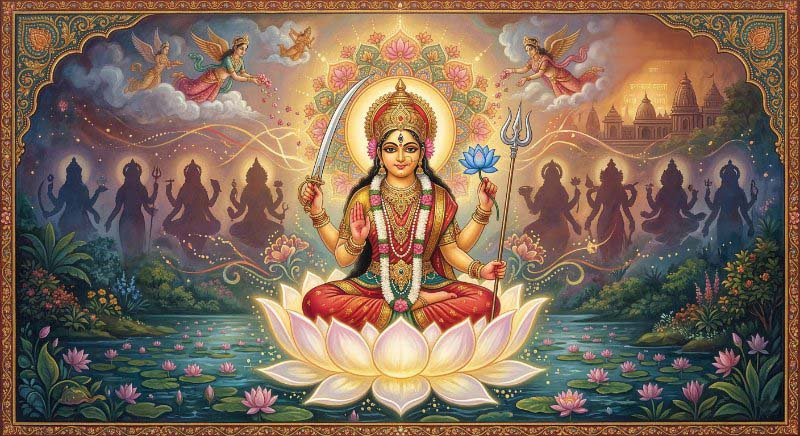
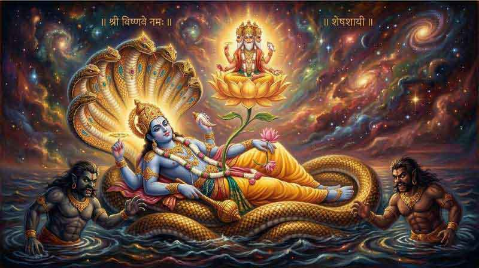
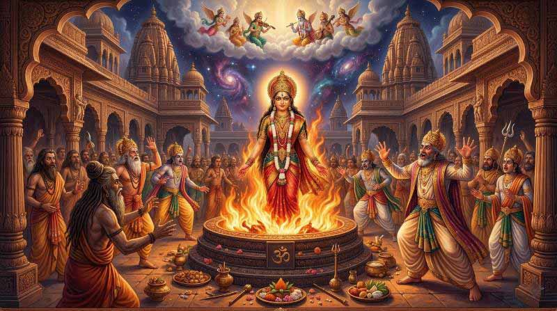
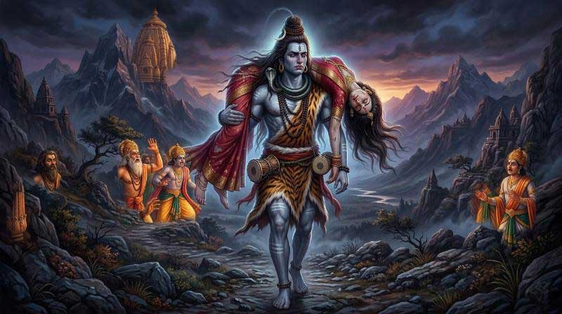
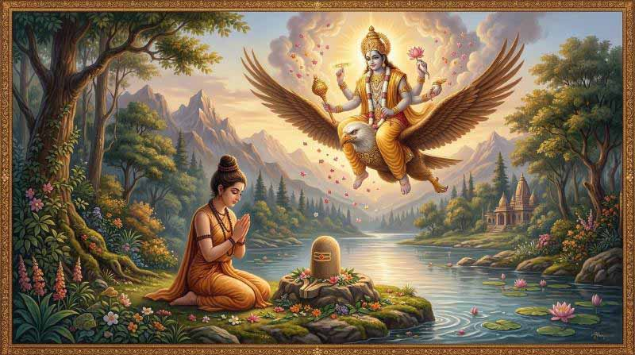
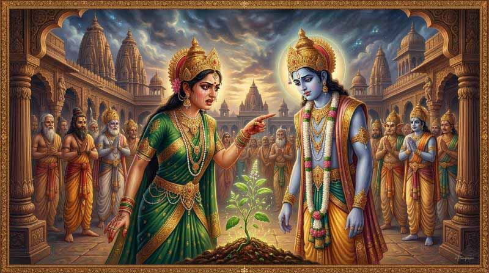
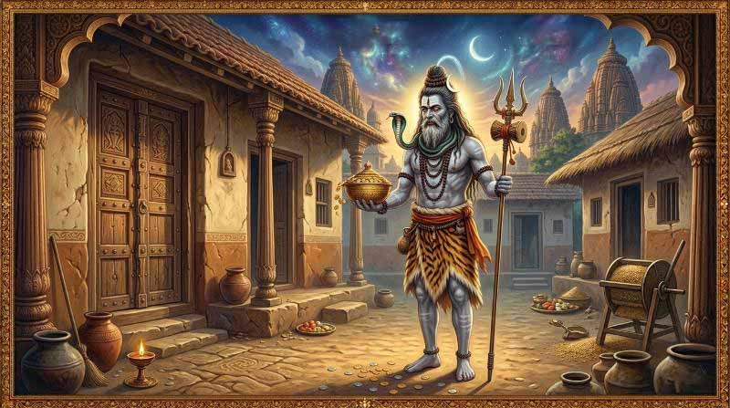
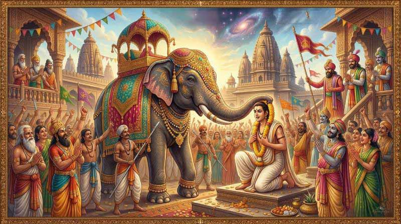
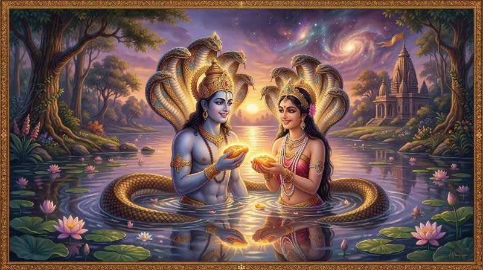

श्री स्वस्थानी व्रत कथा
स्तुति र मन्त्र पाठ
प्रत्येक दिन कथा (अध्याय) आरम्भ गर्नु भन्दा पहिले वाचनले यो मन्त्र स्तुति पढ्नु
ध्यानावस्थिततद्गतेन मनसा पश्यन्ति यम् योगिनो यस्यान्तम् न विदु: सुरासुरगणा देवाय तस्मै नम:।
श्रीमच्चन्दनचर्चितोज्ज्वलवपु: शुक्लाम्बरा मल्लिका मालाङ्कृतकुण्डला प्रविलसन्मुक्ता वलीशोभिता।
सर्वज्ञाननिदानपुस्तकधरा रुद्राक्षमालाकरा वाग्देवी वदनाम्बुजे वसतु मे त्रैलोक्यमाताचिरम्।
मूकं करोति वाचालं पङ्गुं लङ्घयते गिरिम् यत्कृपा तमहं वन्दे परमानन्दमाधवम्।
नमो भगवते तस्मै व्यासाय अमिततेजसे यस्य प्रसादाद् वक्ष्यामि नारायणकथामिमाम्।
नारायणं नमस्कृत्य नरं चैव नरोत्तमम् देवीं सरस्वतीं व्यासं ततो जयमुदीरयेत्।
या कुन्देन्दुतुषारहारधवला या शुभ्रवस्त्रावृता या वीणावरदण्डमण्डितकरा या श्वेतपद्मासना।
या ब्रह्माच्युतशङ्करप्रभृतिभिर्देवैः सदा वन्दिता सा मां पातु सरस्वती भगवती निःशेषजाड्यापहा।
कायेन वाचा मनसेन्द्रियैर्वा बुद्ध्यात्मना वा प्रकृतिस्वभावात् करोमि यद्यत्सकलं परस्मै नारायणायेति समर्पयामि।
प्रत्येक दिन कथा (अध्याय) पढिसकेपछि वाचनले यो मन्त्र स्तुति पढ्नु
ध्यानावस्थिततद्गतेन मनसा पश्यन्ति यम् योगिनो यस्यान्तम् न विदु: सुरासुरगणा देवाय तस्मै नम:।।
श्रीमच्चन्दनचर्चितोज्ज्वलवपु: शुक्लाम्बरा मल्लिका मालाङ्कृतकुण्डला प्रविलसन्मुक्ता वलीशोभिता।
सर्वज्ञाननिदानपुस्तकधरा रुद्राक्षमालाकरा वाग्देवी वदनाम्बुजे वसतु मे त्रैलोक्यमाताचिरम्।।
मूकं करोति वाचालं पङ्गुं लङ्घयते गिरिम् यत्कृपा तमहं वन्दे परमानन्दमाधवम्।
नमो भगवते तस्मै व्यासाय अमिततेजसे यस्य प्रसादाद् वक्ष्यामि नारायणकथामिमाम्।।
नारायणं नमस्कृत्य नरं चैव नरोत्तमम् देवीं सरस्वतीं व्यासं ततो जयमुदीरयेत्।
या कुन्देन्दुतुषारहारधवला या शुभ्रवस्त्रावृता या वीणावरदण्डमण्डितकरा या श्वेतपद्मासना।।
श्री स्वस्थानी व्रत पूजा विधि
व्रतको आरम्भ र नियमहरू
श्री स्वस्थानी परमेश्वरीको व्रत गर्ने पुरुष वा स्त्रीले पौष शुक्ल पूर्णिमाको दिन देखिन आरम्भ गर्नु। अघिल्लो दिन अर्थात् चतुर्दशीको दिन हात खुट्टाको नङ काटी पवित्र भएर एक छाक हविष्य भोजन गरी ब्रह्मचर्य पालन गरी खाट बिछ्यौना त्यागी भुइँमा शयन गर्नु। अनि भोलिपल्ट अर्थात् पौष शुक्ल पूर्णिमाको दिन पूजा गर्ने स्थानमा बसेर आचमन गरी मनले "आज देखिन म एक महिना सम्म श्री स्वस्थानी परमेश्वरीको व्रत गर्दछु" भनी प्रतिज्ञा गर्नु। त्यस दिन देखिन सकेसम्म कसैसँग झगडा नगर्नु, दुर्वाच्य वचन नबोल्नु, र सात्विक भाव हृदयमा राख्नु पर्दछ।
दैनिक पूजा र नित्यकर्म
प्रतिदिन बिहान उठेर नित्यकर्म गरिसकी जो सकेको पत्र, पुष्प, फल, जलले स्वस्थानी परमेश्वरीको पूजा गर्नु। मध्य भएपछि श्री महादेवको आफ्नो शक्ति अनुसार सबै सामग्री तयार पारेर पूजन गर्नु। यो क्रम एक महिना सम्म टुटाउनु हुँदैन। सधैँ एकनासी त गर्दै रहनु पर्दछ।
कथा वाचन तथा श्रवण विधि
प्रत्येक दिन सूर्यास्त भएपछि सकेदेखिन नखाई, नसके हविष्य भोजन गरेर भए पनि श्री स्वस्थानी परमेश्वरीको कथा भन्नु वा भन्न लगाएर सुन्नु। आफ्ना इष्टमित्र र बन्धु बान्धवहरुलाई पनि कथा भन्न राख्नु वा सुन्न डाख्नु। कथा आरम्भ गर्नु भन्दा पहिले र भनिसकेपछि धुप, दीप, नैवेद्य चढाई पुस्तकको पूजा गर्नु र श्रोतालाई जति सबैलाई प्रसाद दिई आफूले पनि खानु।
व्रत समापन तथा विशेष पूजा (माघ शुक्ल पूर्णिमा)
यस क्रमले जब माघ शुक्ल पूर्णिमाको दिन आउँछ तब नित्य भनिने कथा समाप्त गरी विशेष पूजाका लागि आरसी अर्थात् तामाको थालीमा ॐकार लेखी त्यसमा पवित्र बालुवाको शिवलिङ्ग बनाई त्यही थालीमा स्थापना गर्नु। त्यसपछि अक्षता, बेली पुष्प, यज्ञसूत्र, तिल, जौ, पान, सुपारी, रोटी, बत्ती तथा अरु पनि त्यस ऋतुमा पाइने फलफूल इत्यादि गनेर १०८ का दरले चढाउनु पर्दछ। पूजा थाल्नु भन्दा पहिले दीप, कलश, गणेश र वरुण आदि सबै देवताको विधिपूर्वक पूजा गर्नुपर्दछ।
प्रथम अध्याय: सृष्टि क्रम वर्णन
अगस्त्य मुनि र स्कन्दकुमार संवाद
पू
र्वकालमा समस्त मुनिहरुमा सबै प्रकारले ख्याति प्राप्त गरेका अगस्त्य मुनि आफ्नो आश्रममा तपमा लीन थिए। एकदिन मयुरमा चढेर स्कन्दकुमार त्यहीँ पाल्नुभयो। अगस्त्य मुनिले देखेर सम्मान साथ आसनमा बसाली स्वागत सत्कार गरेपछि नम्र प्राणीले सोधे, "हे कुमार, यो संसार कसरी सृष्टि भयो? यसको विषयमा जान्न इच्छा भयो, म उपर कृपा गरी आज्ञा भए आफूलाई धन्य सम्झिने थिएँ" ।
सृष्टिको आरम्भ
अगस्त्यको प्रश्न सुनेर कुमारजी भन्नुहुन्छ, "हे मुनि तिमी एकचित्त भई सुन, म तिमीलाई सृष्टिको क्रम सुनाउँछु। यो सृष्टि प्रारम्भ हुँदा पहिले परब्रह्म परमात्माको इच्छा स्वयं स्फुरण हुनासाथ त्यही इच्छाले प्रेरित समस्त गुणले युक्त ब्रह्मा, विष्णु र शिव प्रकट भए। तिनका शक्ति स्वरूप त्रिगुणले युक्त माया वा प्रकृति उत्पन्न भइन्। त्रिगुणात्मिका मायालाई जित्न वा वश गर्न अत्यन्त कठिन छ। उनै माया भन्दा पर प्रतिष्ठा युक्त निवृत्ति पद छ। त्यो भन्दा पर शान्ति पद र ऊ भन्दा पनि पर शान्त्यतित पद छ। त्यसपछि विद्या पद छ र विद्या भन्दा पनि पर निवृत्ति पद छ। जान्नेहरु त्यसलाई मोक्ष पद पनि भन्दछन्। यो संक्षेपमा भयो, अलि विस्तारले सृष्टिको क्रम बुझाउन र बुझ्न पनि निकै कठिन छ। संक्षेपमा भनेको कारण पनि मुख्य यही हो।"
प्रलय र मायाको चक्र
"प्रलय र सृष्टिको क्रम बेग्ला बेग्लै छ। एक नियमले सृष्टि हुन्छ र अर्को नियमले प्रलय हुन्छ। जो त्रिगुणात्मिका माया छन् ती शान्ति, विद्या, प्रतिष्ठा र निवृत्ति आदि पदमा रहन सक्दिनन्। माया भन्दा पनि टाढा रहने जो अव्यक्त छ, त्यो आत्मामा विद्यमान छ। जीव अज्ञानी र प्रकृति जड हुनाले समस्त परमाणु अचेतन छन्। कारण विना कुनै कार्य हुन सक्दैन। यसैकारण जगतको अधिष्ठाता परमात्माको इच्छा विना कुनै कार्य पनि हुन सक्दैन। यो कुरा वेद शास्त्रले पनि स्वीकारेका छन्। ता पनि वेदान्त आदि शास्त्रमा सबैको गति नपुग्ने हुनाले सबैलाई तुरुन्त निश्चय हुन सक्दैन। त्यसैकारण जन्म मरण रूप बन्धन नटुटेर त्यसैको सुख दुख केवल अनुभव गर्ने जीवद्वारा यो संसारको क्रम चलिरहेको छ।"
ब्रह्माण्डको स्वरूप र भ्रम
"यो क्रम कल्प कल्पको भेदले भिन्न भिन्न झैँ देखिने हुँदा अनेकौं कल्प मध्ये केवल पद्म कल्पको मात्र वर्णन गर्दछु। ब्रह्मा, विष्णु, शिव एक हुन्, यिनमा सानो र ठूलो भन्ने भेद छैन। हे मुनि, सृष्टि गर्ने चतुर्मुख ब्रह्मा, पालन गर्ने विष्णु, संहार गर्ने रुद्र हुन्। विष्णु र शिवका आयुको अवधि वा प्रमाण छैन। ब्रह्माको सय वर्ष परमायु कहिन्छ। उनको प्रथम ५० वर्षलाई परार्ध भन्दछन्। सय वर्ष पुगेपछि उनको पनि नाश हुन्छ वा प्रलय हुन्छ। प्रलय भएपछि समस्त संसार र यसमा रहेका वस्तुहरु केही रहन्नन्। अनि ईश्वरद्वारा अर्को सृष्टिको क्रम आरम्भ हुन्छ। त्यो नयाँ सृष्टि पनि अगाडि जुन क्रमले चलेको थियो स्वै प्रकारले चल्न थाल्दछ। प्रलय चाहिँ अनेक प्रकारले हुन सक्दछ। ब्रह्माको घर गृहस्थी सबै छ। उनले पनि खानु सुत्नु पर्दछ। उनी बस्ने लोकको नाम सत्यलोक हो। प्रातःकाल हुँदा उनले सृष्टि गर्दछन्। उनको एक दिनमै सत्य, त्रेता, द्वापर, कलि चार युग ७२ पल्ट घुमिरहन्छन्। रात परेपछि प्रलय गर्दछन्। त्यही क्रमले जब ब्रह्माको सय वर्ष पुग्दछ तब महाप्रलय हुन्छ।"
"त्यस महाप्रलय पछि फेरी पहिले जस्तै रजोगुणले युक्त ब्रह्मा उत्पन्न गराई अहंकार र पञ्चमहाभूत, ज्ञानेन्द्रिय, कर्मेन्द्रिय, पञ्चतन्मात्रा, शब्द, रूप, रस, गन्धले युक्त एउटा अण्ड उत्पन्न हुन्छ वा बन्दछ। त्यो अण्ड ब्राह्ममय हुनाले त्यसको नाम ब्रह्माण्ड रहेको हो। त्यही अण्ड फुटेर दुई भाग भएपछि एक भागको प्रकृति र अर्को भागको पुरुष बन्दछ। त्यसैबाट प्रथम सृष्टि चतुर्मुख ब्रह्मा भए, पालन गर्ने अनन्त कोटि ब्रह्माण्डका स्वामी विष्णु भए, संहार गर्ने महारुद्र भए। यिनैले यो सृष्टिको कार्य निर्वाद गतिले गर्दछन्। जसको इच्छाले त्यो अण्डको उत्पत्ति हुन्छ, त्यस परम ब्रह्म परमात्मालाई त्रिगुण, गुणातीत, चतुर्व्यूह, अनादि, अजन्मा, हिरण्यगर्भ, प्रजापति आदि भन्दछन्।"
"सुमेरु पर्वत समुद्रको बीचमा समस्त जीवहरु गर्भाशयमा बालक रहेझैँ रहेका छन्। सूर्य, चन्द्र, ग्रह, नक्षत्र आदि पनि त्यही सुमेरीको चारैतिर स्थित छन्। निराकार आकाश र त्रिगुणात्मिका माया र पञ्चमहाभूतले बेरिए झैँ भई आकारवान् अर्थात् एक रूपबाट अर्को रूप देखिन्छ। तर त्यस आकाशलाई राम्ररी विचार गर्दा आदि, मध्य, अन्त्य नभएको अनादि, अनन्त परमेश्वरको लीला मात्र हो। यो संसार नै भ्रान्तिको रूप हो किनकि उनै ईश्वरको इच्छाले सृष्टि, स्थिति, संहार हुन्छ। धागोमा दाना उनिए झैँ यो संसार परब्रह्मामा उनिएको छ। अनन्त कोटि ब्रह्माण्डको गणना गर्न सकिन्न। जति ब्रह्माण्ड छन् उति नै ब्रह्मा, विष्णु, शिव, चन्द्र, सूर्य, इन्द्र, दिक्पालहरु भिन्न भिन्न छन्। जस्तै स्वप्नमा देखिएका अनेकौँ सुखदुखको अनुभव जागा हुनासाथ केही पनि रहन्न। त्यस्तै यो मिथ्या अनित्य संसारका सुखदुख पनि स्वप्न जस्तै छ।"
"सुख दुख त मनको मात्र अनुभव गर्दछ। त्यसको भागी जुन मन हो त्यसलाई आफ्नो वशमा राख्नु नै ईश्वर प्राप्तिको मुख्य बाटो हो भन्ने कुरा पण्डितले राम्ररी बुझ्नुपर्दछ। हे मुनि, तिमी पनि एकाग्र मनले तपस्या गर, अवश्य सिद्ध मिल्नेछ। मैले यो सृष्टिको क्रम संक्षेपमा सुनाएँ, अब दोस्रो अध्यायमा पद्मकल्पको वर्णन गर्नेछु, ध्यानपूर्वक सुन।"
इति श्री स्कन्द पुराणे केदार खण्डे माघ महात्म्ये कुमार अगस्त्य संवादे श्री स्वस्थानी व्रत कथायाम् सृष्टि क्रम वर्ण नाम प्रथम अध्याय।
द्वितीय अध्याय: दिग्पाल र प्राणी सृष्टि वर्णन

कमलको उत्पत्ति र मधु-कैटभ युद्ध
मु
नि, अघि यो संसार जलमय छँदा विष्णु भगवान्का नाभिबाट सहस्र दल कमल उत्पन्न भयो। त्यस कमलमा बसी ब्रह्मा सृष्टि गर्ने विचार गर्दै थिए। त्यही अवसरमा विष्णु भगवान्को कानेगुजीबाट अत्यन्त पराक्रमी मधु-कैटभ नामका दुई वीर उत्पन्न भए। ती दैत्यले जलमय संसारमा कहाँ के छ भनी घुम्दा ब्रह्मा बसेको स्थानमा पुगी कमलको डाँठ समातेर माथि गई हेर्दा ब्रह्माजीलाई देखे र उनलाई खसाल्न तयार भए। त्यो देखेर डराएका ब्रह्माले योगमायाको आराधना गरे। योगमाया प्रकट भएपछि ब्रह्माले, "हे ईश्वरी, विष्णुलाई जागा गराइदिनुहोस्," भनेर उनले ब्रह्माको कष्ट बुझी विष्णु भगवान्लाई जागा गराइदिइन्।
भगवान् जागा भएर हेर्दा ती मधु-कैटभलाई देखी तत्काल युद्ध गर्न अघि सरे। दिव्य पाँच हजार वर्षसम्म जलमा युद्ध भयो तर हारजित हुन सकेन। अनि विष्णुले, "हे दानव हो, तिमीहरू पराक्रमी रहेछौ, म प्रसन्न भएँ, इच्छा भएको वर माग" भन्दा अहङ्कारी मधु-कैटभले भने, "हे विष्णु, यस युद्धमा हाम्रो जित भयो, तिमी हार्नेले के दिन सक्छौ? बरु तिमीलाई इच्छा लागेको वर हामीसँग माग"। दैत्यका त्यस्ता कुरा सुनि विष्णुले भन्नुभयो, "पहिले वाचा गर, अनि मात्र म वर माग्दछु"। अनि दानवहरूले, "तिमीहरूले जे मागे पनि अवश्य दिनेछौं" भनी वाचा गरेपछि विष्णु भगवान्ले "अरू वर के मागूँ, तिमी दुवैलाई म मार्दछु" भन्नुभयो। मेरा हातबाट मर भनेको सुनि मधु-कैटभले भने, "हे विष्णु, तिमी छली रहेछौ, कपट गरेर वर माग्यौ, वाचा हारेको हुनाले हामी दिन्छौं। अब के गर्ने भनी विचार गर्दा सारा संसार जलमग्न देखी भने, "हे विष्णु, हामीलाई जल नभएको स्थानमा मार"। दैत्यका त्यस्ता कुरा सुनि विष्णुले आफ्नो काखमा राखेर सजिलैसँग दुवैलाई मारे। तिनै दैत्यको बोसो शीतकालमा तुषारोको पानी जमेझैँ समुद्रको जलमा जमेर पृथ्वी भइन्, मासुले पर्वत र हाडले पत्थर भयो।
सृष्टिको आरम्भ: चौध भुवन र सात समुद्र
त्यो देखेर ब्रह्माले संसार सृष्टि गर्न भनी पहिले चौध भुवन सृष्टि गरे। कुन कुन भने: भूर्लोक, भुवर्लोक, स्वर्लोक, महर्लोक, जनलोक, तपोलोक, सत्यलोक र अतल, वितल, सुतल, तलातल, महातल, रसातल, पाताल। यति तलका जम्मा चतुर्भुज भुवन र द्वीप सृष्टि गरे। कुन कुन भने: जम्बुद्वीप, प्लक्षद्वीप, शाल्मलीद्वीप, कुशद्वीप, क्रौञ्चद्वीप, शाकद्वीप, पुष्करद्वीप। त्यसपछि सात समुद्र सृष्टि गरे: क्षीरोद समुद्र, सुरोद समुद्र, इक्षुरसोद समुद्र, घृतोद समुद्र, दधिमण्डोद समुद्र, क्षीरोद समुद्र, शुद्धोद समुद्र। जम्बुद्वीप क्षीरोद समुद्रले वेष्टित छ, त्यहाँ अग्नीध्र राजा राज्य गर्दछन्। प्लक्षद्वीप इक्षुरसोद समुद्रले वेष्टित छ, त्यहाँ इध्मजिह्व राजा राज्य गर्दछन्। शाल्मलीद्वीप सुरोद समुद्रले वेष्टित छ, त्यहाँ यज्ञबाहु राजा छन्। कुशद्वीप घृतोद समुद्रले वेष्टित छ, त्यहाँ हिरण्यरेता राजा छन्। क्रौञ्चद्वीप क्षीरोद समुद्रले बेरिएको छ, त्यहाँ घृताप्रस्थ राजा छन्। शाकद्वीप दधिमण्डोद समुद्रले बेरिएको छ, त्यहाँ मेधातिथि राजा राज्य गर्दछन्। पुष्करद्वीप शुद्धोद समुद्रले वेष्टित छ, त्यहाँ वीतिहोत्र राजा राज्य गर्दछन्। जम्बुद्वीपको विस्तार चार लाख कोस छ। यसको आकार कमलगट्टा जस्तै छ। यसमा नौ-नौ हजार योजनका नौ खण्ड छन्।
पर्वत र प्राणीहरूको सृष्टि
यस प्रकार सृष्टि गरिसकी अष्टपर्वत सृष्टि गरे। कुन कुन भने: सुमेरु पर्वत, गन्धमादन पर्वत, कैलास पर्वत, हिमालय पर्वत, त्रिकुट पर्वत, चित्रकूट पर्वत, चन्द्रकान्तक पर्वत, चन्द्रकुट पर्वत। त्यसपछि प्राणी सृष्टि गरौं भनेर महादेवको तपस्या गरे। दिव्य बाह्र हजार वर्ष कठोर तपस्या गरेपछि महादेव प्रकट भएर, "ब्राह्मण, तिम्रो तपस्याले म प्रसन्न भएँ, वर माग" भन्ने आज्ञा भएको सुनि ब्रह्माले अनेक उपचारले शिवको पूजा गरी स्तुति गर्न लागे। "हे ईश्वर, आफैले अनेक ब्रह्माण्डको रचना गरी आफ्नै मायामा भुलिरहेका यस्ता हजुरलाई कोटि कोटि नमस्कार, एक मूर्तिबाट तीन मूर्ति ब्रह्मा, विष्णु, शिव भइरहेका यस्ता हजुरलाई कोटि कोटि नमस्कार। हे ईश्वर, हजुरको महिमा वर्णन गर्न शेष र शारदाले पनि नसकेको म कसरी समर्थ हुनेछु? हजुरको कृपाले द्वीप, समुद्र, पर्वत सृष्टि गरेँ। अब प्राणी सृष्टि गर्न सकूँ, यही वर दिनुहोस्" भनी बिन्ती गरे। ब्रह्माजीले प्रार्थना र आग्रह बुझी महादेवले आज्ञा भयो, "ब्राह्मण, तिमी प्राणी सृष्टि गर्न सके" भनी वरदान दिनुभयो।
सुमेरु पर्वत र देवताहरूको वासस्थान
अनि ब्रह्माले महादेवलाई दण्डवत् गरी प्राणी सृष्टि गर्न सुमेरु पर्वतमा गए। पहिले शिवलोक, विष्णुलोक, ब्रह्मलोक, उमालोक, स्कन्दलोक र अरु अनेक लोक सृष्टि गरे। तिनमा सबैभन्दा माथि सत्यलोक सृष्टि गरे। अनि सुमेरु पर्वतको पूर्व दिशामा अमरावती, आग्नेय कोणमा शुद्धावती, दक्षिण दिशामा यमपुरी, नैऋत्य कोणमा कृष्णावती, पश्चिम दिशामा श्रद्धावती, ईशान कोणमा यशोवती नामका पुरीहरू रचना गरे। त्यसपछि स्थावर जङ्गम सृष्टि गरे। अनि प्राणी सृष्टि गर्ने इच्छा भयो, ब्रह्माले चिताउनासाथ कश्यप प्रवृत्ति एक सय ऋषि सृष्टि भए।
दिग्पालहरूको उत्पत्ति
यति सुनेर अगस्त्य मुनिले सोधे, "हे कुमारजी, हजुरको वचन रूपी अमृत मेरो कान रूपी पिउन माग्दैछ। अब देव, दानव, पशु, पन्छी, मनुष्य कसरी सृष्टि भए, त्यो सुन्ने इच्छा छ"। मुनिको इच्छा जानेर कुमारजी आज्ञा गर्नुहुन्छ, "हे मुनि, कश्यप ऋषिका अदिति, दिति, दनु, काष्ठा, अरिष्टा, सुरसा, इला, मुनि, क्रोधा, प्राधा, वरिष्ठा, विनता, कपिला, कद्रु र मनु यस्ता स्त्रीहरू थिए। अतः दितिका गर्भबाट हिरण्यकशिपु आदि दैत्य जन्मे। अदितिका गर्भबाट चन्द्र-सूर्य आदि तेत्तीस कोटि देवताहरू जन्मे। दनुका गर्भबाट दानवहरू जन्मे। कारा-घोराका गर्भबाट गन्धर्वहरू जन्मे। सिंहिकाको गर्भबाट राहु जन्म्यो। प्राधाका गर्भबाट उर्वशी आदि अप्सराहरू जन्मे। क्रोधाका गर्भबाट क्रोध जन्म्यो। मनुका गर्भबाट ब्राह्मण, क्षत्रिय, वैश्य, शूद्र यी चार थरी मनुष्य जन्मे। वरिष्ठा र विनताका गर्भबाट अरुण, गरुड, सम्पाती, मयुर, कोकिल, सुँगा, ढुकुर, परेवा, जीवनजीव, मुनिया, धोबिनी, राजहंस आदि पन्छीहरू जन्मे। कपिलाका गर्भबाट कामधेनु, सिंह, शार्दूल, बाघ, हात्ती, घोडा, मृग, बँदेल, राँगो, खरायो आदि पशुहरू जन्मे। कद्रुका गर्भबाट शेषनाग, अनन्तनाग, पद्मनाग, वासुकीनाग, कुलिकनाग, कर्कोटकनाग, तक्षकनाग, शंखनाग आदि अष्टनागहरू जन्मे"। यसरी देवता, ऋषि, यक्ष, गन्धर्व, किन्नर, अप्सरा, नाग, मनुष्य, पशु-पन्छीहरू सृष्टि भएको देखि ब्रह्माले तिनीहरूलाई खाने आहारा धान, जौ, तिल आदि अनेक तरहका अन्न र फलफूल सृष्टि गरे।
दिग्पालहरूको तपस्या र वरदान
"हे मुनि, यो मैले अत्यन्त संक्षेपमा भनें, अरु पुराणबाट विस्तारले बुझ्नेछौ"। "यो सृष्टिका कुरा सुनाएँ, अब के सुन्ने इच्छा छ भन?" भन्दा अगस्त्य मुनि भन्छन्, "हे कुमार, कुन-कुन भुवनमा कुन-कुन देवता छन् र दिक्पाल कसरी भए? यो सुन्ने इच्छा छ"। यति सुनि कुमारजी आज्ञा गर्नुहुन्छ, "हे मुनि, कैलाश भुवनमा महादेव हुनुहुन्छ, वैकुण्ठ भुवनमा विष्णु भगवान छन्, सत्य भुवनमा ब्रह्मा छन्, उमा भुवनमा पार्वती छन्, स्कन्द भुवनमा म छु, ध्रुव भुवनमा ध्रुव ऋषि छन्, नैशृंग्य भुवनमा अन्य ऋषिहरू छन्। यति भुवनका कुरा कहँे, अब दिक्पाल भएका कुरा भन्दछु"।
"कश्यप ऋषिका छोरा इन्द्रले हिमालमा गई धेरै कालसम्म कठोर तपस्या गरे। महादेव प्रसन्न भई, 'हे इन्द्र, तिम्रो तपस्याले म प्रसन्न भएँ' भनी वरदान दिई अमरावतीको अधिपति र पूर्व दिशाको दिक्पाल बनाई पठाए। फेरि एउटाले गई उसैगरी तपस्या गर्दा महादेव प्रसन्न भएर अग्नि नाम राखी अग्निकोणको दिक्पाल बनाई शुद्धावतीको अधिपति गरी पठाइए। फेरि अर्कोले गई त्यसैगरी तपस्या गरे, महादेव प्रसन्न भई यम नाम राखी दक्षिण दिशाको दिक्पाल बनाई यमपुरीको अधिपति गराई पठाए। फेरि एउटाले गई त्यसैगरी तपस्या गरे, महादेव खुसी भई निरृति नाम राखी नैऋत्यकोणको दिक्पाल र कृष्णावतीको अधिपति गराई पठाए। फेरि अर्कोले गई त्यसैगरी तपस्या गरे, महादेव प्रसन्न भई वरुण नाम राखी पश्चिम दिशाको दिक्पाल र श्रद्धावतीको अधिपति गराई पठाए। फेरि उनन्चास वायुले गई त्यसैगरी तपस्या गरे, महादेव प्रसन्न भई 'वरदान माग' भन्दा ती वायुले, 'हामी उनन्चासै जना एक हुन सकौं र हामीलाई कोही नदेखून्, केवल शब्द मात्र सुनून्, बलमा पनि कसैले जित्न नसकून्' भनी माग्दा महादेवले 'तथास्तु' भनी वरदान दिएर वायु नाम राखी वायव्यकोणको अधिपति बनाई पठाए। फेरि एउटाले गई त्यसैगरी तपस्या गरे, महादेव खुसी भई कुबेर नाम राखी उत्तर दिशाको दिक्पाल र अलकापुरीको अधिपति गराई पठाए। फेरि एउटाले गई त्यसैगरी तपस्या गरे, महादेव प्रसन्न भई विश्वकर्मा नाम राखी ईशान कोणको दिक्पाल र यशोवतीको अधिपति बनाई पठाए"।
"हे मुनि, यति दिक्पाल भएका कुरा कहँे, अब के सुन्ने इच्छा छ भन"। कुमारको यस्ता वचन सुनी अगस्त्य मुनि भन्छन्, "महादेव र सतीदेवीको विवाह भएको र सतीदेवी मर्दा उत्पन्न भएको, फेरि सतीदेवी महादेवकी पत्नी कसरी भइन् र कस्तो कारण परेर उनको मृत्यु भयो, यो सबै विस्तारमा आज्ञा होस्"। मुनिको इच्छा जानी प्रसन्न भएका कुमारजीले "यो कुरा तेस्रो अध्यायमा वर्णन गर्नेछु" भन्नुभयो।
इति श्री स्कन्द पुराणे केदार खण्डे माघ महात्म्ये कुमार अगस्त्य संवादे श्री स्वस्थानी व्रत कथायाम् दिग्पाल वर्णन नाम द्वितीय अध्याय।
तृतीय अध्याय: दक्ष कन्या विवाह वर्णन
दक्ष प्रजापतिका कन्याहरूको जन्म
कु
कुमारजी आज्ञा गर्नुहुन्छ, "हे अगस्त्य मुनि, अष्ट प्रजापतिमा सबभन्दा जेठा दक्ष प्रजापति थिए। तिनकी वीरिणी नामकी सातवी एवं पतिव्रता स्त्री थिइन्। वीरिणी गर्भिणी भइन् र दश मास पूर्ण भएपछि पुत्री जन्मिन्। कस्ती कन्या भने हजार सूर्यको जस्तो तेज भएकी, बत्तीस लक्षणले युक्त, पद्मपत्र जस्तो नेत्र भएकी, अरुण उदय भए जस्तो रक्त वर्ण भएकी, हात्तीका सुँड जस्तो हात भएकी, कदली स्तम्भ जस्तो फिला भएकी, चन्द्रमाको जस्तो उज्ज्वल र शान्त मुख भएकी। यस्ती परम सुन्दरी कन्या जन्मेकी देखी दक्ष प्रजापतिले आनन्द मान्दै आफ्ना गुरु पुरोहित वशिष्ठ आदि ज्योतिषलाई डाकी विधिपूर्वक न्वारन गराए। सबै ऋषि ज्योतिषले गणना गरेर भने, 'हे दक्ष प्रजापति, यी बालिकाको नाम सतीदेवी भन्ने तिनै भुवनमा प्रख्यात हुनेछ।' दक्ष प्रजापतिले भोजन गराई दक्षिणा दिई बिदा गरे। सबै जना आ-आफ्ना आश्रमतिर लागे। हे मुनि, यो कुरा धेरै लामो छ तथापि म संक्षेपमा भन्दछु। त्यसपछि वीरिणीका क्रमैले तेत्तीस कोटि कन्या जन्मे। ती सबैलाई दुवै दम्पतीले यथायोग्य रूपमा पालन गरे।"
तेत्तीस कोटि कन्याको देवताहरूसँग विवाह प्रस्ताव
अनि अगस्त्य मुनिले सोधे, "हे कुमार, ती कन्याहरूको विवाह तेत्तीस कोटि देवतासँग कसरी भयो? त्यो पनि सुन्ने इच्छा छ।" त्यति सुनी कुमार आज्ञा गर्दछन्, "हे अगस्त्य मुनि, एक दिन स्वर्गका देवता, ऋषि, यक्ष, गन्धर्व, किन्नर, दश दिक्पाल जम्मा भई सल्लाह गरेर 'हाम्रा स्त्री छैनन्, दक्ष प्रजापतिका तेत्तीस कोटि कन्या विवाह गरौं' भने। तर कन्या माग्न कसलाई पठाउने भनी मत मिलाई नारदजीलाई डाकी सबै कुरा बुझाएर 'दक्ष प्रजापतिकहाँ कन्या माग्न जाऊ' भनी नारदजीलाई स्वीकार गराई पठाए। दक्ष प्रजापतिका घरमा नारदजी कन्या माग्न गए। दक्ष प्रजापतिले उचित शिष्टाचार गरेर 'के कामले पाल्नुभयो' भनी सोधेपछि आफूलाई देवताहरूले पठाएको कुरा सुनाए, 'हे दक्ष, तिम्रा तेत्तीस कोटि कन्या तेत्तीस कोटि देवताहरूलाई देऊ' भने। नारदजीका कुरा सुनी दक्ष प्रजापति प्रसन्न भएर 'हे नारद, तिमीले असल कुरा गर्यौ, म धन्य रहेछु। मेरा तेत्तीस कोटि कन्या तेत्तीस कोटि देवताहरूलाई मेरो वचनले दिने भएँ। एउटी सतीदेवी मात्र दिने छैन किनकि मेरा पुत्र छैनन्, सम्पत्तिको रक्षा कसले गर्ला। अन्य सबै कन्या तिमी जसले भन्छौ, जसरी भन्छौ र जसलाई दिने भन्दछौ, उसैलाई दिनेछु। अब यहाँबाट गएर विवाहको दिन ठहराई पठाउन लगाऊ' भनी अनेक उपचारले पूजा गरे।"
देवताहरूको विवाह र महादेवको चिन्ता
"नारदजी दक्षसित बिदा मागी सरासर स्वर्ग गए। नारद आएको देखी देवताहरूले प्रसन्न भई 'तिमी गएको काम कस्तो भयो' भनी सोधे। नारदले सतीदेवी बाहेक अन्य सबै कन्या दिन्छु भनेको कुरा सुनाए। अनि देवताहरूलाई धन्य नारद मुनि भन्दै प्रशंसा गरी विवाहको दिन ठहराउन पठाए। त्यसपछि विवाहको सामग्री तयार गरी देवताहरू कन्यादान लिन भनी दक्षका घरमा पुगे। उनीहरूले देवताहरू आएको देखी आनन्द मान्दै मंगल यात्रा गर्दै आफ्नो मर्यादाले सतीदेवी बाहेक तेत्तीस कोटि कन्या नारदजीको आज्ञा अनुसार तेत्तीस कोटि देवतालाई कन्यादान दिए। देवताहरू कन्यादान पाई हर्षपूर्वक आ-आफ्ना स्त्री लिई आ-आफ्ना आश्रममा गए। यो वृत्तान्त कैलाश पर्वतमा रहेका शिवजीले थाहा पाएर 'देवताहरूले मलाई बाहेक पारे, एक वचन पनि नसोध्नु आफू-आफूले कन्यादान लिएछन्। कैलाशको स्वामी भएर पनि मेरा स्त्री छैनन्, अब मलाई कसले कन्या देला' भनी ध्यान दृष्टिले विचार गरी हेर्दा दक्षकी तेत्तीस कोटि कन्यामा सबभन्दा जेठी बाँकी रहिछन्। 'देवताहरूले मेरो मर्यादा त राखेका रहेछन्। अब ती कन्या माग्न कसलाई पठाऊँ, आफैं जान्छु' भनी दक्ष घर गए।"
दक्षद्वारा महादेवको अपमान र विष्णुको सहयोग
"दक्षले महादेव आउन लागेको परैबाट देखी विरक्तसित भने, 'हे पापिष्ट महादेव, मेरी कन्या सतीदेवी तेरो योग्य कसरी होली? तँ कस्तो भने मसानको खरानी घस्ने, सर्पको गहना लगाई बाघको छाला ओढेर डमरु त्रिशूल लिई बुढो साँढेमा चढेर हिँड्ने मान्छे। विष भाङ धतुरो खाई भूत प्रेत लिई मसानमा बस्ने, दिगम्बर भई देख्दैमा पनि घिन लाग्ने। यस्तो तैले मेरो मुख अगाडि आई यस्तो अयोग्य कुरा गरिस्। जा मेरो घरमा नबस्' भनी महादेवलाई पाखुरामा समातेर घरबाट धपाए। महादेवले यस्तो किसिमले दक्षले क्षुद्र वचनद्वारा निन्दा गरेको सुनी साह्रै नै चित्त दुखाई बाहिर आएर 'नदिने भए दिन्न भन्नु पर्थ्यो नि। यस्तो निन्दा गर्ने काम थिएन। अब कहाँ जाऊँ, के गरूँ, ती कन्या कसले मलाई पारिदेला' भन्ने तर्क वितर्क गर्दै विष्णुको वैकुण्ठ धाममा महादेव पुग्नुभयो। विष्णुले शंकरजी आएको देखी हत्तपत्त उठेर उच्च आसनमा बसाली 'के कामले आज परिश्रम गर्नुभयो' भनी सोधे। अनि महादेवले आफू दक्षका घर गएको र उसले दुर्बचन बोली अपमान गरेको सबै कुरा विस्तारमा सुनाए। 'हे विष्णु, मेरा स्त्री छैनन्, त्यसैले घर पनि छैन, यही कुरा गर्न आएको हुँ। अब जसरी ती कन्या मेरी हुनेछन्, त्यही काम गर' भन्नुभयो।"
विष्णुको जुक्ति र सतीदेवीको विवाह योजना
"महादेवको वचन सुनी विष्णुले भन्नुभयो, 'हे ईश्वर, यो काम म पार लगाउँला, हजुरले सन्देह गर्नु पर्दैन। म दक्षको घर जान्छु, म नआउन्जेल हजुर यहीँ राज होस्' भनी महादेवलाई त्यहीँ राखी आफू दक्ष प्रजापतिको घर जानुभयो। दक्षले विष्णु आएको देखेर माथि डाकेर आदरपूर्वक बसाली 'हे विष्णु, आज मेरो घर किन पवित्र गर्नुभयो, आज्ञा होस्' भनी सोधेपछि विष्णुले आज्ञा गर्नुभयो, 'हे दक्ष प्रजापति, केही माग्न आएको हुँ, दिने भए मात्र माग्दछु।' यति सुन्नासाथ दक्षले भने, 'हे विष्णु, तिमीले मागेपछि जे वस्तु भए पनि दिनेछु। के चाहियो आज्ञा गर।' यति सुनी विष्णु भन्नुहुन्छ, 'हे दक्ष प्रजापति, म वैकुण्ठको अधिपति भएर पनि मेरा स्त्री छैनन्। तिमीले कृपा गर्नाले तेत्तीस कोटि देवताले कन्यादान पाई उद्धार भए। अब सतीदेवी छन्, ती मलाई कृपा गर।' विष्णुका यस्ता वचन सुनी दक्ष चिन्तित हुँदै भने, 'हे विष्णु, मेरा पुत्र नहुनाले सम्पत्तिको रक्षा गर्न राखेको हुँ, दिन त उचित थिएन तर वाचा गरेको हुनाले दिन कर लाग्यो। ती कन्या तिम्री भइन्।' अब सुदिन ठहराई कन्यादान लिन आऊ भनी यति दक्षको वचन सुनी विष्णुले हुन्छ भनी बैकुण्ठ जानुभयो।" "अनि विष्णुले आएको देखेर महादेवले सोध्नुभयो, 'हे विष्णु, तिमी गएको काम कस्तो भयो?' अनि विष्णुले उत्तर दिए, 'हे ईश्वर, म गएको काम पुग्यो तर आफैलाई भनी मागेर आएको छु। हजुर वृद्ध सन्यासीको रूप धारण गरी कन्यादान दिने ठाउँमा आउनु भिक्षा माग्नु र म भिक्षा नदिई कन्यादान दिनेछु, नत्रसरासर हजुरलाई दिनेछैन भनी आफू बसेकै ठाउँमा बसाली राख्नेछु र दक्षले कन्यादान दिँदा आँखा छली सतीदेवीको हात हजुरको हातमा पारिदिनेछु। यस दिन यो बेला आउनुहोला' भनी दक्षसित भएको सबै विवरण एक-एक गरी सुनाउनुभयो। विष्णुका कुरा सुनेर प्रसन्न भएका महादेव 'अवश्य आउनेछु' भनी गतगत चित्तले कैलाशमा जानुभयो।"
इति श्री स्कन्द पुराणे केदार खण्डे माघ महात्म्ये कुमार अगस्त्य संवादे श्री स्वस्थानी व्रत कथायाम् दक्ष कन्या विवाह वर्णन नाम तृतीय अध्याय।
चतुर्थ अध्याय: सतीदेवी विवाह वर्णन
महादेवको सन्यासी रूप र विष्णुको छल
कु
मारजी आज्ञा गर्नुहुन्छ, "हे अगस्त्य मुनि, त्यसपछि कन्यादान लिने दिने दिन आयो र महादेव आउनुहोला भन्ने विचार गर्दै विष्णु दक्षको घर पुग्नुभयो। उनले सम्पूर्ण सामग्री तयार गराई अन्य विधान पूरा गरेर कन्यादान गर्न तयार भए। उता महादेव दक्षको घर जान बिर्सेर बीस भाङ, धतुरो खाई अचेत जस्तै भएर सुतिरहे। अनि विष्णुले 'अझसम्म महादेव आउनुभएन, कन्यादानको बेला बितिसक्यो, आफ्नो हातमा थापौं भने महादेवलाई हुँदैन। अब के गरौं' भनी व्याकुल हुन लागे। उता महादेव अकस्मात् झसङ्ग भई 'कन्यादान दिने आजै हो, विष्णु पुगिसके होलान्, बेला पनि भयो होला।' यस्तो सम्झी तत्काल वृद्ध सन्यासीको रूप धारण गरी दक्षको घर पुगी भिक्षा माग्न थाले। "हे विष्णु, म परैबाट आएको छु, भोक लागिरहेछ। पहिले मलाई भिक्षा नदिई कन्यादान गरे लिने दिने दुवैलाई श्राप दिनेछु।" सन्यास रूपी महादेवको यस्तो वचन सुनी विष्णु भन्नुहुन्छ, "हे भिक्षुक, लग्नको समय बित्न लाग्यो। कन्यादान भइसकेपछि भिक्षा लिएर सन्तुष्ट गराउँला। अहिले म बसेको ठाउँमा नजिकै आएर बस" भनी आफू बसेकै सिंहासनको छेउमा बसाउनुभयो। महादेव कस्तो समयमा पुग्नुभयो भनी वीरिणीले सुनको कमण्डलुले धारा दिई दक्ष प्रजापतिले सतीदेवीको हात समाती विष्णुको हातमा सुम्पन्न लागेको त्यस्तो समयमा पुग्नुभयो। र विष्णुले आफ्नो माया ढाकेर दक्ष दम्पतीको आँखा छली सतीदेवीको हात सन्यास रूपी महादेवको हातमा पारिदिनुभयो।"
सतीदेवीको विलाप र पतिव्रता धर्म
त्यो देखेर दक्षले अत्यन्त दुःखी भई विष्णुको मुखमा हेरी "तिमी भारी कपटी रहेछौ। तिम्रो विश्वास गर्दा आज मेरी पुत्री सतीदेवी यो अवस्थामा पर्न गई" भनी यस्ता कुरा सुनेर पनि केही उत्तर नदिई सन्यास रूपी महादेवसित जान्छु भनेर वैकुण्ठ गए। त्यसपछि दक्षले छोरी तर्फ हेरेर भने, "हे सती, पापिष्ट विष्णुको छलीमा परेर यो वृद्ध सन्यासी स्वामी पाए पनि चिन्ता गर्नु पर्दैन। हामी छँदैछौं, तँलाई दुःख दिन दिनेछैनौं। अहिले उसैसित जाऊ।" पिताको यस्तो वचन सुनेर सबै बहिनीहरूले देवता स्वामी पाएको र म चाहिँ धिक्कार रहेछु भनी विषादमा सतीदेवी रुन लागिन्। फेरि विधाताले मेरो निधारमा यस्तै लेखेको रहेछ, अब रुनु व्यर्थ छ। जस्तो भए पनि माता-पिताले दिएको मेरा स्वामी यिनै हुन् भनी धैर्य धारण गरिन्। त्यसपछि सन्यास रूपी महादेवले सतीदेवी तर्फ हेरेर भने, "हे स्त्री, अब यहाँ बसेर के गर्नु? आफ्नो घर जानुपर्छ। माता-पितासित बिदा मागेर आऊ।" स्वामीको यस्तो आज्ञा सुनी हवस् भनी माता-पिताको नजिक गएर "हे माता-पिता, अब आज्ञा पाए म जाने थिएँ" भनिन्। अनि दक्ष प्रजापति र वीरिणीले धैर्य धारण गरेर "जाऊ" भन्दै बिदा गरे। सतीदेवीले माता-पितालाई प्रणाम गरी सन्यास रूपी महादेवको अगाडि लागेर हिँडिन्।
कैलाशको यात्रा र खरको झुप्रो
निकै पर पुगेपछि सन्यास रूपी महादेवले आज्ञा गर्नुहुन्छ, "हे प्रिये, घरबाट कहिल्यै बाहिर ननिस्केकी, सदा सुखमा पालिएकी, अत्यन्त कोमल अङ्ग भएकी तिमीलाई परिश्रम पर्ला। सुस्त सुस्त हिँड।" पतिको मधुर वचन सुनेर सतीदेवीले भन्न लागिन्, "हे स्वामी, म त हिँड्न सक्दछु, हजुरको वृद्धावस्था छ, परिश्रम पर्ला। विस्तार विस्तार हिँडिबक्सियोस्।" यस्तै किसिमका अनेक कुरा गर्दै उनीहरू बाटो लाग्दै गए। सतीदेवीले आफ्ना स्वामीको वृद्धावस्था देखी "यी वृद्धावस्था भएका मेरा स्वामीलाई कसैले केही गरी मेरो अपहरण गरे के गर्ने होला" भन्ने चिन्ता गर्दै एकछिन पनि उनको साथ नछोडी पछि लागेर गइन्। कैलाशमा पुगेर महादेवले सतीदेवीको चरित्र हेर्नका लागि कैलाशकै टाकुरामा एउटा खरको झुपडी उत्पन्न गरी "हे स्त्री, हाम्रो घर यही हो, आइपुग्यो" भन्दै औंलाले देखाए। अनि तिमी घरभित्र जाऊ, भोक पनि लाग्यो होला, जे छ झिकेर खाऊ, मलाई परिश्रम भयो, म एकैछिन विश्राम गर्दछु भनी भाङ, धतुरो, विष खाई बाहिरै सुते। सतीदेवीले त्यो खरको झुप्रो देखी आफ्ना पिताको घर सम्झेर सुवर्णको घरमा बसेकी मलाई यस्तो घरको झुपडीमा बस्नु पर्यो भनी मनमा विषाद गरी आँखाबाट आँसुको धारा बगाउन थालिन्।
महादेवको सक्कली रूप दर्शन र सतीदेवीको हर्ष
फेरि मेरो कर्मले यस्तै जुरायो, के गरूँ भनी मन बुझाइन् र पछ्यौराले आँसु पुछी घरभित्र पसिन्। हेर्दा त सबै ठाउँमा माकुराको जालो र कसिङ्गर मात्र देखिन्। अनि कुचोले माकुराको जालो फाली राम्रोसित बढाएर सफा पारिन्। अनि स्वामी जागा भएपछि खान के दिने भनेर भण्डारमा हेर्न पुगिन् तर त्यहाँ केही फेला पारिनन् र मनमा विषाद गरी महादेव सुतेको स्थानमा गई खुट्टा मुनि बसिरहिन्। चार दिन बितेपछि महादेव जागा हुनुभयो र सतीदेवीको मुखमा हेरी भन्नुभयो, "हे पापिनी स्त्री, मलाई बाहिर एक्लै सुताई आफू भित्र सुतिस्। त्यसो गरे पनि तँलाई केही खानु पर्दैन थियो? के खाइस् कि खाएकै छैनस्?" भन्दै अनेक तरहले रिसाउन महादेव लागेको देखी हँसिलो मुख गरी स्वामीको मुखमा हेरी सतीदेवीले भनिन्, "हे स्वामी, हजुरलाई गहिरो निद्रा परेको देखी जागा गराउन सकिनँ र म पनि सुतेकी छैन, यहीँ चार दिनदेखि बसिरहेकी छु। मैले त भण्डारमा जे भएको थियो, त्यो खाएँ। अब हजुरले के खानुहुन्छ?" भनिन्। सतीदेवी कस्ती भने सबै शृङ्गार गरी रिसमा पनि, रसमा पनि उज्यालो मुख गरी स्वामीकै भक्तिमा चित्त लगाइरहन्थिन्। सतीदेवीले त्यति भनेपछि त्यहाँ के थियो र खाई होली भनी करुणा मूर्ति शिवलाई अत्यन्त करुणा भयो र "हे प्रिये, हाम्रो घर यो होइन, त्यो खरको भित्ता च्यातेर हेर त" भन्नुभयो। र सतीदेवी भन्दछिन्, "हे स्वामी, भएको घर नासी नभएको घर कहाँ हेर्न सकिन्छ र?" फेरि बनाउनुपरेमा हजुर वृद्ध, म नारी जाति कसले बनाइदेला। यस्तो सतीदेवीको वचन सुनी महादेव जुरुक्क उठेर खरको भित्तामा लात्तीले हानी उज्वल कैलाशको दर्शन दिनुभयो। अनेक मणि माणिक्य जडेको, सुनै सुनले बनेको त्यस्तो दिव्य महल देखेर सतीदेवी प्रसन्न भई "मेरा पिता दक्ष प्रजापतिको घर भन्दा पनि अत्यन्त राम्रो यो घर कसको होला" भन्ने विचार गर्न थालिन्।
अनि सन्यास रूपी महादेवले आफ्नो दिव्य रूपको दर्शन दिई सतीदेवीलाई चोकमा डाकेर लगे। अनि भने, "हे स्त्री, यो चोकको माझमा गाईको गोबरले मण्डलाकार गरी लिपिदेऊ।" सतीदेवीले तत्काल आज्ञा पालन गरिन्। अनि महादेवले पोतेको स्थानमा बसी निर्मल स्फटिकको जस्तो दिगम्बर मूर्तिको दर्शन दिनुभयो। अनि सतीदेवीले मनमा आनन्द मानी हर्षको आँसु बगाइन्। "म धन्य रहेछु, जगदीश्वर महादेव स्वामी पाएँ" भनी फूलको माला पहिराई तीन पल्ट प्रदक्षिणा गरी साष्टाङ्ग दण्डवत् गरिन्। त्यसपछि ती दुवै शिव-शक्ति स्वरूपले रहँदा भए।
इति श्री स्कन्द पुराणे केदार खण्डे माघ महात्म्ये कुमार अगस्त्य संवादे श्री स्वस्थानी व्रत कथायाम् सतीदेवी विवाह वर्णन नाम चतुर्थो अध्याय।
पञ्चम अध्याय: त्रिपुरासुर दाह वर्णन
मय दानवको तपस्या र ब्रह्माको वरदान
कु
मारजी आज्ञा गर्नुहुन्छ, "हे अगस्त्य मुनि! तिमीले सोधेको सबै प्रश्नको उत्तर दिइसकेँ। अब के सुन्ने इच्छा छ भन, म सबै सुनाउन तयार छु।" त्यति सुनी अगस्त्य मुनिले बिन्ती गरे, "हे कुमारजी! त्रिपुरासुरले कसरी तपस्या गर्यो? त्यसलाई श्री महादेवले कसरी भस्म पार्नुभयो? यो सुन्ने इच्छा छ, त्यो सबै आज्ञा होस्।" यस्तो मुनिको प्रश्न सुनेर कुमारजी आज्ञा गर्नुहुन्छ, "हे मुनि! अघि विष्णु भगवान्ले हिरण्याक्ष दैत्यको वध गर्नुभयो। अनि समस्त दैत्यहरू दुःखी भएर खेद गर्न लागे। तब 'मय' नामको दैत्यले मनमा विचार गर्न लाग्यो- जस्तो कामदेव नहुँदा रती भइन्, त्यस्तै त्यो दानवराज मय पनि भयो। अनि बलवान् तारकाक्ष र विद्युन्माली नामका आफ्ना मित्र समेत भई मयले कठोर तपस्या गर्न लाग्यो। ती तीनै जना दैत्यहरू माघ-पुसको जाडोमा हिमालयमा गई तपस्या गर्दथे, वैशाख-जेठको घाममा पञ्चाग्नि तापी गर्मी प्रदेशमा तपस्या गर्दथे। यस्तै प्रकारले तपस्या गर्दा-गर्दै दश हजार वर्ष बिते। तिनका देहमा केवल हाड र छाला मात्र बाँकी रह्यो। फेरि ती ठूलो सुखबाट पनि वञ्चित भए। तैपनि तिनीहरू सूर्य जस्तै तेजिला देखिन लागे। तिनको तपस्याले ब्रह्माजी प्रसन्न भएर ती तीनै जनाको सामुन्ने पुगी नम्र स्वरले आज्ञा भयो, 'हे दैत्यहरूमा श्रेष्ठ भएका वीर हो! तिमीहरूको तपस्याले म प्रसन्न भएँ, जे इच्छा छ सो वर माग।'"
"ब्रह्माजीको त्यस्तो वाचा सुनेर साष्टाङ्ग दण्डवत् गरी केवल घुँडाले मात्र भूमिमा स्पर्श गरी हात जोडेर बिन्ती गरे, 'हे प्रभु! हजुर प्रसन्न हुनुहुन्छ भने हामीलाई अवध्यत्व (कहिले नमर्ने, अमर हुने) वर दिनुहोस्। बल, पराक्रम पनि ठूलो होस्। फेरि विमान समान जो हामी तीन पुर (शहर) बनाउने छौं, त्यसमा मनुष्यको गति नहोस्। हामी ठूला बलवान् हौं, यही वरदान दिनुहोस्।' ती दैत्यहरूले यस्तो वर मागेको सुनी ब्रह्माजीले आज्ञा हुन्छ, 'हे दैत्य हो! त्यस्तो अवध्य वर दिन म असमर्थ छु। मृत्युको अवकाश राखेर अर्को वर माग, म दिन्छु। त्यसमा अन्यथा नमान।' ब्रह्माजीको त्यस्तो आज्ञा सुनेर मयले फेरि बिन्ती गरे, 'हे प्रभु! अघि मैले भने जति सबै कुरा होस्। मृत्युलाई ती मैले बनाएका पुरहरू एकै स्थानमा रहने छैनन्। जब दश हजार वर्ष पुग्ला, तब ती पुरको केवल आधा निमेष मात्र मेल होस् र त्यही आधा निमेष भित्रमै जो एक बाणले ती तीनै पुरलाई नष्ट गर्न सकोस्, उसै पुरुषले हामीलाई मार्न सकोस्।' मयका यस्ता वचन सुनेर 'तथास्तु' भनी ब्रह्माजी आफ्नो लोकतर्फ जानुभयो।"
त्रिपुराको निर्माण
"तब त्यो मय दानवले संसार नै नाश गर्ने इच्छा लिएर आदिकल्पमा तीन पुरको रचना गर्दो भयो। ती तीन पुरमा पहिलो फलामको, दोस्रो चाँदीको र तेस्रो सुनको बनायो। ती तीन पुर आकाशमा सुमेरु पर्वतका शृङ्ग (टाकुरा) हुन् कि जस्तो देखिन लागे। ती पुरहरू चन्द्रमाका किरण लाग्नाले अति शीतल भएका, स्थान-स्थानमा आँखीझ्यालहरू बनेका, घरका अट्टालिकाहरू पनि अति अग्ला, आँगनहरूमा पनि राम्रा-राम्रा देख्दै मनलाई मोह गर्ने शिलाहरूले छापेको, स्थान-स्थानमा सुनले मढेका उत्तम पुर द्वारहरूमा रङ्ग-बिरङ्गीका रत्न जडेका, मुगा, मोती, माणिक्यहरू स्थान-स्थानमा जडिएका, बिजुलीको प्रकाश समान रत्नहरूको चारैतिर प्रकाश फैलिएको बनायो। चित्र-विचित्र प्रकाश फैलाउने गरी हीरा, मोती आदि रत्न जडेको, वायुको वेग लाग्नाले फरफराएका पताकाहरूले शोभायमान भएका घरहरूमा पङ्क्तिहरू पनि रत्न समूहका थुप्रै नै हुन् कि भन्ने भान पार्ने खालका मार्गहरू पनि सिँगारिएका अत्यन्त राम्रा पुर तयार गरायो।"
"घर, महलहरू पनि अनेक रङ्गका मन हरण गर्ने रत्नहरूले सुशोभित, ध्वजा-पताकाहरूले सिँगारिएर ती विमान जस्ता ती तीन पुरलाई शोभायुक्त बनायो। अनेक रत्न जडेका गमलाहरूमा रङ्गी-बिरङ्गी जात-जातका उत्तम सबै ऋतुमा फुल्ने फूलहरू र त्यस्तै सबै ऋतुमा फल्ने फलका वृक्षहरू लगायो। तलाउहरू पनि अनेक प्रकारका कमल, कमलिनी, कुमुदिनीका पुष्पले शोभायमान भएका तयार गरायो। यस्ता प्रकारले त्रिपुर वासीहरूको शोभाले युक्त महल तयार भयो। फेरि मयुर, डाँफे, उत्तम पक्षीगणले युक्त र अत्यन्त सुन्दरीहरूले व्याप्त भएको त्यो त्रिपुर परैबाट पनि अत्यन्त रमणीय देखिन लाग्यो। त्यस्तो त्रिपुर मध्ये जो फलामको थियो त्यो मयले तारकाक्ष नामको आफ्नो मित्रलाई दियो। अर्को चाँदीको जुन सुन्दर पुर थियो त्यो विद्युन्मालीलाई दियो। जुन सुवर्णले बनेको सबभन्दा उत्तम थियो त्यो मयले आफूले लियो।"
दानवहरूको अत्याचार र देवताहरूको पुकार
"अनि त्यो त्रिपुर दैत्यराज आफ्ना शत्रुहरू र तिनका सेनालाई परास्त गरेर आफ्ना हितैषी ब्राह्मण वर्ग र भृत्य वर्गले सहित भई आफ्ना-आफ्ना सुन्दरी स्त्रीहरू साथमा लिई रहँदा स्वर्ग भन्दा पनि बढ्ता सुखभोग गर्न लागे। अनि तिनै लोकका आनन्दलाई ध्वंस गर्न लागे। साथै अभिमानले भरिएर देवताहरू सबै विजित भए भन्ने मनमा ठान्न लागे। तिनीहरूलाई मार्न लागे, उनका बगैंचाका असल-असल वृक्ष र बिरुवाहरू उखेली फाल्न लागे, केही आफ्ना बगैंचामा सार्न लगाए। अनि देवताहरूलाई दुःख दिएको निकै समय व्यतीत भयो। तब तिनीहरूदेखि सबै देवताहरू क्रोधित भई ब्रह्माका सामु गई त्रिपुर निवासी दैत्यहरूको सारा अन्याय, उपद्रव विस्तार गर्दा भए। अनि ब्रह्माजीले समस्त देवताहरूलाई शान्त गराई आज्ञा भयो, 'हे देवगण हो! त्रिपुरासुर दैत्यहरू बडो बलवान् छन्। तिमीहरूद्वारा तिनको नाश हुन सक्दैन। तसर्थ नारायण आदि सकल देवता महादेवका शरणमा जाऊ। उनैले हाम्रो उद्धार गरिदिन्छन्। उनले हाम्रा शत्रु ती दैत्यहरूको अवश्य नाश गर्नेछन्।' ब्रह्माजीको त्यस्तो हित वचन सुनेर स्वीकार गरी ब्रह्मा, विष्णु, इन्द्र, यम, चन्द्र, कुबेर, वायु समेत सबै देवता ब्रह्मालाई अघि लगाई कैलाश पर्वत पुगे। त्यहाँ महादेवको दर्शन पाई हात जोडेर स्तुति गर्न लागे।"
"यस्तो देवताहरूले कातर भएर स्तुति गरेको सुनी तिनका मनको भाव जानी आज्ञा गर्नुभयो, 'हे देवता हो! जे इच्छा छ सो वर माग। मैले नदिने संसारमा केही वस्तु छैन। म इच्छा पूर्ण गर्न तयार छु, जे इच्छा छ निशङ्क भएर माग।' यस्तो महादेवको आज्ञा सुनी प्रसन्न भएका देवताहरूले विनम्र स्वरमा बिन्ती गरे, 'हे प्रभो! ब्रह्माको वरले उन्मत्त भएका मय आदि दानवहरूले हाम्रा उर्वशी, मेनका आदि अप्सराहरू बलजफती लुटेर लगे। देवताको नाश गर्ने भन्दै हामीलाई अनेक तरहको कष्ट दिइरहेका छन्। अमरावतीबाट पनि निकालियौं। भगवान् ती दैत्यको संहार गर्न ब्रह्मा, विष्णु पनि समर्थ छैनन्। हे प्रभु! हामी उपर प्रसन्न भएर त्यो अजेय त्रिपुरासुरलाई स्वयं संहार गरिबक्सनुहोस्। ब्रह्माजीको वरदान अनुसार दिव्य दश हजार वर्ष बितेपछि आधा निमेष ती त्रिपुराको मिलन हुनेछ। उही आधा निमेष भित्रमै त्यो त्रिपुरालाई जसले एकै बाणले भस्म पार्ला, उसैद्वारा ती दैत्यहरूको संहार होला। अन्यथा तिनको मृत्यु हुनेछैन। हे शशिशेखर! हामीदेखि प्रसन्न भई पापिष्ट त्रिपुरासुरको नाश गरिबक्सियोस्।'"
महादेवको रथ निर्माण र युद्धको तयारी
"देवताहरूको त्यस्तो प्रार्थना सुनी शिवजीले फेरि आज्ञा भयो, 'हे देवता हो! त्यस्तो अभेद्य त्रिपुर छ भने तिमीहरूको हितका निम्ति म एउटै बाणले ती तीनै पुरलाई भस्म पारिदिनेछु। त्यस्ता अजेय दानवहरूका साथ युद्ध गर्दा मेरो शक्ति थाम्न सक्ने हिमालय समान मेरो निम्ति एउटा रथ तयार पार, अनि म युद्धमा जानेछु।' महादेवको त्यस्तो आज्ञा सुनी प्रसन्न भएका देवताहरूले तत्काल विश्वकर्मालाई डाकी महादेवको निमित्त समस्त देवरूपी अवयव भएको सुवर्णमय रथ तयार पारे। त्यस रथका दुवै पाङ्ग्रा सूर्य-चन्द्र भए। दक्षिण पाङ्ग्रामा बाह्र सूर्यको भूषण बनाइयो। बायाँ चक्रमा तेईस नक्षत्र र षोडश कलाभूषण बनाइयो। षट्ऋतु रथका दायाँ-बायाँ राखिए। आकाशको गजुर र पाङ्ग्रा अड्याउने दण्ड मन्दराचलको बनाए। अयन र संवत्सर रथका वेग भए। चार समुद्र रथका कुण्डलीका भए। गङ्गादि समस्त तीर्थ राम्रा-राम्रा वस्त्र-आभूषण पहिरी स्त्री रूप धारण गरेर हातमा चमर लिई रथमा उभिए। सारथि स्वयं ब्रह्माजी भए। ॐकारको कोर्रा बनाए र विन्ध्याचलको छत्र निरूपण गरे। मन्दराचलको पाश्वदण्ड बनाए। सरस्वती घण्ट भइन्। श्रीनारायण अग्निवाणको टुप्पो भए। चार वेद चार घोडा भए। ताराहरू घोडाका गहना भए। हे अगस्त्य मुनि! यसरी समस्त वस्तु त्यस रथका अवयव भए। जसरी जब धनुवाण सहित रथ तयार भयो, तब पृथ्वी र आकाश कम्पित पार्दै भगवान् शिव त्यस रथमा आरूढ हुनुभयो। त्यस रथका अघि-पछि शिवका गण, शङ्कुकर्ण, चण्डेश्वर, गणेश, नन्दी आदि प्रमथ गणहरू शूल, पट्टिश आदि अनेक शस्त्रास्त्र लिएर शंख, भेरी, मृदङ्ग आदि बाजा बजाउँदै महादेव माथि अनेक थरीका पुष्पको वर्षा गराउँदा भए।"
त्रिपुराको विनाश र मय दानवको रक्षा
"त्यसपछि नारद मुनि ती दैत्यहरू कहाँ गएर भन्न लाग्नुभयो, 'हे दैत्यराज! देवताहरूको स्तुतिले प्रसन्न भएका महादेव स्वयं तिमीहरूको संहार गर्न भनी आइरहनुभएको छ। अब तिमीहरूको जे इच्छा छ सो गर, नभए तिमीहरूको अविलम्ब नाश हुनेछ।' नारदका यस्ता वचन सुनी दैत्यराज मयले आफ्ना मित्रहरूलाई डाकी सुनायो। दानवहरूले युद्ध गर्ने निश्चय गरे र अनेक तरहका शस्त्रास्त्रले सज्जित भई लड्न तयार भए। परस्पर घोर घमासान सङ्ग्राम चल्न लाग्यो। महादेवको आज्ञा पाएका शिवगणहरूले गजराजले कदली वन ध्वस्त पारे झैँ ती दानवहरूलाई छिन्न-भिन्न पारी मार्न लागे। त्यस युद्धमा रगतको नदी बगेझैं भयो। मयका घरमा अमृतको कुण्ड थियो, त्यसमा चोपी मरेका जति सबै दानवलाई जिउँताइन्थ्यो। ब्रह्माजीको सङ्केत पाएर शिवले एक बाण प्रहार गरी सारा अमृत सोसिलिनुभयो। अनि ब्रह्माजीले फेरि बिन्ती गरे, 'हे प्रभु! ठीक उसै बेला ती तीन पुरहरू आधा निमेषसम्म जोडिई फेरि छुट्टिनेछन्। तत्काल बाण प्रहार गरेर त्यस त्रिपुरालाई भस्म गरिबक्सियोस्।'"
"ब्रह्माजीको त्यस्तो बिन्ती सुनेर शिवले अमोघ बाण धनुमा राखी आधा निमेषका लागि त्रिपुर जोडिँदा प्रहार गर्नुभयो। त्यो बाण छुट्नासाथ त्रिपुरका भव्य महलहरूमा आगो लागेर चारैतिर दन्कन लाग्यो। महादेवले तत्काल नन्दीलाई भन्नुभयो, 'त्यो मय दानव मेरो प्रिय भक्त छ। त्यसलाई अग्निले नडराउनू।' नन्दीले शिवको आज्ञा अग्निदेवलाई सुनाइदिए। तब अग्निले मय दानवलाई नजलाई त्रिपुरका अन्य दानवहरूलाई भस्म पारे। यस प्रकार त्यो अमोघ अग्नि सोम बाणले त्रिपुर भस्म पारी शेष नगर समुद्रमा डुबाई फेरि भगवान् शिवको हातमा आइपुग्यो।"
उपसंहार
"त्यस्ता प्रकारले अभेद्य त्रिपुर भस्म भएपछि देवताहरूले आफ्ना-आफ्ना अधिकार पाई शिवजीलाई प्रणाम गरेर स्तुति गर्न लागे। महादेव प्रसन्न भएर आज्ञा भयो, 'हे देवता हो! आज त्रिपुरावासी दानवहरूको संहार हुन गएकोले तिमीहरूको इच्छा पूर्ण भयो। अब तिमीहरू खुसीसाथ आ-आफ्ना आश्रममा जाऊ।' देवताहरू गएपछि नन्दी, भृङ्गी, भूत, प्रेत सहित भएर शिवजी कैलाशपुरी पाल्नुभयो।"
"हे अगस्त्य मुनि! त्यो सहसा कसैले वर्णन गर्न नसक्ने त्रिपुरादाह मैले सुनाएँ। जो शिवभक्त खुसीसाथ यो कथा सुन्ला वा सुनाउला, त्यो समस्त पापबाट मुक्त भएर मरेपछि शिवको पार्षद भएर सधैँ कैलाशमै बस्न पाउनेछ।"
इति श्री स्कन्द पुराणे केदार खण्डे माघ महात्म्ये कुमार अगस्त्य संवादे श्री स्वस्थानी परमेश्वर्या व्रत कथायाम् त्रिपुरादाह वर्ण नाम पञ्चमो अध्याय।
षष्ठ अध्याय: सतीदेवी देह त्याग वर्णन

दक्षको यज्ञको तयारी र देवताहरूलाई निमन्त्रणा
कु
मारजी आज्ञा गर्नुहुन्छ, "हे अगस्त्य मुनि! त्यस्तो किसिमसँग मैले त्रिपुर दाह सुनाएँ। अब के सुन्ने इच्छा छ?" यस्तो कुरा सुनी अगस्त्य मुनि बिन्ती गर्छन्, "हे कुमारजी! दक्ष प्रजापतिका तेत्तीस कोटि कन्या तेत्तीस कोटि देवताले विवाह गरे। सतीदेवीलाई विष्णु भगवान्को छलले शिवजीले प्राप्त गर्नुभयो। त्यसपछि सतीको मृत्यु के कारणले परेर भयो? यस विषयमा सुन्ने इच्छा छ, सुनाई बक्सियोस्।" त्यस्तो आग्रह सुनेको सुनी कुमारजी भन्नुहुन्छ, "हे मुनि! एक दिन दक्ष प्रजापतिले यज्ञ गर्ने इच्छा गरेको धेरै समय भयो। अब त्यो यज्ञ गर्ने इच्छा बलवती भयो र सम्पूर्ण सामग्री तयार गरे। अनि महादेव र सतीदेवी बाहेक अरु छोरी, ज्वाइँ, ब्रह्मा, विष्णु आदि समस्त देवता, यक्ष, गन्धर्व, किन्नर, नाग, दैत्य, अप्सरा, १० दिक्पाललाई निमन्त्रणा गर्न पठाऊ भनी आफ्ना स्वामीको आज्ञा पाई वीरिणीले सम्पूर्ण सामग्री तयार पारी महादेव र सतीदेवी बाहेक सबै छोरी, ज्वाइँ, ब्रह्मा, विष्णु, यक्ष, गन्धर्व, किन्नर, नाग, अप्सरा, १० दिक्पालहरूलाई निमन्त्रणा पठाइन्। दक्षका सबै छोरी, ज्वाइँहरू नाना वस्त्रालङ्कार पहिरी यज्ञमा होम गर्न अनेक मणि, माणिक्य, फलफूल र व्रतादि यज्ञमा होम गर्ने सामग्री लिएर दक्ष प्रजापतिको यज्ञ हेर्न भनी आए। दक्षले पनि सबै आएका व्यक्तिहरूलाई यथायोग्य सेवा सत्कार गरे।"
यज्ञ प्रारम्भ र नारदको प्रश्न
"सुदिनमा यज्ञ प्रारम्भ भयो। त्यो अश्वमेध कस्तो भने नन्दी, भृङ्गी, चतुःषष्टी योगिनी, भूत, प्रेत, पिशाच प्रथम गणसहित भई श्री महादेव बस्दा जस्तो शोभा हुन्छ, त्यस्तै तेत्तीस कोटि छोरी, ज्वाइँ र ब्रह्मा, विष्णु आदि देवता, ऋषि, यक्ष, गन्धर्व, किन्नर, दैत्य, नाग, अप्सराहरू नाना वस्त्र, अलंकार पहिरी उता भन्दा उता राम्री, उता भन्दा उता राम्री भई नाचगान गरी मंगलाको निमित्त सुवर्णमय कलशसहित अश्वमेध गर्दा शोभमान देखियो। त्यसरी अश्वमेध चलिरहेको बखतमा नारद मुनिले को आए को आएनन् भनी आसनबाट उठेर चारैतर्फ हेर्न लागे। दक्षका तेत्तीस कोटि कन्या, ब्रह्मा, विष्णु, प्रकृतिसकल देवता, यक्ष, ऋषि, गन्धर्व, किन्नर, नाग, अप्सरा आदि सबैलाई देखे तर महादेव र सतीलाई देखेनन्। बिना महादेवको यो दक्ष प्रजापतिको यज्ञ कसरी सम्पूर्ण होला? के कारण हो? निम्ता पठाउन पो बिर्सेका हुन् कि अथवा अरु कुनै कारण छ भनी मनमा तर्क गर्दै तुरुन्त त्यहाँबाट अन्तर्ध्यान भई कैलाश पर्वतमा गए।"
महादेव र सतीदेवीको जुवा खेल
"त्यसै बेला उता महादेवले सतीदेवीलाई 'हे प्रिये, आज हामी दुवैजना जुवा खेलौं, आऊ' भन्नुभयो। सतीदेवीले 'हवस्' भनी पासा ल्याइन् र दुवैजना प्रेमसाथ जुवा खेल्न लागे। खेलमा सतीदेवीले जितिन् र स्वामीलाई गिज्याउन लागिन्। अनि शिवजी झोकिएर झोली थापे, त्यो पनि जितिन्। अनि नाग रूपी गहना थापे, त्यो पनि जितिन्। त्यसै बेला दक्षको निम्ता पाएर देवता, दानव, यक्ष, किन्नरहरू विमानमा बसेर गइरहेका थिए। तिनीहरूलाई देखेर सतीले स्वामीसित 'ती विमानमा बसेर जाने को हुन्? आज्ञा होस्' भनी सोधिन्। र महादेवले 'तिमीलाई केको धन्दा पर्यो? आफ्नो काम गर' भन्दा सतीदेवी चिन्तित भएर माथितिर नै हेरिरहिन्। अनि शिवले हाँसेर मुकुट थाप्नुभयो, त्यो पनि जितिन्। त्यसरी निकै पल्ट हारेकोले शिवजी केही पनि नभनी हाँसिरहनुभयो।"
सतीदेवीको जिद्दी र यज्ञस्थल प्रस्थान
"अनि सतीदेवीले आफूलाई अत्यन्त अपमान भएको ठानी श्री महादेवसित बिन्ती गरिन्, 'हे स्वामी! हजुरका सम्पूर्ण वस्तु मैले जितिसकें। अब के थाप्नुहुन्छ? लौ थाप्नुहोस्।' अनि शिवजीले 'अब म आफ्नो अङ्ग थाप्दछु' भन्नुभयो। तब सतीदेवीले हात जोडेर विनम्र स्वरमा बिन्ती गरिन्, 'हे स्वामी! हजुरको अङ्ग अघि नै, पछि पनि मेरै हो। यदि मैले हारेँ भने हजुरको अङ्गको साटो कुन कुरा टक्राउँला? यो सम्पूर्ण ब्रह्माण्डमा हजुरको अङ्गको साटो दिने मेरो विचारमा कुनै पनि वस्तु छैन। फेरि हजुरको अङ्ग जुवा खेली जितेर आफ्नो बनाउनु पर्ने केही आवश्यकता देख्दिनँ। जुन दिन मेरा माता-पिताले तिल, कुशसहित हजुरका हातमा राखिदिएका थिए, त्यसै दिनदेखि हजुरको अङ्ग मेरो र मेरो अङ्ग हजुरको भइसक्यो। यसमा शङ्का छैन र हजुरले आफ्नो अङ्ग थाप्नु पर्दैन। सतीदेवीको त्यस्तो स्नेहयुक्त वचन सुनेर महादेव प्रसन्न भई 'धन्य तिमी' भनेर जुवा खेल्न छाडी मीठा-मीठा वार्ता गरेर कैलाशमा बसिरहेका थिए। त्यसै बेला नारद मुनि पुगेर सती र शिवलाई साष्टाङ्ग दण्डवत् गरी हात जोडेर उभिरहे। श्री महादेव कस्ता भने जटाको मुकुट बनाई बाघको छालाको पटुका कसेका, हात्तीको छाला ओढेर सर्वाङ्ग भस्म दलेका, स्थान-स्थानमा सर्पका गहना लगाएका, घाँटीमा नरमुण्ड माला पहिरेकी सतीदेवीलाई काखमा लिएर कोटि सूर्य झैं तेजले जाज्वल्यमान भई नन्दी, भृङ्गी, भूत, प्रेत, डाकिनी, शाकिनी द्वारमा राखेर प्रमथ गणसहित भइरहेका महादेवलाई नारदले देखेर हर्ष मानी बारम्बार चरणमा दण्डवत् गर्दा भए। त्यसरी नारदजीले भक्ति गरेको देखेर मनमा आनन्द मानी श्री महादेवले आज्ञा भयो, 'हे मुनि! तिम्रो भक्ति देखेर म प्रसन्न भएँ। जे इच्छा छ वर माग।' तब नारदजी केही भन्न नसकी उभिरहे। अनि 'तब के काम परेर यहाँ आयौ भन' यति शिवजीले आज्ञा भएको सुनी नारदजीले हात जोडेर भन्न लागे, 'हे सम्भो! म अरु के वर मागौं, हजुरको भक्तिमा मेरो चित्त सदा लागिरहोस्। हे ईश्वर! म आउने कारण के हो भने दक्ष प्रजापतिले अश्वमेध यज्ञ गर्दा तिनै लोकका देवता, यक्ष, गन्धर्व, किन्नर, नाग, दैत्य, अप्सरा, दश दिक्पाल र ब्रह्मा, विष्णु एवं समस्त ऋषि-मुनिहरू एवं दसै दिशाका स्त्री-पुरुषसहित सबै डाकेर केवल हामी दुई जनालाई मात्र किन डाकेनन्? फेरि यज्ञका कर्ता-धर्ता महादेव नै हुनुहुन्छ। उहाँ विना गरेको यज्ञ कसरी सम्पूर्ण होला? यज्ञको फल दिने पनि उहाँ नै होइबक्सिन्छ।'"
दक्षद्वारा महादेवको घोर निन्दा
"पिताको यज्ञस्थलमा पुगेर आदरसाथ माता-पितालाई ढोग दिई सबै चित्त दुखाई आँखाबाट आँसुको धारा बगाई मङ्गल वचन बोलिन्, 'हे माता-पिता! हजुरले गर्न लागेको यस्तो ठूलो यज्ञमा पनि मलाई किन सूचना दिनुभएन? के म हजुरहरूकी छोरी होइन? मैले के अपराध गरेँ? अथवा मेरो स्वामीले हजुरको के बिराम गरिदिनुभयो? आज्ञा होस्। विष्णु आदि तेत्तीस कोटि देवता, यक्ष, गन्धर्व, किन्नर, नाग, अप्सरा र दश दिक्पालहरूलाई निमन्त्रणा पठाउनुभयो। सम्पूर्ण ऋषि-मुनिहरू र दसवटै दिशाका स्त्री-पुरुषसहित सबैलाई डाकेर केवल हामी दुई जनालाई मात्र किन डाक्नुभएन? फेरि यज्ञका कर्ता-धर्ता महादेव नै हुनुहुन्छ। उहाँ विना गरेको यज्ञ कसरी सम्पूर्ण होला? यज्ञको फल दिने पनि उहाँ नै होइबक्सिन्छ।' सतीदेवीले भनेको कुरा सुनेर दक्ष प्रजापतिले भन्न लागे, 'हे पुत्री! तँ मनमा दुःख नमान। तेरो पति भोलानाथ यो यज्ञमा डाक्न योग्य छैन, किनकि तेत्तीस कोटि देवता, यक्ष, गन्धर्व, नाग आदि अनेक रङ्ग-बिरङ्गीका वस्त्र र मणि, माणिक्यका साथ अपूर्व गहनाहरूले सज्ज भई श्रीखण्ड आदि सुगन्धित वस्तु लेपन गरी अनेक थरीका मङ्गलमय यात्रा गर्दै गन्धर्वद्वारा गीत र अप्सराहरूको नाच आदिले शोभित भएको यज्ञमा तेरो पति मसानको खरानी धसी, कम्मरमा बाघको छाला बाँधी, हात्तीको छाला ओढी, डमरु र त्रिशूल लिई बुढो साँढेमा चढेर दिगम्बर भई, भूत-प्रेत साथमा लिई, मतवाला जस्तै जहाँ पायो त्यहीँ सुत्ने तेरो पतिलाई डाकेर यो यज्ञमा कसरी शोभा होला? फेरि उसलाई डाकेको खण्डमा अरु देवता पनि आउने छैनन्। त्यसै कारणले मैले नडाकेको हो। फेरि तँलाई मात्र डाक्दा पनि उ पनि सँगै आउला भनी तँलाई पनि नडाकेको हो। फेरि तँ मात्रै आइस्, यो पनि राम्रै गरिस्। मेरो यज्ञको पनि शोभा बढ्यो। तँलाई अब जे चाहिन्छ सो लैजा।'"
सतीदेवीको देह त्याग
"दक्ष प्रजापतिले जगदीश्वर महादेवलाई क्षुद्र वचनले निन्दा गरेको सुनेर मनले सहन नसकी राता-राता आँखा पारी क्रोधले नाग जस्तै लामो श्वास फेर्दै सुस्केरा हाल्दै दारा किटी जुरुक्क उठेर भूमिमा लात्ताले हानी स्वामीको निन्दा गरेको सम्झी चित्तले सहन नसकी छातीमा मुड्कीले हानी 'शिव, शिव' भन्दै स्वामीको नाम उच्चारण गरी यज्ञकुण्डमा हाम फाली प्राण छाडिदिइन्। अनि हिमालय पर्वतकी स्त्री मेनकाको गर्भमा बास लिन पुगिन्।"
इति श्री स्कन्द पुराणे केदार खण्डे माघ महात्म्ये कुमार अगस्त्य संवादे श्री स्वस्थानी परमेश्वर्या व्रत कथायाम् सतीदेवी देह त्याग वर्णनाम षष्ठो अध्याय।
सप्तम अध्याय: दक्ष यज्ञ विध्वंश वर्णन
सतीदेवीको देह त्याग पछिको हाहाकार
कु
मारजी आज्ञा गर्नुहुन्छ, "हे अगस्त्य मुनि! सतीदेवीले त्यसरी प्राण त्यागेको देखेर देवता, यक्ष, गन्धर्व, किन्नर, नाग, दैत्य र ऋषि मुनि सबैले 'ओहो साह्रै अनर्थ भयो' भन्दै आश्चर्य माने। उसै बेला अकस्मात् आँधी चलेर धुलो उडी सारा आकाश ढाक्यो र विपरीत हावा चल्न लाग्यो। बिना बादलकै मेघ गर्जन लाग्यो। यज्ञमा उपस्थित सबै देवता, यक्ष, गन्धर्व, किन्नर, दैत्य, नागहरू धुलो उडेर आँखामा परी हेर्न असमर्थ भए। वायुको वेगमा अडिन नसकी भूमिमा घोप्टिए। वायुको त्यो उग्र वेगले कतिलाई उडाएर लग्यो, कति भूमिमा पछारिए, कति रुन कराउन लागे। त्यस हुरीमा परेर कतिको हात भाँचियो, कतिको खुट्टा मर्कियो। कतिले भुइँमा टाउको टेक्ने पुगे, कतिको मुख भूमिमा घोप्टिएर माटो खान लागे। उठ्न असमर्थ भएका जति रुन कराउन लागे, 'कति रक्षा गर, रक्षा गर, मरेँ बचाऊ, बचाऊ' भन्न लागे। यस्ता प्रकारले यज्ञमा उत्पात भएको केही बेरपछि हुरीको वेग कम भयो र दक्ष प्रजापतिले चिन्ता गरी सबै छोरी ज्वाइँलाई 'नडराऊ, डराउनु पर्दैन' भनी सान्त्वना दिइसकेपछि चित्त व्याकुल गरी अब कसो गरूँ भन्दै गुरु बृहस्पति कहाँ गएर बिन्ती गरे, 'हे गुरु! अनर्थ भयो, अब कसो गर्ने? असम्भव कुरा प्रत्यक्ष भयो' भन्दै भयभीत स्वरमा कराउन लागे।"
नारद मुनि कैलाशमा
"त्यसै बेला नारदजीले सतीदेवीले अग्निकुण्डमा हाम फालि प्राण त्याग गरेको देखी हावा भन्दा पनि वेगले शीघ्र कैलाश पुगी महादेवका चरणमा दण्डवत् गरी उभिरहे। अनि 'हे नारद! तिमी के भन्न आएका भन? किन मौन उभिरहेका छौ?' यस्तो शङ्करजीको आज्ञा सुनी हात जोडेर नम्र स्वरमा बिन्ती गरे, 'हे ईश्वर! हजुरकी प्राणप्रिया सतीदेवी दक्ष प्रजापतिको यज्ञ अग्निमा हाम फालेर प्राण त्याग्नुभयो। किनभने हे जगदीश्वर! हे करुणानिधे! पापिष्ट दक्षले हजुरलाई अनेक क्षुद्र वचनले हेला गरी निन्दा गरेको, त्यो महादेव कहाँ कसको देवता हो, त्यो त बौलाहा हो, त्यसलाई नडाकेर मेरो के हुन सक्तछ, मेरा तेत्तीस कोटि छोरी, ज्वाइँ र ब्रह्मा, विष्णु आदि छँदैछन्, कस्तै भए पनि म त्यसलाई डाक्ने होइन इत्यादि अनेक दुर्वचन बोलेको सुन्दा सहन नसकी क्रोधयुक्त भएर भूमिमा लात्ताले हानी यज्ञको परिक्रमा गरी कसैको पनि मुखतर्फ नहेरी केवल हजुरको नाम शिव शिव भन्दै यज्ञ अग्निमा हाम फालि प्राण त्यागिन्। हे प्रभु! हजुरको डरले अग्निले देह दग्न गर्न सकेको छैन। केवल प्राण छाडेर यज्ञकुण्डमा शयन गरेर सुतिरहनुभएको छ। हे ईश्वर! यही कुरा बिन्ती चढाउन आएको हुँ।' हे चन्द्रमौले! अनर्थ भयो, अब के गर्ने? यति भनी नारदजी उभिरहे।"
वीरभद्र र महाकालीको उत्पत्ति
"नारद मुनिका कुरा सुनेर महादेवले आज्ञा भयो, 'हे मुनि! तिमीले भनेको कुरा निश्चय हो कि होइन?' शिवको वचन सुनेर नारदले भने, 'हे जगदीश्वर! हजुरका सामु मिथ्या बोल्ने साहस अथवा शक्ति ममा छैन। ध्यान दृष्टिले हेर्नुभए सत्यासत्य ज्ञात हुनेछ।' नारदजीका त्यस्ता वचन सुनी ध्यान दृष्टिले विचार गरी अनन्त क्रोधले तीनै नेत्रबाट अग्निका ज्वाला निकाली दाह्रा किटी पाखुरा निमोठ्दै नारदजीको सामुन्ने नै भन्नुभयो, 'हे मुनि! तेत्तीस कोटि देवताले रक्षा गरेको पापिष्ट दक्षको विनाश नगरी छाड्ने छैन। अब तिमी आफ्नो आश्रममा जाऊ' भनी बिदा दिनुभयो र नारदजी गएपछि शिवजीले सतीदेवीलाई सम्झेर रिसले तीनै नेत्रबाट अग्निका जस्तै ज्वाला निकाली शिखाबाट एउटा जटा झिकेर भुइँमा पछारे। त्यसबाट मेघ गर्जे जस्तै चर्को शब्द गरी भयंकर चतुःषष्टी योगिनी र भूत, प्रेत, पिशाच, प्रमथगणले सहित भएर महाकाली उत्पन्न भइन्। कस्ती महाकाली भने डरलाग्दो अनुहार भएकी, लामा लामा दाह्रा निस्केकी, आकाश जस्तै पेट भएकी र बाघको छाला कम्मरमा बेरेकी, झाँक्रो फिँजाएकी, हातमा भयंकर खड्ग लिएकी, कहिले हाँस्ने, कहिले लामो जिब्रो निकाल्ने, यस्ती महाकाली शिवजीको सामुन्ने उभी 'के कामले मेरो आराधना गर्नुभयो' भनी बिन्ती गरिन्। अनि महादेवले अघि झैं अर्को जटा झिकेर भुइँमा पछारे, त्यसबाट पृथ्वी कम्पयमान पार्दै क्रोधित सिंह जसरी गर्जन्छ, त्यस्तै ध्वनि निकाल्दै हजार सूर्य जस्तै तेज भएका, सम्पूर्ण शरीरमा खरानी धसेका, मुण्डमाला लगाएका, दायाँ हातमा त्रिशूल लिएका र बायाँ हातमा डमरु बजाउने, यस्ता भीषण मूर्ति भएका वीरभद्रले महादेवका अगाडि उभिएर बिन्ती गरे, 'हे शम्भो! हामीहरूलाई किन आराधना गर्नुभयो?'"
दक्ष यज्ञ विध्वंसको आज्ञा र प्रस्थान
"तिनीहरूको यस्तो प्रार्थना सुनेर महादेवले आज्ञा भयो, 'हे वीरभद्र! महाकाली! तिमीहरूलाई पापिष्ट दक्ष प्रजापतिको यज्ञ विध्वंस पारी उसको पनि संहार गरी दक्षका सहायक रक्षक देवताहरूको पनि संहार गरेर आऊ भनी डाकेको हुँ। अब तिमीहरू नन्दी, भृङ्गी, चौसट्ठी योगिनी, भूत, प्रेत, पिशाच समेत भई दक्षको यज्ञ विध्वंस गर्न तत्काल जाओ।' श्री महादेवको यस्तो आज्ञा सुनी नन्दी, भृङ्गी, भूत, प्रेत, योगिनी र पिशाचसहित भई मेघ गर्जे झैं सिंहनाद गरी पृथ्वी कम्पित पारी साक्षात् यमराज प्राणीको नाश गर्न हिँडे झैं क्रोधित भएर शिवको आज्ञा शिरोपर गरी कैलाश पर्वतबाट हिँडी तिनीहरूको चालामाला देखेर पृथ्वीलाई भार थाम्न कठिन पर्यो र थरर काँपिन्। सात समुद्र छल्किए, समस्त जीव त्राहि-त्राहि भए।"
दक्ष यज्ञमा हाहाकार र विध्वंश
"दक्षको यज्ञमा पनि अनेक किसिमका उत्पात हुन लागे। आकाशमा काग र गिद्ध मण्डलाकार गरी उड्दै कराउन थाले। स्यालहरू आँखा र मुखबाट आगोको ज्वाला निकाल्दै कराउन र दगुर्न लागे। रगतको वृष्टि भयो, विपरीत वायु चल्न लाग्यो। यस्तो उत्पात हुन लागेको देखेर यज्ञमण्डपमा बसेका सबै हाहाकार गर्दै यताउता भाग्न लागे। स्त्री, बालक, बुढाहरू भाग्न नसकी भुइँमा घोप्टिएर रुन कराउन लागे। कोही अझ के हुने हो भन्ने डराई त्राहि त्राहि हुन लागे। ठीक उसै बेला शिवको आज्ञा पाएर उन्मत्त भएका वीरभद्र र महाकाली नन्दी, भृङ्गी आदि शिवका गण मेघ गर्जे जस्तै गर्जंदै हात्तीका बथानमा सिंह पसे झैं दक्षका यज्ञमा पुगे र दक्षद्वारा डाकिएका देवता, यक्ष, गन्धर्व, किन्नर, नाग, दैत्यगणसहित परस्पर जुधे। त्यो देखेर दक्षका कन्याहरू, देवकन्या, नागकन्या, ब्राह्मण, ऋषिमुनि आदि सबै त्राहि त्राहि नारायण भन्दै रोइकराइ दस दिशातिर भाग्न लागे। कोही भाग्न नसकेर लडे, कसैको हात खुट्टा भाँचियो, कोही टाउकोको भरले पल्टिएर माटो खान लागे। कति मूर्छा परी असहाय जस्तै भूमिमा लडे।"
देवताहरूको पराजय र नारायणको पलायन
"तर विष्णु प्रवृत्ति देवता, यक्ष, गन्धर्व, किन्नर आदि सबैले दक्ष प्रजापतिको रक्षा गर्न शस्त्र अस्त्र लिएर वीरभद्र र महाकाली माथि प्रहार गर्न लागे। यसरी परस्पर घमासान संग्राम भयो। इन्द्रादि देवताहरूले कुन-कुन अस्त्र प्रहार गरे भने इन्द्रास्त्र, अग्न्यास्त्र, देवास्त्र, वरुणास्त्र, पाशुपतास्त्र, ब्रह्मास्त्र, तोमर, गदा, खड्ग र मुसल, नागपाश आदिले वीरभद्र, महाकाली र चौसट्ठी योगिनी, भूत, प्रेत, प्रमथगण र विषम ज्वर माथि प्रहार गरे। त्यस्ता तरहले आफूमाथि सशस्त्र प्रहार गरेको देखेर वीरभद्रका गणहरूले पनि कठोर स्वरले गर्जेर दक्षका सैन्यभित्र पसी जति भेटे उतिको टाउको समाती निमोठी हातखुट्टा भाँची मुड्कीले रगत छँदाई देवताहरूको संहार गरे। उता महाकालीले प्रत्यक्ष काल जस्तै खड्ग लिई वर्षाकालको प्रचण्ड मेघ गर्जे झैं गर्जी सिंहनाद गर्दै मृगका फौजमा सिंह पसे झैं र सुकेका परालमा आगो लागे झैं दक्षका सेनाको संहार गरिन्। वीरभद्र समेत नन्दी, भृङ्गी, चतुःषष्टी योगिनी, भूत, प्रेत, पिशाच, प्रमथगण समेतले शत्रु तिरका कसैको शिर, कसैको हातखुट्टा छुट्टाए। कसैलाई निमोटी रगत पिएर नाच्न लागे, कोही हाँस्न थाले। कसैको मासु लुछेर खाए, कसैको कोखामा प्वाल पारेर रगत पिउन लागे। केही देवता भागे।"
"यसरी दक्षका सेना र कोटि-कोटि देवताको संहार गरे। त्यसरी संहार गरेको देखेर दक्षका सेना र देवताले वीरभद्र र महाकाली माथि आफ्ना सशस्त्र प्रहार गरे। तर ती सम्पूर्ण सशस्त्र महाकालीको शरीरमा छुनासाथ आफैं भस्म भएर जान्थे। फेरि शिवगण र महाकालीले दक्ष सैन्य र देवगण यज्ञमा आएका सबै वीरहरू मारिदिए। विषम ज्वरले पनि सबैका शरीरमा प्रवेश गरी अचेत पारिदिए। अनि वैकुण्ठका स्वामी श्री विष्णुले सम्पूर्ण देवता, यक्ष, गन्धर्व, किन्नर, दैत्य, नाग आदि सहित दक्षका सबै सेना अचेत भएका देखेर आफ्नो देहबाट शीत ज्वर उत्पन्न गरेर सबैलाई सचेत गराए। फेरि अनेक शस्त्र अस्त्र लिएर बत्तीमा पुतली गए झैं वीरभद्र र महाकाली माथि जाइलागे। वीरभद्रले पनि त्रिशूल लिई सिंहनाद गर्दै सुकेको खरमा आगो लगाए झैं एक क्षणमै दक्षका अनेक सेनाहरू काटी मारिदिए। तिनमा कसैको शिर छैन, कसैको हात छैन, कसैका खुट्टा छैनन्। त्यस्तो स्थिति देखेर कोही रक्षा गर रक्षा गर भन्दै भाग्न पनि नसकी भुइँमा लडिरहे। यसरी सबै देवताहरूको संहार गरी अन्य दैत्य दानवलाई समाती अग्निकुण्डमा होम्न लागे।"
सुदर्शन चक्रको प्रयोग र वीरभद्रको विजय
"वीरभद्रले त्यसरी दक्षका सेना, देवता, यक्ष, दानव, गन्धर्व, किन्नरहरूको नाश पारी यज्ञ समेत ध्वस्त पारिदिएको हेर्न नसकी श्री विष्णुले राता राता आँखा पारी नागले झैं निश्वास फेर्दै प्रलयकालको अग्नि जस्तै भई बायाँ हातले पाञ्चजन्य शङ्ख बजाई दाहिने हातले कौमोदकी गदा उठाई संहार कालका रुद्र जाइलागे जस्तै वीरभद्रका सेनामाथि जाइलागे। त्यो देखेर देवता, यक्ष, गन्धर्व, किन्नर, नाग आदि सबै र दक्ष प्रजापतिका सेनाले धन्य-धन्य विष्णु! तिम्रो जय कल्याण होस् भन्दै आ-आफ्ना सशस्त्र लिई विष्णुको सहायतामा लागेर कठोर युद्ध गरे। त्यस्तो देखेर महाकाली रिसले आगोको ज्वाला झैं डरलाग्दो तेज प्रकट गरी खड्ग लिई जाइलागिन्। त्यो देखी भूत, प्रेत, पिशाच, प्रमथगण, डाकिनी, शाकिनी र चतुःषष्टी योगिनी सबै युद्ध गर्न लागे। जस्तै ठूलो हावा चल्नाले मेघ टुक्रा-टुक्रा हुन्छ, त्यस्तै दक्षका सेना, देवता, दैत्य, गन्धर्व, किन्नर, नाग आदि दश दिशामा भागे। तब विष्णुले निर्धक्कसित वीरभद्रको छातीमा कौमोदकी गदा प्रहार गरे। त्यो गदा वीरभद्रको छातीमा बज्रन गयो अनि ती मूर्छा परी भुइँमा ढले। फेरि विष्णुले नन्दी, भृङ्गी, चौसट्ठी योगिनी, भूत, प्रेत, पिशाच, प्रमथगणका उपर शङ्खको चक्र शब्दका साथ शस्त्रास्त्र प्रहार गरे। त्यसरी विष्णुको प्रहारले कति लडी भुइँमा पल्टे, कति मूर्छा परे, कति भागे। त्यो देखेर दक्ष प्रजापतिका सेना धन्य-धन्य विष्णु भनी स्तुति गरी पुष्प वृष्टि पनि गरे। तब विष्णुले पाञ्चजन्य शङ्ख बजाए। मूर्छा भइरहेका वीरभद्र, महाकालीका कानमा देवता, यक्ष, गन्धर्व, किन्नर र दक्षका सेनाले शङ्ख ध्वनि र धन्य-धन्य विष्णु भनी स्तुति गरेको शब्द पर्यो र चेतना फर्क्यो। आफ्ना सैन्य केही भूमिमा ढलेका, केही भाग्न लागेका र केही के कसो गरौं भनी अन्योलमा परेको देखी अत्यन्त क्रोधित भई काल सदृश त्रिशूल लिई विष्णुलाई लक्ष्य गरी बेगले प्रहार गरे। त्यो त्रिशूल विष्णुका छातीमा लाग्यो। त्यसको कष्ट सहन नसकी नवद्वारबाट रगतको धारा बगाई विष्णु मूर्छा परी ढले। उनी मूर्च्छित भएपछि वीरभद्रले प्रलयकालको मेघ झैं गर्जन गरी दक्षका सेनामाथि जाइलागे। आफ्ना गण समेत मिलेर कोटि-कोटि देवताहरूको संहार गरे। वीरभद्र गर्जेको शब्दमा उनका गणहरू नन्दी, भृङ्गी, प्रमथगण समेतका कानमा पर्यो र ब्युँझी उभिएर हेर्दा रणभूमिमा विष्णु मूर्छा परेका र वीरभद्रले दक्ष सैन्य र देवताहरूको संहार गरेको देखेर धन्य धन्य वीरभद्र भनी आ-आफ्ना शस्त्र-अस्त्र लिएर दक्षका सैन्यमाथि जाइलागे। त्यसरी अत्यन्त भयंकर युद्ध भयो। कस्तो युद्ध भने हे मुनि! महाकाली र वीरभद्रले र उनका सेनाले समेत जाइलागे। अनि कसैको टुपी समातेर पछारी खड्गले हानी मारे, कसैलाई मुड्कीले नै मारे। चौसट्ठी योगिनीले पनि कतिलाई निमोठेर मारे, कसैको काखीमा प्वाल पारेर रगत पिई मारे, कसैलाई पक्रिएर अग्निकुण्डमा होमी दिए। त्यस्ता प्रकारले देवता, यक्ष, गन्धर्व, दैत्य, किन्नरको नाश गरेर वीरभद्रका सैन्यले जय-जय भनी कराएको शब्द मूर्छा परेका विष्णुको कानमा पर्यो र मूर्छाबाट उठेर हेर्दा वीरभद्र र महाकालीले यज्ञ विध्वंस पारी देवताहरू र दक्षका अन्य सैन्य समेत नाश गरेको देखी अत्यन्त क्रोधित भई राता राता आँखा पारेर 'हे पापिष्ट! आज तेरो नाश गरेर दक्षको यज्ञ पूर्ण पारी सबै देवता, यक्ष, गन्धर्व, नाग आदि सबैलाई सन्तोष दिनेछु। आज एकादश रुद्र तेरो सहायक भएर आए पनि रक्षा गर्न सक्ने छैनन्। सम्पूर्ण दुष्टको संहार गर्ने यो चक्र देखिस्' भनी सुदर्शन चक्र देखाए। विष्णुले भनेको त्यस्तो क्षुद्र वचन सुनेर वीरभद्र रिसले चुर भई भन्नछन्, 'पापिष्ट विष्णु! सम्पूर्ण दुष्टको नाश गर्ने चक्र भनेर देखाइस्, तेरो पराक्रम माफिक यो चक्र मेरो उपर प्रहार गरेर हेर्, मुखले भनेर मात्र केही हुन सक्दैन।' यस्तो वीरभद्रको वचन सुनी विष्णु रिसाई वीरभद्रलाई ताकेर सुदर्शन चक्र प्रहार गरे। त्यो चक्र अनेक सूर्यको जस्तो तेज र प्रलयकालको गर्जे झैं गर्जना गर्दै काल-रुद्र नाश गर्न गए झैं गयो। त्यस्ता प्रकारले आएको त्यो चक्रलाई देखी नन्दी, भृङ्गी, चौसट्ठी योगिनी, प्रमथगण आदि शिवगण त्राहि-त्राहि वीरभद्र भनी उनका नजिकै गए। जस्तो समुद्र मथनमा कालकूट विष निस्केर सबैलाई भस्म पार्न खोज्दा शिवले पान गर्नुभएको थियो, त्यस्तै त्यो चक्र आएको देखेर मुख बाहिरिदिनाले वीरभद्रको मुखमा त्यो चक्र पस्यो। र निल्न तयार भएको देखी विष्णुले चाँडो गरी वीरभद्रका मुखबाट सुदर्शन चक्र झिकी अन्यत्र जान भनी वैकुण्ठ तिर भागे।"
इति श्री स्कन्द पुराणे केदार खण्डे माघ महात्म्ये कुमार अगस्त्य संवादे श्री स्वस्थानी परमेश्वर्या व्रत कथायाम् दक्ष सेना वधु नाम सप्तमो अध्याय।
अष्टम अध्याय: महादेव पृथ्वी भ्रमण वर्णन

नारायणको सुदर्शन चक्रको असफलता
कु
मारजी आज्ञा गर्नुहुन्छ, "हे अगस्त्य मुनि! विष्णु भगवान् संग्रामबाट अन्तर्धान भएपछि बाँकी बचेका देवता, यक्ष, गन्धर्व, किन्नर र दैत्य सबै हाहाकार गरेर दस दिशा तर्फ भागे। ती परस्पर भन्दथे, अब दक्ष प्रजापतिको प्राण रहन्न किनकि नारायण जस्ताको सुदर्शन चक्र मिथ्या भयो। जुन चक्र लिई विष्णु खडा हुँदा स्वयं शिव पनि टिक्न सक्दैनथे, त्यस्ता नारायण पनि भागे। अब हाम्रो क्षुद्र पराक्रमले के होला? तस्मात् अब आ-आफ्नो प्राण रक्षा गर्नु नै उचित हो भन्दै दस दिशा तर्फ भागे। नारायण सहित देवता, यक्ष, गन्धर्व, नाग आदि आ-आफ्नो जीवन बचाई भागेको देखी वीरभद्र नागले झैँ निश्वास फेरे। वर्षाकालको मेघ झैँ गर्जी तत्काल दक्षको टुपी समाती भुइँमा ढलाई बोध गराए, 'हे पापिष्ट दक्ष! तैँले महादेवको अनेक निन्दा गरिस्, आफ्नी छोरीको हत्या गरिस्, तँ जस्तो पापी यस संसारमा खोजे पनि पाइन्न। त्यो बौलाहा हो जसलाई नडाके मलाई के होला भनी त्रिलोकको ईश्वरको निन्दा गरिस्। अब यस बखतमा तेरा रक्षक ज्वाइँहरू कता गए? तिनीहरूको सहायता मागी आफ्नो प्राण बचा। तेरो यज्ञ बिना शंकर नै पूरा गराउन लगाऊ यिनीहरूले। अब तँलाई पनि यही यज्ञमा होम्न सके हामीलाई सन्तोष होला' भनी अनेक तरहले बोध गराई दक्ष प्रजापतिको शिर काटेर अग्निकुण्डमा होमी दिए।"
दक्ष प्रजापतिको विनाश र वीरभद्रको स्तुति
"यस प्रकारले दुष्ट संहार गरेको देखी नन्दी, भृङ्गी, चतुःषष्टी योगिनी, भूत, प्रेत, विषम ज्वर र महाकाली आदिले प्रसन्न भई शिव-निन्दक र दक्ष प्रजापतिको नाश गर्यौ, धन्य-धन्य वीरभद्र तिमी समान वीर यस संसारमा हुन दुर्लभ छ भनी स्तुति गरे। त्यसपछि दक्ष प्रजापतिकी स्त्री वीरिणीले आफ्ना पतिको शिर अग्निकुण्डमा होमी दिएको देखेर अत्यन्त अधैर्य भई ठूलो हावा चल्दा केराको थाम ढले झैँ पृथ्वीमा ढली मूर्छा परिन्। केही बेरमा चेष्टा आयो र शोक गर्न लागिन्, 'हे नाथ! मलाई यस अवस्थामा अनाथ तुल्याई कता गयौ? जगदीश्वर महादेवलाई यज्ञमा नडाक्दा यस्तो भयो। हे मूढ! व्यर्थको अभिमान मनमा लिएर शिवको निन्दा गर्दा आफू मृत्युमा प्राप्त भयौ। मेरो यो गति भयो।' अनि अनेक प्रकारले शोक गरेर वीरभद्रसित प्रार्थना गरिन्, 'हे ईश्वर! मेरा पति दक्ष प्रजापति अज्ञानी, मूढ र अभिमानी पनि हुन्। तिनलाई कुनै पनि चेष्टा पनि थिएन। त्यस्ता मूढको नाश गरी हजुरको के कीर्ति होला? मलाई विधवा नतुल्याई स्वामी वरदान दिनुहोस्। हे वीर! आफ्नो सृष्टि आफैले संहार गर्नु अनुचित हो। सृष्टि स्थिति संहार गर्ने महारुद्र पनि तिमी, महादेव पनि तिमी, आदि मध्य अन्त्य नभएका ब्रह्मा, विष्णु, शिव सबै तिमी नै तिमी। हे भक्तवत्सल! मेरो मुख हेरी मेरा स्वामीको सबै अपराध क्षमा गरेर जीवनदान दिई सौभाग्यवती बनाउनुहोस्' भनेर स्तुति गरेको इन्द्रादि देवताहरूले सुनी आकाशबाट पुष्प वृष्टि गरी 'हे वीरभद्र! दक्ष प्रजापतिलाई जीवनदान दिई वीरिणीलाई सन्तोष दिनुहोस्' भनी आकाशवाणी गरे। देवताहरूले त्यस्तो आग्रह गरेको र वीरिणीको चिन्तित अनुहार देखेर मनमा करुणा उत्पन्न भयो र वीरिणी तर्फ हेरी वीरभद्रले भने, 'हे वीरिणी! तिम्रो स्तुतिले म प्रसन्न भएँ र तिमीलाई स्वामी वर दिन्छु र तिम्रो स्वामीको शिर मैले अघि नै अग्निकुण्डमा होमिसकेँ, यस यज्ञमा बलि दिएको बोकाको शिर जोडेर जीवित पारिदिन्छु। किनकि दक्षले जगदीश्वरको निन्दा गर्यो, अतः यो पशु हो। यसले पशु कै शिर जोरिदिन्छु।'"
दक्ष प्रजापतिको पुनर्जीवन र महादेवको विलाप
"यस्तो वीरभद्रको वचन सुनेर वीरिणीले 'हुन्छ' भनी अञ्जलि जोरी उभिइन्। अनि वीरभद्रले यज्ञशालाबाट बोकाको शिर मगाई पसलतिर मुख फर्काई जोरी दक्ष प्रजापतिलाई बिउँझाइदिए। दक्ष प्रजापति जीवित भएपछि वीरिणीले मनमा सन्तोष मानी छाग मुख अर्थात् बोकाको टाउको भएका स्वामीसहित वीरभद्र र महाकालीलाई दण्डवत् प्रणाम गरी आफ्नो घरतर्फ लागिन्। यता वीरभद्र र महाकाली पनि देवता, यक्ष, गन्धर्व, किन्नर आदिको संहार गरी दक्षको यज्ञ विध्वंस पारी नन्दी, भृङ्गी, चतुःषष्टी योगिनी, भूत, प्रेत, प्रमथ गणसमेत त्यहाँबाट अन्तर्धान भई कैलाशमा पुगी शिवजीलाई दण्डवत् प्रणाम गरेर, 'हे ईश्वर! हजुरको आज्ञा अनुसार दक्षको यज्ञ विध्वंस पारी, देवता, यक्ष, गन्धर्व र उसका समस्त रक्षक मारी, दक्षको शिर छुट्याई अग्निकुण्डमा होमिसकेपछि उसकी स्त्री वीरिणीले आफ्ना स्वामी मरेको देखी साह्रै नै दिन भावले विलाप गर्न लागिन्। त्यो देखेर मैले अग्निकुण्डमा बलि दिएको बोकाको शिर ल्याएर पछाडि मुख फर्काई जोडेर दक्ष प्रजापतिलाई बिउँझाई आएँ' भनी बिन्ती गरे। र महादेव प्रसन्न भई 'हे वीरभद्र! महाकाली! तिमी धन्य रहेछौ, म प्रसन्न भएँ' यति भनी ती दुवैलाई आफ्नो शरीरमा लीन गराए।"
"त्यसपछि महादेवले प्राणप्रिया सतीलाई सम्झी दक्ष प्रजापतिको यज्ञ गरेको स्थानमा पुगी हेर्दा अग्निकुण्डमा सुतिरहेकी सतीदेवीलाई देखी 'हा सती! कैलाश शून्य तुल्याई मलाई एक्लै छोडेर कहाँ गयौ?' भन्दै साह्रै नै अधैर्य भई भित्ता ढले झैँ भूमिमा लडी मूर्छा परे। केही बेरमा चेत आयो र 'हे प्यारी! अब मैले यस संसारमा बाँच्नु नै व्यर्थ भयो। मलाई एक क्षण पनि एक्लै नछाडी मेरै मुख्याजी बसेर मैले भनेका कथा पुराणहरू सुनिरहन्थ्यौ। मेरो वचन नमान्दा तिम्रो यो गति भयो। यस स्थितिमा पुगेँ' भन्दै मुड्कीले छातीमा ठोकी वर्षा कालमा आकाशबाट पानी परे झैँ मोतीका दाना जस्ता आँसुका ढिका खसाली फेरि विलाप गर्न लाग्नुभयो। 'हे प्रिये! म कतै गएर आउँदा सुनको कमण्डलु लिई गोडा धोइदिन आउँथ्यौ। हे प्यारी! मेरो खाने वस्तु भनेर बीस भाङ, धतुरो जतन गरेर राख्थ्यौ। अब को राखिदेला? तिमी विना यो चित्त कसरी स्थिर रहला?' यसरी भन्दै कहिले काखमा लिने, कहिले अङ्कमाल गर्ने, कहिले मोही खाने, कहिले छातीमा हात राख्ने, कहिले सतीदेवीको हात समाती आफ्नो छातीमा राख्ने, यसरी अनेक प्रकारले शोक गरी सतीदेवीको मृत शरीर आफ्नो पिठ्युँमा बोकी बौलाहा जस्तै भएर पृथ्वी भ्रमण गरी हिँडे। महादेवले पीठमा बोकेकी हुनाले गलित वा दुर्गन्ध केही भइनन्, केवल निदाए जस्तै भएर पिठ्युँमा रहिरहिन्।"
इति श्री स्कन्द पुराणे केदार खण्डे माघ महात्म्ये कुमार अगस्त्य संवादे श्री स्वस्थानी परमेश्वर्या व्रत कथायाम् महादेव पृथ्वी भ्रमण वर्णनाम अष्टमो अध्याय।
नवम अध्याय: सतीदेवी अङ्ग पतन वर्णन (भाग १)
विष्णुको योजना र सतीदेवीको देह गल्न सुरु
कु
मारजी आज्ञा गर्नुहुन्छ, "हे अगस्त्य मुनि! त्यहाँ पछि इन्द्रादि समस्त देवताहरू महादेवले सतीदेवीलाई त्यसरी पीठमा बोकेर पृथ्वी भ्रमण गरेको देखेर वैकुण्ठ गएर विष्णु भगवान्सित बिन्ती गरे। 'हे परमेश्वर! महादेवले शोक गरेको देखेर दुःखी नहुने यो समस्त ब्रह्माण्डमा एउटा पनि जीव बाँकी छैनन्। हजुरले यो ब्रह्माण्डको रचना गर्ने र शिवजीले रक्षा गर्ने हो। हजुर दुईले नगरे विश्वको सुरक्षा अरु कसले गर्ला? यस बखत शिवजी दक्षको यज्ञबाट सतीदेवीलाई पीठमा बोकेर पृथ्वी भ्रमण गरिरहेका छन्। जबसम्म सतीदेवीको मृत देह रहला, तबसम्म शिवजी भ्रमण गरि नै रहनेछन्। अब हजुरको मायाले माखा वा झिँगा सिर्जना गरी औंसा वा कीरा पारी सतीदेवीको अङ्ग गलाएर पतन गरिदिनुहोस्।' यस्तो सकल देवताको बिन्ती सुनी विष्णु भगवान् भन्नुहुन्छ, 'हे देवता हो! तिमीहरूको कल्याणका लागि म आफ्नो मायाले झिँगा उत्पन्न गरी औंसा पारी सतीको देह गलाई पतन गराउँला। यसमा शङ्का नगरे हुन्छ। अब तिमीहरू अमरावती जाओ।' भगवान् विष्णुको यस्तो आश्वासन पाएपछि देवताहरू 'हवस्' भनी विष्णुलाई दण्डवत् प्रणाम गरी आ-आफ्नो लोकमा फर्के।"
सतीदेवीका अङ्गहरूको पतन र शक्तिपीठहरूको उत्पत्ति
"अनि विष्णु भगवान्ले आफ्नो मायाद्वारा झिँगा उत्पन्न गरी औंसा पारिदिए। अनि सतीदेवीको शरीर टुक्रा-टुक्रा भएर पतन भयो। जहाँ-जहाँ अङ्ग पतन भयो, त्यहाँ-त्यहाँ एक-एक पीठ उत्पन्न भयो। त्यहीँ त्यहीँ ब्रह्माजीले एक-एक स्वयम्भू लिङ्ग स्थापना गरे।
- गुह्य पतन (नेपाल): सबभन्दा पहिले नेपालमा गुह्य पतन भयो। नेपाल पीठ, गुह्येश्वरी देवी, चन्द्रघण्टा योगिनी, सिद्धेश्वर महादेव उत्पन्न भए। शिवशक्ति स्वरूपले रहे। त्यस पुण्य भूमिमा इन्द्रादि देवता आई तपस्या गरे। ईश्वरी प्रसन्न भई 'सत्य, त्रेता, द्वापर र कलि यी चारै युगमा देवताकै नामले प्रख्यात भए' भनी वरदान दिइन्।
- शिर पतन (वाराणसी): फेरि वाराणसीमा शिर पतन भयो। वाराणसी पीठ, विशालकाक्षी देवी, संकटा योगिनी, विश्वेश्वर महादेव उत्पन्न भए। शिवशक्ति स्वरूपले रहे। त्यस मोक्ष भूमिमा गन्धर्वहरू आई नाचगानद्वारा तपस्या गरे। ईश्वरी प्रसन्न भई 'वाक्य सिद्धि हुने' वरदान दिइन्।
- छाती पतन (कामरूप): फेरि कामरूपमा पुग्दा छाती पतन भयो। कामरूप पीठमा कामाख्या देवी, कीर्ति योगिनी, चक्रधरेश्वर महादेव उत्पन्न भए। शिवशक्ति स्वरूपले रहे। त्यस पुण्य भूमिमा यक्षगण आएर तपस्या गरे। ईश्वरी प्रसन्न भएर 'स्वर्ग, मर्त्य, पातालमा सदा यक्षगणका नामले विख्यात हुनेछौ' भनी वरदान दिइन्।
- दाहिने कान पतन (पौरबन्द): फेरि पौरबन्दमा गएर दाहिने कान पतन भयो। पौरबन्द पीठ, अम्बिका देवी, चन्द्रवेगा योगिनी, धनेश्वर महादेव उत्पन्न भए। शिवशक्ति स्वरूपले रहे। त्यस पुण्य भूमिमा दैत्यगण आई तपस्या गरे। ईश्वरी प्रसन्न भई 'देवगणलाई जित्न सके' भनी वरदान दिइन्।
- जिब्रो पतन (काश्मीर): फेरि कश्मीरमा गई जिब्रो पतन भयो। कश्मीर पीठ, शारदा देवी, घोरघण्टा योगिनी, श्रमधारेश्वर महादेव उत्पन्न भए। शिवशक्ति स्वरूपले रहे। त्यस पुण्य भूमिमा किन्नरगण आएर तपस्या गरे। ईश्वरी प्रसन्न भएर 'इच्छा सिद्धि होस्' भन्ने वरदान दिइन्।
- अङ्गको छाला पतन (कनौज): फेरि कनौजमा पुगी अङ्गको छाला पतन भयो। कन्यकुब्ज पीठ, सफला देवी, झङ्केश्वरी योगिनी र दुग्धेश्वर महादेव उत्पन्न भए। शिवशक्ति स्वरूपले रहे। त्यस सिद्ध भूमिमा रावण आई तपस्या गर्यो। ईश्वरी प्रसन्न भई 'देवलोक जित्न सकोस्' भनी वरदान दिइन्।
- बायाँ कान पतन (पूर्णगिरी): फेरि पूर्णगिरीमा गई बायाँ कान पतन भयो। पूर्णगिरी पीठ, पूर्णा देवी, कपालकुण्डला योगिनी र चन्द्रेश्वर महादेव उत्पन्न भए। शिवशक्ति स्वरूपले रहे। त्यस मोक्ष भूमिमा गन्धर्वहरू आएर नाचगान गरी तपस्या गरे। ईश्वरी प्रसन्न भई 'इन्द्रका सभामा नाचगान कहिले नचुके' भनी वरदान दिइन्।
- दाहिने हात पतन (अस्तातक): फेरि अस्तातकमा पुग्दा दाहिने हात पतन भयो। अस्तातक पीठ, कर्तेश्वर देवी, एकाक्षी योगिनी, निद्रापतेश्वर महादेव उत्पन्न भए। शिवशक्ति स्वरूपले रहे। त्यस पुण्य भूमिमा राधिकागण आएर तपस्या गरे। ईश्वरी प्रसन्न भई 'तिमीहरूको सदैव कृष्ण दाहिना अनुकूल रहुन्' भनी वरदान दिइन्।
- बाहु पतन (चामुण्डाचल): फेरि चामुण्डाचलमा गई बाहु पतन भयो। चामुण्डाचल पीठ, कुकम्बी योगिनी, चामुण्डा देवी र इच्छाविरुकेश्वर महादेव उत्पन्न भए। शिवशक्ति स्वरूपले रहे। त्यस सिद्ध भूमिमा नारद मुनि आएर तपस्या गरे। ईश्वरी प्रसन्न भई 'तिम्रो वाक्य सिद्धि होस्' भनी वरदान दिइन्।
- दायाँ हात पतन (एकावीर): फेरि एकावीरमा पुग्दा दायाँ हात पतन भयो। एकावीर पीठ, सिद्धेश्वरी देवी, सिद्धा योगिनी, दुग्धेश्वर महादेव उत्पन्न भए। शिवशक्ति स्वरूपले रहे। त्यस पुण्य भूमिमा कणवीर आदि श्मशान आएर तपस्या गरे। ईश्वरी प्रसन्न भई 'सम्पूर्ण मृतकको दाह गर्न सके' भनी वरदान दिइन्।
- घाँटी पतन (कामरूप/कामरकोष्ट): फेरि कामरोष्टमा पुग्दा घाँटी पतन भयो। कामरोष्ट पीठ, कामिनी देवी, महाकालेश्वर महादेव उत्पन्न भए। शिवशक्ति स्वरूपले रहे। त्यस सिद्ध भूमिमा लक्ष्मी आएर तपस्या गरिन्। ईश्वरी प्रसन्न भई 'सृष्टि स्थान हुन सके' भनी वरदान दिइन्।
- मलद्वार पतन (त्रिश्वेत): फेरि त्रिश्वेतमा पुगेर मलद्वार पतन भयो। त्रिश्वेत पीठ, महाकालेश्वरी देवी, विकटदन्ता योगिनी, त्रिपुरेश्वर महादेव उत्पन्न भए। शिवशक्ति स्वरूपले रहे। त्यस मोक्ष भूमिमा यमराज आएर नाना उपचारले पूजासहित तपस्या गरे। ईश्वरी प्रसन्न भई 'ब्रह्माजीको सृष्टि संहार गर्न सके' भनी वरदान दिइन्।
- दाहिने पाऊ पतन (कैलास): फेरि कैलाश पर्वतमा पुगेपछि दाहिने पाऊ पतन भयो। कैलाश पीठ, पार्वती देवी, अम्बिका योगिनी, विश्वम्भरेश्वर महादेव उत्पन्न भए। शिवशक्ति स्वरूपले रहे। त्यस मोक्ष भूमिमा ब्रह्मा आएर अनेक स्तुतिसहित तपस्या गरे। ईश्वरी प्रसन्न भएर 'वरदान माग' भनिन् र ब्रह्माले 'तीनै लोकको सृष्टिकर्ता हुन पाऊँ' भनी वरदान मागे। ईश्वरी प्रसन्न भई 'तथास्तु' भनी वरदान दिइन्।
- उपल्लो दाँत पतन (भृगु क्षेत्र): फेरि भृगु क्षेत्रमा पुगी उपल्लो दाँत पतन भयो। भृगु पीठ, शारदा देवी, ब्रह्मदाह योगिनी, सत्येश्वर महादेव उत्पन्न भए। शिवशक्ति स्वरूपले रहे। त्यस सिद्ध भूमिमा धर्मदन्त राजा आएर योग मार्गले तपस्या गरे। ईश्वरी प्रसन्न भई 'तिमीलाई कसैले जित्न नसकुन्' भनी वरदान दिइन्।
- दक्षिण नेत्र पतन (चन्द्रपुर): फेरि चन्द्रपुरमा गएर दक्षिण नेत्र पतन भयो। चन्द्रपुर पीठ, चन्द्रा देवी, सिद्धा योगिनी, प्रकाशेश्वर महादेव उत्पन्न भए। शिवशक्ति स्वरूपले रहे। त्यस पुण्य भूमिमा दस दिक्पाल आएर तपस्या गरे। ईश्वरी प्रसन्न भई 'तिमीहरू आ-आफ्नो स्थितिमा रहन सके' भनी वरदान दिइन्।
- देब्रे हात पतन (केदार): फेरि केदारमा गएर देब्रे हात पतन भयो। केदार पीठ, केदारेश्वर देवी, चामुण्डा योगिनी, कोटेश्वर महादेव उत्पन्न भए। शिवशक्ति स्वरूपले रहे। त्यस सिद्ध भूमिमा एकादश रुद्र आएर तपस्या गरे। ईश्वरी प्रसन्न भई 'वरदान लेऊ' भनिन् र एकादश रुद्रले 'हामीहरूको तेज समान रहोस्' भनी मागे। ईश्वरीले 'तथास्तु' भनिन्।
- तालु पतन (श्रीपीठ): फेरि श्रीपीठमा पुग्दा तालु पतन भयो। श्रीपीठ, कमला देवी, भद्र योगिनी, कमलेश्वर महादेव उत्पन्न भए। शिवशक्ति स्वरूपले रहे। त्यस सिद्ध भूमिमा अष्टवसु आएर सोह्र शृङ्गारले पूजा र तपस्या गरे। ईश्वरी प्रसन्न भई 'वरदान लेऊ' भनिन्। अष्टवसुले 'वाक्य सिद्धि होस्' भनी मागे। ईश्वरीले 'तथास्तु' भनिन्।
- नाभि पतन (एकावीर): फेरि एकावीरमा गएर नाभि पतन भयो। एकावीर पीठ, एकवीरा देवी, गोरक्षा योगिनी, हाटकेश्वर महादेव उत्पन्न भए। शिवशक्ति स्वरूपले रहे। त्यस भूमिमा नागहरू आएर नाना रत्न, मणि माणिक्य चढाई पूजा र तपस्या गरे। ईश्वरी प्रसन्न भई 'वरदान लेऊ' भनिन्। नागहरूले 'सप्त पातालको अधिपतित्व प्राप्त होस्' भनी मागे। ईश्वरीले 'तथास्तु' भनिन्।
- तल्लो ओठ पतन (जालन्धर): फेरि जालन्धरमा पुगेर तल्लो ओठ पतन भयो। जालन्धर पीठ, जालपा देवी, ज्वालामुखी योगिनी, पिशाचेश्वर महादेव उत्पन्न भए। शिवशक्ति स्वरूपले रहे। त्यस सिद्ध भूमिमा कामधेनु गाई आएर नित्य दूध अर्पण गरी तपस्या गरिन्। ईश्वरी प्रसन्न भई 'वरदान लेऊ' भनिन्। कामधेनुले 'मेरो दूध, दही, घिउ, मलमूत्र सधैं पवित्र मानियोस्' भनी मागिन्। ईश्वरीले 'तथास्तु' भनिन्।
- कपालका केश पतन (कुशलान्त): फेरि कुशलान्तमा पुगेर कपालका केश पतन भए। कुशलान्त पीठ, भूतघण्टा योगिनी, क्षीरेश्वर महादेव उत्पन्न भए। शिवशक्ति स्वरूपले रहे। त्यस मोक्ष भूमिमा अश्विनी आदि २७ नक्षत्र आएर भक्तिसाथ तपस्या गरे। ईश्वरी प्रसन्न भएर 'वरदान लेऊ' भनिन्। नक्षत्रहरूले 'ज्योतिष शास्त्र हाम्रो अधीनमा रहोस्' भनी मागे। ईश्वरीले 'तथास्तु' भनिन्।
- बायाँ पैताला पतन (मल्लवी): फेरि मल्लवीमा पुगेर बायाँ पैताला पतन भयो। मल्लवी पीठ, महाकाली देवी, कारला योगिनी, भुपालेश्वर महादेव उत्पन्न भए। शिवशक्ति स्वरूपले रहे। त्यहाँ द्वादशादित्य आएर तपस्या गरे। ईश्वरी प्रसन्न भई 'वरदान माग' भनिन्। द्वादशादित्यले 'हामी बाह्र महिनाका अधिपति रहौं' भनी मागे। ईश्वरीले 'तथास्तु' भनी वरदान दिइन्।
- बायाँ घुँडा पतन (देवकोटा): फेरि देवकोटामा पुगेर बायाँ घुँडा पतन भयो। देवकोटा पीठ, भद्राक्षी देवी, ललिता योगिनी र मातेश्वर महादेव उत्पन्न भए। शिवशक्ति स्वरूपले रहे। त्यस पुण्य भूमिमा मेषादि १२ राशि आएर तपस्या गरे। ईश्वरी प्रसन्न भई 'वरदान माग' भनिन्। राशिहरूले 'मनुष्य हाम्रा अधीनमा रहुन्' भनी मागे। ईश्वरीले 'तथास्तु' भनी वरदान दिइन्।
- बायाँ कान पतन (गोकर्ण): फेरि गोकर्णमा पुगेर बायाँ कान पतन भयो। गोकर्ण पीठ, भैरवी देवी, एकजङ्घा योगिनी, योगेश्वर महादेव उत्पन्न भए। शिवशक्ति स्वरूपले रहे। त्यस सिद्ध भूमिमा विष्कुम्भादि योगहरूले ठूलो कष्ट गरेर तपस्या गरे। ईश्वरी प्रसन्न भएर 'वरदान लेऊ' भनिन्। ती योगीहरूले 'ज्योतिष शास्त्र हाम्रो अधीनमा हुन्' भनी मागे। ईश्वरीले 'तथास्तु' भनिन्।
- तल्ला दाँत पतन (अट्टाहास): फेरि अट्टाहासमा पुगेर तल्ला दाँतहरू पतन भए। अट्टाहास पीठ, भ्रामरी देवी, शङ्खधरा योगिनी, सद्भूतेश्वर महादेव उत्पन्न भए। शिवशक्ति स्वरूपले रहे। त्यहाँ वाग्मती आदि नदीहरू आएर जल चढाई भक्तिपूर्वक तपस्या गरे। ईश्वरी प्रसन्न भई 'वरदान माग' भनिन्। र वाग्मती आदि नदीहरूले 'हामीमा स्नान गर्नेले मुक्ति पाऊन्' भनी मागे। ईश्वरीले 'तथास्तु' भनिन्।
- दाहिने स्तन पतन (मातुलेश्वर): फेरि मातुलेश्वरमा पुगेर दाहिने स्तन पतन भयो। मातुलेश्वर पीठ, योगेश्वरी देवी, पिङ्गला योगिनी, बुधराध्येश्वर महादेव उत्पन्न भए। शिवशक्ति स्वरूपले रहे। त्यस मोक्ष भूमिमा कश्यपादि ऋषिले तपस्या गरे। ईश्वरी प्रसन्न भई 'वरदान लेऊ' भनिन्। ती ऋषिहरूले 'चारै वेद हाम्रा अधीनमा रहुन्' भनेर मागे। ईश्वरीले 'तथास्तु' भनिन्।
- बायाँ स्तन पतन (विश्व): फेरि विश्वमा पुगी बायाँ स्तन पतन भयो। विश्व पीठ, भुवनेश्वरी देवी, भुवना योगिनी, कृष्णवर्नेश्वर महादेव उत्पन्न भए। शिवशक्ति स्वरूपले रहे। त्यस भूमिमा श्रीकृष्ण आएर तपस्या गरे। ईश्वरी प्रसन्न भएर 'वरदान माग' भनिन्। श्रीकृष्णले 'तीनै लोकका स्त्रीहरू मलाई देखेर मोहित हुन्' भनी मागे। ईश्वरीले 'तथास्तु' भनी वरदान दिइन्।"
इति श्री स्कन्द पुराणे केदार खण्डे माघ महात्म्ये कुमार अगस्त्य संवादे श्री स्वस्थानी परमेश्वर्या व्रत कथायाम् सतीदेवी अङ्ग पतन नाम नवमो अध्याय।
दशम अध्याय: सतीदेवी अङ्ग पतन तथा पीठोत्पत्ति वर्णन (भाग २)
बाँकी अङ्गहरूको पतन र पीठहरूको स्थापना
कु
मारजी आज्ञा गर्नुहुन्छ, "हे अगस्त्य मुनि! अघिल्लो अध्यायमा वर्णन गरिए झैँ सतीदेवीका बाँकी अङ्गहरू पनि पृथ्वीका विभिन्न स्थानहरूमा पतन हुँदै गए र त्यहाँ अनेकौं पीठहरू उत्पन्न भए:
- दाहिना कुहिना पतन (राजगृह): राजगृहमा गएर दाहिना कुहिना पतन भयो। राजगृह पीठ, राजेश्वरी देवी, उल्कामुखी योगिनी र हरेश्वर महादेव उत्पन्न भए, शिवशक्ति स्वरूपले रहे। त्यस पुण्य भूमिमा वायु आएर अनेक तरहले मीठो सुगन्ध बहाई तपस्या गरे। ईश्वरी प्रसन्न भएर 'संसारमा जति जीवात्मा छन्, तिनको प्राण वायु हुन सकूँ' भनी मागेको वरदान दिइन्।
- उदर पतन (कोल्हापुर): कोल्हापुरमा गई उदर पतन भयो। कोल्हापुर पीठ, महालक्ष्मी देवी, नन्दा योगिनी, श्मशानेश्वर महादेव उत्पन्न भए। त्यहाँ गरुड आएर नाना रत्न एवं फलफूल चढाई तपस्या गरे र 'नागहरू मेरा आहारा हुन्' भनी वरदान पाए।
- बायाँ कुहिनो पतन (महापन्थ): महापन्थमा गएर बायाँ कुहिनो पतन भयो। महापन्थ पीठ, प्रचण्ड चण्डिका देवी, रेणुका योगिनी, विश्वामित्रेश्वर महादेव उत्पन्न भए। त्यहाँ अप्सराहरू आएर नाचगानसहित तपस्या गरे र 'इन्द्रादि देवताहरूलाई सधैं मोहित पार्न सकौं' भनी वर मागे।
- दाहिने घुँडा पतन (एकापुर): एकापुरमा पुगी दाहिने घुँडा पतन भयो। एकापुर पीठ, साधुक्षी देवी, शङ्कुपा योगिनी, उन्मत्तेश्वर महादेव उत्पन्न भए। त्यस मोक्ष भूमिमा शिलाहरू आएर तपस्या गरे र 'देवताका अङ्गमा लागौं' भनी वरदान पाए।
- माथिल्लो ओठ पतन (ओमकारपुर): ओमकारपुरमा गएपछि माथिल्लो ओठ पतन भयो। ओमकार पीठ, मातृका देवी, पूर्णोदया योगिनी, सन्तानेश्वर महादेव उत्पन्न भए। कल्पवृक्ष आएर पूजा र तपस्या गरे र 'जहिले जे चितायो सो फलाउन सकूँ' भनी वरदान मागे।
- रगतको डल्लो पतन (उज्जयनी): उज्जयनीमा पुग्दा रगतको डल्लो पतन भयो। उज्जयनी पीठ, महाकाली देवी, ललजिल्ह्वा योगिनी, झङ्केश्वर महादेव उत्पन्न भए। हिमालय पर्वत आएर तपस्या गरे र 'देवता, दैत्य, मनुष्य सबैलाई मुक्ति दिन सकूँ' भनी वरदान पाए।
- कलेजो पतन (जयन्तीपुर): जयन्तीपुरमा पुग्दा कलेजो पतन भयो। जयन्तीपुर पीठ, जयन्ती देवी, खेचरा योगिनी, कल्पेश्वर महादेव उत्पन्न भए। तुलसी र कुश आएर तपस्या गरे र 'स्वर्ग, मर्त्य, पाताल तीनै लोकले हामीलाई मानून्' भनी वरदान पाए।
- दाहिने करङ पतन (चरित्र नगर): चरित्र नगरमा पुग्दा दाहिने करङ पतन भयो। चरित्रपुर पीठ, सर्वेश्वरी देवी, चित्रवर्णा योगिनी, वागेश्वरी महादेव उत्पन्न भए। योगिनी गण आएर तपस्या गरे र 'योग सिद्ध होस्' भनी वरदान पाए।
- भुँडी पतन (छिरिकापुर): छिरिकापुरमा गएर भुँडी पतन भयो। छिरिकापुर पीठ, युगधरा देवी, कलङ्का योगिनी, शस्त्रनेत्रेश्वर महादेव उत्पन्न भए। मातृगण आएर तपस्या गरे र 'हामी स्थानका स्वामी होऔं' भनी वरदान पाए।
- दाहिने कुम पतन (हस्तिनापुर): हस्तिनापुरमा पुग्दा दाहिने कुम पतन भयो। हस्तिनापुर पीठ, चण्डेश्वरी देवी, कोटराक्षी योगिनी, सुमुखारेश्वर महादेव उत्पन्न भए। सुदर्शन चक्र आएर तपस्या गरे र 'संहारकर्ता हुँ' भनी वरदान मागे।
- शिर पतन (उड्डियन): उड्डियनमा पुगेपछि शिर पतन भयो। उड्डियन पीठ, चित्रकला देवी, पिङ्गलाक्षी योगिनी, योगेश्वर महादेव उत्पन्न भए। हनुमानले नाची-उफ्री तपस्या गरे र 'रामचन्द्रको सेवक भएर लङ्का पोल्न सकूँ' भनी वरदान पाए।
- मृगौला पतन (विश्व): विश्वमा पुग्दा मृगौला पतन भयो। विश्व पीठ, झङ्केश्वरी देवी, झङ्काली योगिनी, कुण्डलेश्वर महादेव उत्पन्न भए। विश्वकर्मा आएर सुन्दर देवालयहरू बनाई तपस्या गरे र 'मेरो कीर्ति सत्य, त्रेता, द्वापर र कलि चारै युगमा स्थिर रहोस्' भनी वरदान पाए।
- फोक्सो पतन (प्रयाग): प्रयागमा पुग्दा फोक्सो पतन भयो। प्रयाग पीठ, सुन्दरी देवी, सिंहजङ्घा योगिनी, महिदेश्वर महादेव उत्पन्न भए। दश अवतार आएर तपस्या गरे र 'चारै युगमा दैत्य संहार गर्न सकौं' भनी वरदान पाए।
- फियो पतन (मायापुर): मायापुरमा गएपछि फियो पतन भयो। मायापुर पीठ, माया देवी, चञ्चला योगिनी, तापसेश्वर महादेव उत्पन्न भए। चौसट्ठी लिङ्ग आएर जप ध्यानद्वारा तपस्या गरे र 'स्वयम्भू लिङ्ग भएर रहन पाऊँ' भनी वरदान पाए।
- बायाँ कुम पतन (मल्लगीरी): मल्लगीरीमा पुग्दा बायाँ कुम पतन भयो। मल्लगीरी पीठ, मल्लिका देवी, कोकुरा योगिनी, उत्पन्नेश्वर महादेव उत्पन्न भए। भूत, प्रेत, पिशाच आदि आएर तपस्या गरे र 'सधैं तिम्रो नगीचमा बस्न पाऊँ' भनी वरदान पाए।
- आसन पतन (मलेयागीरी): मलेयागीरीमा पुग्दा आसन पतन भयो। मलेयागीरी पीठ, वज्रेश्वरी देवी, कोमला योगिनी, जागेश्वर महादेव उत्पन्न भए। सत्य आएर तपस्या गरे र 'सत्यमा रहनेलाई उद्धार गर्न सकूँ' भनी वरदान पाए।
- सूचीस्थान पतन (मेरुगीरी): मेरुगीरीमा पुगेपछि सूचीस्थान पतन भयो। मेरुगीरी पीठ, पूर्णा देवी, कपालानी योगिनी, जिव्हापतेश्वर महादेव उत्पन्न भए। सप्त नाग आएर तपस्या गरे र 'हाम्रो शरीर अगम्य रहोस्' भनी वरदान पाए।
- मुकुट पतन (सेना): सेनामा गएर मुकुट पतन भयो। सेना पीठ, उमा देवी, अष्टावक्त्रा योगिनी, कामेश्वर महादेव उत्पन्न भए। नवग्रह आएर तपस्या गरे र 'लाभ हानिको अधिकार पाऊँ' भनी वरदान पाए।
- दाहिने तिघ्रा पतन (महेन्द्र): महेन्द्रमा पुग्दा दाहिने तिघ्रा पतन भयो। महेन्द्र पीठ, इन्द्राणी देवी, उर्ध्वभागिनी योगिनी, टाकेश्वर महादेव उत्पन्न भए। लक्ष्मी आएर तपस्या गरिन् र 'कार्तिक कृष्ण औंसीका दिन सम्पूर्ण लोकले मेरो पूजा गरुन्' भनी वरदान मागिन्।
- सुतस्तन पतन (हिरण्यपुर): हिरण्यपुरमा पुगेर सुतस्तन पतन भयो। हिरण्य पीठ, नवरत्नेश्वरी देवी, त्रिपुरेन्द्रा योगिनी, नारदेश्वर महादेव उत्पन्न भए। सरस्वती आएर तपस्या गरिन् र 'समस्त जीवात्माको बोलीमा मेरो निवास होस्' भनी वरदान मागिन्।
- दायाँ तिघ्रा पतन (वानरपुर): वानरपुरमा पुगेर दायाँ तिघ्रा पतन भयो। वानर पीठ, कामेश्वरी देवी, भेरुण्डा योगिनी, वेदान्तेश्वर महादेव उत्पन्न भए। कमलादि पुष्प आएर मीठो सुगन्ध फिजाई तपस्या गरे र 'पूजा कालमा प्रशस्त होऔं' भनी वरदान पाए।
- बायाँ करङ पतन (महालक्ष्मीपुर): महालक्ष्मीपुरमा गएर बायाँ करङ पतन भयो। महालक्ष्मीपुर पीठ, कमलाक्षी देवी, दिगम्बरा योगिनी, त्रिकुटेश्वर महादेव उत्पन्न भए। अणिमादि अष्टसिद्धि आएर योग मार्गले तपस्या गरे र 'अमर होऔं' भनी वरदान पाए।
- कण्ड्याउलो पतन (उद्यान): उद्यानमा पुग्दा कण्ड्याउलो पतन भयो। उद्यान पीठ, त्रिपुरासुन्दरी देवी, सुशङ्कोदरा योगिनी, भैरवेश्वर महादेव उत्पन्न भए। मेघ आएर मानसोपचारले पूजा गरेर तपस्या गरे र 'समस्त संसारलाई जलदान गरी उद्धार गर्न सकूँ' भनी वरदान पाए।
- शेष अङ्ग पतन (छायाछत्र): छायाछत्रमा पुगेर शेष रहेका सबै अङ्ग पतन भए। छायाछत्र पीठ, छत्रेश्वरी देवी, सुसुकोदरा योगिनी, पिशाचेश्वर महादेव उत्पन्न भए। अष्टभैरव आएर नाना उपचारले पूजा गरी तपस्या गरे र 'मातृका गणको अधिपति होऔं' भनी वरदान मागे। ईश्वरीले 'तथास्तु' भनी वरदान दिइन्।
पीठहरूको महिमा
"हे अगस्त्य मुनि! यस्तै किसिमले जुन-जुन स्थानमा सतीदेवीको अङ्ग पतन भयो, त्यहाँ एक-एक पीठ र स्वयम्भू लिङ्ग उत्पन्न हुँदै गयो। समस्त पीठको संख्या साढे सात करोड छ। त्यसमध्ये ५० पीठको मात्र दर्शन गरे पनि अवश्य मुक्ति प्राप्त हुन्छ। मनुष्य जन्म पाएर ती ५० पीठमा एक पीठको पनि दर्शन गर्न सकेन भने त्यसले जन्म लिएको व्यर्थ हुन्छ भनी स्वयं ब्रह्माजीले आज्ञा भएको छ।"
इति श्री स्कन्द पुराणे केदार खण्डे माघ महात्म्ये कुमार अगस्त्य संवादे श्री स्वस्थानी परमेश्वर्या व्रत कथायाम् अङ्ग पतन पीठोत्पत्ति वर्णनाम दशमो अध्याय।
एकादश अध्याय: इन्द्रादि देवता मृगस्थली गमन वर्णन
सतीदेवीको पूर्ण अङ्ग पतन र महादेवको विलाप
कु
मारजी आज्ञा गर्नुहुन्छ, "हे अगस्त्य मुनि! त्यहाँ उपरान्त सतीदेवीको प्रत्येक अङ्ग पतन भयो र महादेवले चित्त दृढ गर्न नसकी 'हा सती' भन्दै भूमिमा ढली मूर्छा परे। निकै बेरपछि होस आयो र लामो सास फेरि चित्तले सतीलाई नै सम्झी बौलाहा जस्तै जतात्यतै डुल्न लागे। त्यस्ता तौरले महादेव हिँडेको देखी तारकासुर दानवले आफ्ना मन्त्रीगण डाकी भन्यो, 'हे मन्त्री हो! हेर सतीदेवीको वियोगमा महादेव बौलाहा जस्तै भएर हा सती भन्दै हिँडिरहेका छन्। यसै अवसरमा देवताहरूलाई युद्धमा जितेर इन्द्रको अमरावती हात लगाउनुपर्दछ। अब हामीलाई कसैले पनि केही गर्न सक्दैन। अहिले जाऊँ' भनी तत्काल आफ्ना सेनाहरू अघि लगाएर सेनापति र मन्त्रीसहित भई लडाइँ गर्न अमरावती गयो।"
देवताहरूको मृगस्थली प्रस्थान र महादेवको दर्शन
"त्यो देखेर देवराज डराई, 'हे देवता हो! अब हामी यहाँ नबसौं किनकि तारकासुरलाई महादेवले वरदान दिनुभएको छ। अतः त्यसलाई युद्धमा कसैले पनि जित्न सक्दैन। बरु यहाँबाट भागौं' भनी स्वर्गबाट भागी मृगस्थलीमा आएर बसिरहे। त्यसरी देवताहरू स्वर्गबाट भागेपछि तारकासुरले अमरावतीलाई अधिकार गरी स्वर्ग, मर्त्य, पाताल तीनै लोकको राज्य भोगेर बस्दो भयो। त्यसपछि महादेव पृथ्वी भ्रमण गर्दै मृगस्थलीमा आउनुभयो र देवताहरूले देखी साष्टाङ्ग प्रणाम गरी बिन्ती चढाए। 'हे ईश्वर! अब हजुरसँग मृतक देह छैन, नेत्र खोलेर हेर्नुहोस्। पापिष्ट तारकासुरले हाम्रो अमरावती खोसेर लियो, त्यसलाई हजुरले वरदान दिनुभएको हुनाले हामी त्योसँग लड्न सक्ने क्षमता छैन। अब हाम्रो रक्षा गरी पापिष्ट तारकासुरको संहार गर्नुहोस्।' देवताहरूको प्रार्थना सुनी महादेवले नेत्र उघारी हेर्नुभयो र सामुन्ने देवताहरूलाई देखी केही पनि उत्तर नदिई मनले उनैलाई सम्झी 'हा सती' भन्दै त्यहाँबाट हिँड्नुभयो। महादेवले शोक गरेको देखी संसारमा जति जीवित आत्मा छन्, ती कसैले पनि सहन सकेनन्। त्यस्तै प्रकारले सतीको शोकमा एक सय वर्षसम्म महादेव पृथ्वी भ्रमण गरेर हिँड्नुभयो।"
ऋषि पत्नीहरूको हरण र ऋषिहरूको श्राप
"त्यसपछि एक दिन चित्त दृढ गरी महादेवले हेर्दा आफूसित सतीदेवीको शरीर छैन भन्ने जानी अब के गरौं, कता जाऊँ, कसरी शान्ति प्राप्त होला भनी वैराग्य धैर्य धारण गरी उत्तरापन्थ तपस्या गर्न जान्छु भनेर हिँडेको त चित्त दृढ हुन नसकी दक्षिणको बाटो लागी जाँदा जाँदा कर्णाटक नगरको ब्रह्मपुर भन्ने स्थानमा पुग्नुभएछ। त्यहाँ ऋषिहरू गङ्गा स्नान गरिरहेका रहेछन्। ऋषि पत्नीहरूले महादेवलाई त्यतैबाट जान लागेको देखेर आपसमा कुरा गर्न लागे, 'हे ऋषि पत्नी हो! हेर ती जान लागेका महादेव हुन्। सतीदेवी मरेनाले बौलाहा जस्तै भई त्यस प्रकारले हिँडिरहेका छन्। हाम्रा स्वामीहरू एकभक्त रहनाले र अनेक व्रत उपवास गर्नाले दुर्बल छन्, अतः हामीहरूलाई कामभोगमा सन्तुष्ट पार्न सक्दैनन्। यसकारण हामी बरु यिनैका पछि लागेर जाऔं।' यति सल्लाह गरी सबै ऋषि पत्नीहरू महादेवका पछि लागेर हिँडे। त्यसरी पत्नीहरू गएको गङ्गामा स्नान गरेका ऋषिहरूले थाहा पाई खोज्दै गए। निकै पर पुगेपछि बाटोमा भेटेर, 'हे महादेव! तिमीले हाम्रा स्त्रीहरू किन हरण गरेर ल्याएका?' भने। तिनीहरूले भनेको सुनी महादेवले 'तिम्रा पत्नीहरू म किन हरण गरेर ल्याउँथे?' भनी उत्तर दिनुभयो। अनि ऋषिहरूले यी तिम्रा पछि लागेर आएका को हुन् त भनी सोधे। अनि महादेवले पछाडि फर्केर हेर्दा ऋषि पत्नीहरूलाई देखेर 'यिनीहरूलाई मैले ल्याएको होइन, कुन्नि किन पछि लागेर आएछन्' भनी भन्नुभयो। अनि रिसाएका ती ऋषिहरूले 'हे महादेव! हाम्रा पत्नीहरू तिम्रो लिङ्ग देखेर पछि-पछि आएका हुन्, अतः तिम्रो त्यो लिङ्ग पतन होस्' भन्ने श्राप दिए।"
ज्योतिर्लिङ्गको उत्पत्ति र विष्णुद्वारा शान्ति
"तिनीहरूको श्रापले तत्काल शिवको लिङ्ग पतन भयो र त्यसैबाट एउटा ज्योतिर्लिङ्ग प्रकट भएर सम्पूर्ण ब्रह्माण्ड ढाक्न लाग्यो। त्यो देखेर देवता, यक्ष, गन्धर्व, किन्नर आदि श्री विष्णु भगवान् कहाँ पुगी बिन्ती गरे। 'हे ईश्वर! महादेवको ज्योतिर्लिङ्ग उत्पन्न भएर समस्त ब्रह्माण्ड ढाक्न लाग्यो। सोही कुरा बिन्ती गर्न आएका हौं। अब जे गर्नुपर्ने हो, तत्काल गर्नुपर्यो।' देवताहरूको यस्तो कुरा सुनी विष्णु भगवान् तत्काल पुगी त्यो ज्योतिर्लिङ्गलाई अङ्कमाल गर्नासाथ ज्योतिर्लिङ्ग साम्य भयो। त्यो देखेर समस्त देवता, यक्ष, नाग, गन्धर्व र किन्नर आदिले विष्णु भगवान्को अनेक प्रकारले स्तुति गरी आ-आफ्ना आश्रममा गए।"
महादेवको उत्तरापन्थ प्रस्थान र तपस्या
"अनि त्यही ज्योतिर्लिङ्गबाट प्रकट भई महादेवले ती ऋषिहरूलाई भन्नुभयो, 'हे ऋषि हो! म निर्दोषलाई व्यर्थमा श्राप दियौ। अतः तिमीहरूको पनि वाक्य शुद्ध नहोस् र ब्राह्मणीहरू पनि एक पति मानेर बस्न नसकुन्।' यति भनी उत्तरापन्थ गई काम, क्रोध, लोभ, मोह छाडी सम्पूर्ण इन्द्रिय बाँधी परब्रह्ममा आफ्ना तीनै नयन मिलाई बडो कष्टपूर्वक तपस्या गर्न लाग्नुभयो। यता ऋषिहरूले पनि पछि पश्चाताप गर्दै हामीले विनाकारण महादेवलाई श्राप दियौं, अब के गर्ने भन्दै आफ्ना-आफ्ना पत्नीहरूलाई सम्झाई-बुझाई आश्रममा लगे।"
इति श्री स्कन्द पुराणे केदार खण्डे माघ महात्म्ये कुमार अगस्त्य संवादे श्री स्वस्थानी परमेश्वर्या व्रत कथायाम् इन्द्रादि देवता मृगस्थली गमन नाम एकादशो अध्याय।
द्वादश अध्याय: श्री स्वस्थानी व्रतोपदेश वर्णन

हिमालय पुत्री पार्वतीको जन्म र न्वारन
कु
मारजी आज्ञा गर्नुहुन्छ, "हे अगस्त्य मुनि! त्यसपछि हिमालय पर्वतले आफ्नी पत्नी मेनका गर्भिणी भएको थाहा पाई अत्यन्त हर्षपूर्वक आफ्ना मर्यादा अनुसार उचित कर्म गरिदिए। दश महिना पूरा भएपछि मेनकाको गर्भबाट हिमालयकी कन्या जन्मिन्। ती कस्ती कन्या थिइन् भने हजार सूर्यको तेज जस्तै तेज भएकी, रक्तवर्ण र कोमल अङ्ग एवं परम सुन्दरी, पद्मपत्र जस्तो नेत्र भएकी, बत्तीस लक्षणले युक्त कन्या जन्मेकी देखेर हिमालयले वशिष्ठ प्रवृत्ति ऋषि ज्योतिषहरूलाई डाक्न पठाएर विधिपूर्वक न्वारन गराए। अनि वशिष्ठ प्रवृत्ति ऋषिहरूले विदा हुने बखतमा भने, 'हे हिमालय! यस बालिकाको नाम पार्वती राख्यौं। गिरिराज, तिमी धन्य रहेछौ! यी बालिकाले श्री महादेव स्वामी पाएर चौधै भुवनकी स्वामी हुनेछिन्। समस्त पापी र दुष्टहरूको संहार गर्नेछिन्। तिम्रो श्रद्धाभक्तिले हामी सन्तुष्ट भयौं। अब आज्ञा पाए आ-आफ्ना आश्रममा जाने थियौं।' यति वशिष्ठ आदि ऋषि ज्योतिषहरूले यस्तो भनेको सुनी हिमालय पर्वतले प्रसन्न भई नाना मणि-माणिक्य, सुवर्ण, द्रव्यादि दक्षिणा दिई प्रणाम गरेर विदा दिए। अनि समस्त आगन्तुकहरू र वशिष्ठ प्रवृत्ति ऋषि ज्योतिष आ-आफ्ना आश्रममा गए।"
पार्वतीको बाल्यकाल र शिवप्रतिको भक्ति
"त्यसपछि पार्वती शुक्लपक्षका चन्द्रमा झैं दिन-दिनै बढेर ठूली भइन्। तिनले खेल्दा पनि शिव पूजा गरेर खेल्दथिन्। यस्ता प्रकारले बाल्यावस्थादेखि नै शिवको भक्तिमा चित्त लगाइरहेकी थिइन्। एक दिन नारद मुनिले विष्णु भगवान्कहाँ गएर भने, 'हे वैकुण्ठनाथ! हिमालयकी कन्या पार्वती सबै तवरले तिम्रो योग्य छिन्। कस्ती भने लक्ष्मी भन्दा पनि सुन्दरी, बत्तीसै लक्षणले युक्त भएकी ती कन्यारसँग तिमी विवाह गर।' यति नारद मुनिले भनेको सुनी विष्णु भगवान् आज्ञा गर्नुहुन्छ, 'हे मुनि! के हिमालयले ती कन्या मलाई देलान् र?' नारद मुनिले उत्तर दिए, 'त्यसको चिन्ता तिमीले लिनु पर्दैन, म अहिले गएर पक्का निधो गरेर आउँछु।' यति भनी तुरुन्तै हिमालय कहाँ पुगे। हिमालय पर्वतले भेटेर उचित सत्कार गरेपछि नारदजी भन्दछन्, 'हे गिरिराज! तिमीसित केही भन्न आएको हुँ। तिम्रा कन्या पार्वती वैकुण्ठनाथ विष्णुलाई देऊ।' यति नारद मुनिको कुरा सुनेर प्रसन्न भएका हिमालय पर्वत भन्दछन्, 'हे मुनि! त्यो अत्यन्त उत्तम कुरा भन्यौ। तिम्रो आज्ञाले मेरी पुत्री वैकुण्ठनाथ विष्णुलाई दिएँ। अब विष्णु कहाँ गएर यो कुरा भन।' यति हिमालय पर्वतले भनेपछि नारद मुनि वैकुण्ठ गएर हिमालयसित भनेको कुरा सबै बताए। अनि हिमालय पर्वतले आफ्नी कन्या तिमीलाई दिन्छु भने।"
पार्वतीको वैराग्य र तपस्या
"यति नारद मुनिको कुरा सुनेर विष्णु प्रसन्न भएर भन्दछन्, 'हे नारद! तिमी धन्य रहेछौ। अब आफ्नो आश्रममा जाऊ' भनेर विदा दिएपछि नारद मुनि आफ्नो आश्रममा गए। त्यसपछि हिमालय पर्वतले पार्वती कन्यादान दिन भनी सामग्री तयार पारी नारद मुनि डाकेर विष्णु कहाँ पठाई आफ्नो लग्न ठहराई आफ्ना गुरु बृहस्पति आदि सम्पूर्ण देवता, यक्ष, गन्धर्व, किन्नर, दैत्य र नाग सबैलाई निमन्त्रणा पठाए। अनि विष्णु भगवान् पार्वती कन्यादान लिन हिमालय कहाँ पुगे। उता मेनकाले हीरा-मोती, मणि-माणिक्य नाना रत्नले झकाझक पारेर वस्त्रालङ्कार पहिराई सिंगारिरहेकी थिइन्। त्यो देखेर जया, विजया, अजिता, अपराजिता आदि सखीहरूले पार्वतीलाई भने, 'हे सखी! तिम्रो आज विवाह हुनेछ, विष्णुलाई कन्यादान दिनेछन्।' यति सखीहरूले भनेको सुनी पार्वतीले मनमा शङ्का उत्पन्न भयो। 'मैले बाल्यकालदेखि नै श्री महादेवलाई स्वामी पाऊँ भनेर धाइरहेकी छु। अझ पनि महादेवलाई नदिएर अरु कसैलाई दिए भने म आत्महत्या गरेर मर्नेछु।' तिनको कुरा सुनेर सखीहरूले भने, 'हे पार्वती! त्यसो हो भने तिमी यहाँ नबस। हामी कसैलाई पनि नदेख्ने अवस्थामा लुकाएर तिमीलाई राखिदिन्छौं। लौ हिँड।' यति सखीहरूले भनेको सुनी 'हे सखी हो! जेसो गर्ने हो गर, म केही पनि जान्दिनँ' भनिन्। त्यसपछि सखीहरूले नदी तटको वनमा लगेर पार्वतीलाई कसैले नदेख्ने एकान्त ठाउँमा लुकाएर आए।"
"त्यसपछि हिमालय पर्वतले आफ्ना गुरु बृहस्पतिलाई यज्ञमा बसाली सारा विधि गरिसकेपछि कन्यादान दिन पार्वतीलाई लिन पठाए। तर घरमा देखेनन् र यता-उता सबै खोज्न लगाए। कहीँ पनि पाउन सकेनन र हिमालय पर्वतले अत्यन्त व्याकुल भई गुरु बृहस्पति कहाँ गएर पार्वती कहीँ पनि छैनन्, अब के कसो गरूँ भने। यति हिमालय पर्वतले भनेको सुनी गुरु बृहस्पतिले यस लग्नमा भएन भने विष्णुलाई बिन्ती गरे। अनि आएका जति सबै फर्केर आ-आफ्ना आश्रममा जाँदा भए। उता सखीहरूले पार्वतीलाई वनमा लुकाएर आएपछि पार्वतीले नदी तटमा बसेर बालुवा ल्याई त्यसको पार्थिव शिवलिङ्ग बनाएर श्री महादेवको आराधना गर्न लागिन्। उसै बेला दुई दैत्य प्रघोष र दम्घोष आएर पार्वतीको सौन्दर्यमा लोभिएर अनेक प्रकारका नराम्रा चेष्टा देखाउन लागे। तिनको चेष्टा देखेर पार्वतीलाई रिस उठ्यो र तिनले हेर्नासाथ दुवै भस्म भए। अनि पार्वतीले बनाएको शिवलिङ्गबाट स्वयं महादेव प्रकट भई आफ्नो ज्योति स्वरूपको दर्शन दिनुभयो र 'हे पार्वती! तिमीले मेरो किन आराधना गरेकी हौ?' पार्वतीले बिन्ती गरिन्, 'हे जगदीश्वर! मैले बालकालदेखि नै श्री महादेव स्वामी पाऊँ भनेर हजुरलाई धाइरहेकी छु। मेरा पिता हिमालय पर्वतले विष्णुलाई कन्यादान दिन लाग्न खोज्दा मैले भागेर यहाँ लुक्न आएकी हुँ। म देखि प्रसन्न भई रक्षा गर, हे प्रभु! मेरो इच्छा पूर्ण गराऊ।' पार्वतीको यस्तो प्रार्थना सुनेर महादेव आज्ञा गर्नुहुन्छ, 'हे पार्वती! तिम्रा माता-पितालाई कन्यादान नदिई मैले तिमीलाई मेरो भन्न मिलेन। फेरि विष्णु आएर तिमीलाई जस्तो उपदेश दिन्छन्, उसै माफिक गर्नु। इच्छा पूर्ण हुनेछ।' महादेवको यस्तो शिक्षा सुनेर पार्वतीले 'जो इच्छा' भनी साष्टाङ्ग प्रणाम गरिन्। अनि महादेव अन्तर्ध्यान हुनुभयो।"
श्री स्वस्थानी व्रतोपदेश
"त्यसपछि सखीहरू आएर पार्वती घर गइन्। छोरी आएकी देखेर रिसाएका हिमालयले भने, 'हे पुत्री! तिमी कहाँ गएकी थियौ?' पार्वतीले बिन्ती गरिन्, 'हे पिता! म बाल्यकालदेखि नै श्री महादेव स्वामी पाऊँ भनी उनैलाई धाइरहेकी छु। र उनैको ध्यान भक्ति पनि मेरो हृदयले सदैव गरिरहेको छ। हजुरले श्री विष्णुलाई दिन लाग्दा लुक्न गएकी थिएँ।' आफ्नी पुत्री पार्वतीले यति भनेको सुनी उनको न्वारनका दिन वशिष्ठ प्रवृत्ति ऋषि र ज्योतिषहरूले पार्वतीको विषयमा भविष्यवाणी गरेको सम्झी चुप लागेर बसे। त्यसपछि पार्वतीले विष्णु कहिले आउलान् र श्री महादेव स्वामी पाउला भनी अनेक तीर्थ, व्रत, दान, धर्म, जप, तप, नियम पालना गर्न लागिन्। फेरि निकै दिन बालुवाको शिवलिङ्ग बनाई पार्थिव पूजा पनि गरिन्। तिनको अडिग श्रद्धा एवं भक्तिभाव देखेर विष्णु भगवान् गरुडमा चढी शङ्ख, चक्र, गदा, पद्म धारण गरी पार्वतीको सामुन्ने आएर आज्ञा गर्नुभयो, 'हे पार्वती! तिमीले अनेक तीर्थ, व्रत, दान, धर्म, पूजा, पाठ, यज्ञ आदि गरेको देखेर म अत्यन्त प्रसन्न भएँ। तिम्रो मनमा जे इच्छा छ सो वरदान माग, म दिन तयार छु।' विष्णु भगवान्ले यस्तो आज्ञा सुनेर पार्वती बिन्ती गर्दछिन्, 'हे ईश्वर! हे परब्रह्म परमात्मा! मलाई केही वरदानको इच्छा छैन, केवल महादेव स्वामी प्राप्त हुने वरदान गरिबक्सियोस्।' पार्वतीको यस्तो प्रार्थना सुनी विष्णु भगवान् आज्ञा गर्नुहुन्छ, 'हे पार्वती! तिमीले परिश्रम साथ गरेको यी तीर्थ, व्रत, दान, धर्म, व्रत, उपवास भन्दा पनि एउटा अति उत्तम र योग्य कुरा भन्दछु। तिमी एकचित्त भएर ध्यानपूर्वक सुन। श्री स्वस्थानी परमेश्वरको व्रत गर। त्यस व्रतको प्रभावले जगदीश्वर श्री महादेव स्वामी पाउनेछौ। यसमा शङ्का छैन।' श्री विष्णुले यति आज्ञा भएको सुनी पार्वतीले फेरि बिन्ती गरिन्, 'हे ईश्वर! त्यस व्रतको विधान के हो? त्यसमा के-के गर्नुपर्दछ? यो सबै विस्तारपूर्वक आज्ञा होस्।'"
"पार्वतीको प्रार्थना सुनी विष्णु भगवान् आज्ञा गर्नुहुन्छ, 'हे पार्वती! पौष शुक्ल पूर्णिमाको दिनदेखि व्रत प्रारम्भ गर्नुपर्दछ। एक दिन पहिलेदेखि नै हात-खुट्टाका नङ काटी स्नान गरेर पवित्र भई एकभक्त रही एकचित्त गरी नित्य मध्यकालमा श्री महादेवको पूजा गर्नुपर्दछ। र एक महिनासम्म अर्थात् माघ शुक्ल पूर्णिमाको दिन अष्टोत्तर सय रोटी, अष्टोत्तर सय अक्षता, अष्टोत्तर सय बेली पुष्प, अष्टोत्तर सय कुचका सुपारी, अष्टोत्तर सय पान र जात-जातका फलफूल, नैवेद्य आदि सबै वस्तु तयार गरी आरसी अर्थात् तामाको थालीमा ॐकार लेखी गङ्गाजलले स्नान गराउनु र श्रीखण्ड, रक्तचन्दन लगाई पीताम्बर वस्त्र पहिराई धूप, दीप, नैवेद्य, कस्तुरी भेटी दक्षिणा चढाई षोडशोपचार वा पञ्चोपचारले पूजन गरिसकी स्तोत्र पाठ, जप, ध्यान गरिसकी अर्घ्य दिनु। अनि हे पार्वती! स्वस्थानी परमेश्वरी भनेकी कस्ती छिन् भने:"
खड्गं त्रिशूलं चोर्ध्वं च वामे च वरमुत्पलम्।।
चतुर्भुजां त्रिनेत्रां च सर्वालङ्कारभूषिताम्।
सुवर्णवर्णदविकासाभां स्वस्थानी जगदीश्वरीम्।।
अर्थात् अष्टदल पद्ममा अष्टमातृका, त्यसमाथि खड्ग, त्रिशूल र वरनीलोत्पल हातमा धारण गरेकी, चार बाहु र तीन नेत्र भएकी, अनेक प्रकारका अलङ्कार पहिरेकी, अनेक आयुध लिएकी, पीतवर्ण भन्दा पनि अत्यन्त शोभायमान भएकी यस्ती श्री स्वस्थानी परमेश्वरीको ध्यान गरेर, 'हे जगदीश्वरी!' भनी मन-मनै उनैसित इच्छा भएको वरदान माग्नु। अनि प्रसाद झिकेर अष्टोत्तर सयमा आठ रोटी, आठ अक्षता, आठ बेलीपुष्प, आठ पान, आठ कुट्का सुपारी सगुन समेत आफ्ना पतिलाई दिनु। पति नभए छोरालाई दिनु, छोरा नभए मीत छोरालाई दिनु, र मीत छोरा पनि नभए जुन कामना वा इच्छाले व्रत गरेको छ, त्यो मेरो फलानो कामना पूरा होस् भनेर गङ्गामा बगाइदिनु। सय रोटी आफूले फलाहार गर्नु, रातमा जाग्राम बसेर स्वस्थानीकै महिमा, गान, भजन, कीर्तन, सुन्नु, सुनाउनु। यति गरेपछि अवश्य इच्छा पूर्ण हुनेछ। यसमा शङ्का छैन।' हे पार्वती! स्वस्थानी परमेश्वरीको प्रसाद लिने बेलामा, 'हे जगदम्बे! हजुरको प्रसाद म ग्रहण गर्छु, हजुरकै कृपले मेरो इच्छित कार्य पूर्ण होस्' भनी प्रार्थना गर्नु। तिम्रो श्रद्धा-भक्ति देखेर म प्रसन्न भएँ। यति भनेर सतीदेवीको देह गलाई पतन गराऊँला। यसमा शङ्का नगरे हुन्छ। अब तिमीहरू अमरावती जाओ। भगवान् विष्णुको यस्तो आश्वासन पाएपछि देवताहरू हवस् भनी विष्णुलाई दण्डवत् प्रणाम गरी आ-आफ्नो लोकमा फर्के। अनि विष्णु भगवान्ले आफ्नो मायाद्वारा झिँगा उत्पन्न गरी औंसा पारिदिए। अनि सतीदेवीको शरीर टुक्रा-टुक्रा भएर पतन भयो।"
इति श्री स्कन्द पुराणे केदार खण्डे माघ महात्म्ये कुमार अगस्त्य संवादे श्री स्वस्थानी परमेश्वर्या व्रत कथायाम् श्री स्वस्थानी व्रतोपदेश वर्णन नाम द्वादशो अध्याय।
त्रयोदश अध्याय: श्री स्वस्थानी व्रत विधान र तारकासुर वध वर्णन
पार्वतीको व्रत र इन्द्रको चिन्ता
कु
मारजी आज्ञा गर्नुहुन्छ, "हे अगस्त्य मुनि! त्यसपछि पौष शुक्ल पूर्णिमाको दिन आयो र पार्वतीले श्री विष्णुको उपदेश अनुसार सखी समेत भई हातखुट्टाका नङ काटी स्नान गरी पवित्र भई एकभक्त रही एकचित्त गरी नित्य मध्यकालमा श्री महादेवको पूजा गर्न लागिन्। महिना दिन पूरा भयो र माघ शुक्ल पूर्णिमाको दिन सम्पूर्ण सामग्री तयार गरी श्री स्वस्थानी परमेश्वरको विधिपूर्वक पूजा, ध्यान, जप र स्तोत्र पाठ गरिन्। देवराज इन्द्रले त्यो समाचार पाएर देवताहरूसित भने, 'हे देवता हो! अब पापिष्ट तारकासुरको नाश हुने समय आयो किनकि हिमालय पर्वतकी पुत्री पार्वतीले महादेव स्वामी पाएपछि तिनका गर्भबाट पुत्र जन्मनेछन्। तिनै कुमारले हाम्रो शत्रु तारकासुर दैत्यलाई मारिदिनेछन्। अनि हामी अमरावती प्राप्त गरी राज्य सुख भोगौंला। फेरि महादेव सतीदेवी मर्नाले शोक गर्दै सम्पूर्ण पृथ्वी भ्रमण गरिसकेपछि उत्तरपन्थमा काम, क्रोध, लोभ, मोह त्यागी सम्पूर्ण इन्द्रिय रोकी तिनै नेत्र बन्द गरी केवल परब्रह्ममा चित्त लगाएर ठूलो कष्टले तपस्या गरिरहेका छन्। अतः महादेवलाई तपस्याबाट च्यूत गराई फेरि काम, क्रोध, लोभ, मोहमा ल्याउने उपाय के छ?' यति सुरराजले भनेको सुनी देवताहरूले भने, 'हे देवेन्द्र! यो काम गर्न कामदेव बाहेक अरु कसैले सक्दैन। अतः कामदेवलाई गई महादेवको हृदयमा कामबाण प्रहार गरेर आऊन्।'"
कामदेवको प्रस्थान र भस्म
"यति देवताहरूको कथन सुनी देवेन्द्रले स्वीकार गरी कामदेवलाई डाक्न तुरुन्त वायुलाई पठाए। वायु पनि तत्काल गएर कामदेवलाई इन्द्रको आज्ञा सुनाई लिएर आए। अनि कामदेवले इन्द्रलाई मलाई के कामले डाक्नुभयो भनी सोधेपछि इन्द्रले भने, 'हे कामदेव! सतीदेवी मर्नाले महादेव उत्तरपन्थमा गई काम, क्रोध, लोभ, मोह त्यागी सम्पूर्ण इन्द्रिय रोकेर परब्रह्ममा चित्त लगाई तपस्या गरिरहेका छन्। महादेव विना यो संसारको रक्षा को गर्ला? अतः तिमी त्यहाँ गई कामदेवलाई कामबाण हानी फेरि काम, क्रोध, लोभ, मोहमा ल्याऊ।' यति सुरेन्द्रको आज्ञा सुनी हुन्छ भनी आफ्नी पत्नी समेत भई उत्तरपन्थमा गए। हे अगस्त्य मुनि! कामदेव त्यहाँ पुगेर पहिले शिवलाई साष्टाङ्ग दण्डवत् गरी सुरराजको आज्ञाले कामबाण कानसम्म खिँची मर्मस्थान तोकेर प्रहार गरे। अनि महादेवले थाहा पाएर क्रोधित भई सहसा आँखा उघारेर हेर्नासाथ तिनै नेत्रबाट अग्निका ज्वाला निस्की कामदेवलाई भस्म पारिदियो। तब कामदेवकी स्त्री रतिले आफ्ना स्वामी भस्म भएको देखी अनेक प्रकारले शोक गर्दै शिवजीका पाउमा परेर बिन्ती गरिन्। 'हे प्रभु! यो अपराध मेरा स्वामीको होइन, देवराजको आज्ञाले हजुरको हृदयमा कामबाण प्रहार गरेको हो। हे जगदीश्वर! म देखि प्रसन्न भई स्वामी दान दिनुहोस्। हे शम्भो! हजुर दुष्टजनको संहार र साधुजनको रक्षा गर्ने यस्ता हजुरलाई कोटि कोटि नमस्कार। हजुरको स्तुति गर्न शेषनाग र सरस्वतीले पनि सक्दैनन् भने म कहाँ सक्नेछु। हे भक्तवत्सल! मलाई विधवा नतुल्याई मेरा स्वामीको जीवनदान दिएर सन्तुष्ट पार्नुहोस्।' रतिले त्यसरी स्तुति गरेको सुनी महादेवलाई दया लाग्यो र आज्ञा गर्नुभयो, 'हे रति! यस जन्ममा अब तिमी स्वामी पाउन सक्दिनौ। द्वापर युगको अन्तमा विष्णु भगवान्ले अवतार लिनेछन्। तिम्रो स्वामी तिनै कृष्णका पुत्र प्रद्युम्न भएर जन्म लिनेछन्। अनि तिमी दुवैको भेट होला, अहिले दुःख नमानी घर जाऊ।' महादेवले यति आज्ञा भएको सुनी रतिले जो आज्ञा भनी शिवलाई दण्डवत् प्रणाम गरी घर फर्किन्।"
पार्वतीको तपस्या र शिवको परीक्षा
"त्यसपछि महादेवले सतीदेवीलाई सम्झी कहाँ जन्म लिन गइन् भनी ध्यान दृष्टिले विचार गर्दा हिमालय पर्वतकी पुत्री पार्वती भएर जन्मी श्री महादेव स्वामी पाऊँ भनी नाना तीर्थ, व्रत, तप, जप आदि गरेको र विष्णुको उपदेशले श्री स्वस्थानी परमेश्वरीको व्रत गर्न लागेको थाहा पाएर अब तिनको चरित्र हेर्दछु भनी देवेन्द्रको रूपमा धारण गरी हातमा बज्र लिएर ऐरावत हात्तीमा चढेर पार्वतीले व्रत गरेको स्थानमा पुग्नुभयो। महादेव कस्तो समयमा त्यहाँ पुग्नुभयो भने सम्पूर्ण व्रत गरिसकी हातमा अर्घ्य लिएर हे ईश्वरी! निरञ्जन निराकार रूप हजुरलाई कोटि-कोटि नमस्कार। सम्पूर्ण व्रत पनि तिमी, सृष्टि स्थिति संहार गर्ने पनि तिमी, पञ्चमहाभूत र सत्त्व, रज, तम त्रिगुण पनि तिमी, यो समस्त ब्रह्माण्डमा आत्मस्वरूप भएकी र आदिशक्ति पनि तिमी, काल स्वरूप पनि तिमी, आदि मध्य अन्त्य पनि तिमी, यस्ती अव्यक्त स्वरूप भएकी तिम्रो गुणानुवाद गर्न शेष र सरस्वतीले पनि नसकेकी म कसरी सक्नेछु। मेरो पूजाले प्रसन्न हुनुहोस् भनी अनेक प्रार्थना गरेर प्रसाद झिक्न लागेको बेलामा इन्द्र स्वरूप महादेव पुग्नुभयो। तब पार्वतीले देखेर यथा योग्य सत्कार गरी 'हे देवराज! के कामले आउनुभयो? आज्ञा होस्' भनी सोधिन्। र इन्द्र स्वरूप महादेवले आज्ञा गर्नुहुन्छ, 'हे पार्वती! तिम्रो श्रद्धा भक्ति देखेर म प्रसन्न भएँ। महादेव स्वामी पाऊँ भनी यो व्रत गर्यौ तर ती महादेव कस्ता छन् भने बौलाहा जस्ता, महानिर्धनी, नागका गहना लगाएका, बाघको छाला कम्मरमा बेरेका, भूत प्रेत प्रमथगण साथमा लिई बुढो गोरुमा चढेका, दाहिने हातमा डमरु र बायाँ हातमा त्रिशूल लिएका, बीस भाङ धतुरो खाई निर्लज्ज झैँ डुल्ने र अघोर मूर्ति भई श्मशान वास गर्ने, तिमी भने यस्ती परम सुन्दरीलाई त्यस्ता महादेव स्वामी कदापि योग्य छैनन्। म सम्पूर्ण देवताको राजा बरु मलाई स्वामी तुल्याई स्वर्गकी रानी भएर आलस्य सुखभोग गर। यति इन्द्र स्वरूप महादेवले आज्ञा गरेको सुनी पार्वती रिसले चुर भई भन्न लागिन्, 'हे पापिष्ट इन्द्र! मैले त्यस्तो श्री स्वस्थानी परमेश्वरीको व्रत गरेको स्थानमा आएर महादेवको निन्दा गर्यौ, म यो सहन सक्दिनँ। अब तिमीलाई श्राप दिन्छु' भनी श्राप दिन तयार भइन्। र इन्द्र स्वरूप महादेवले डराई 'हे पार्वती! म इन्द्र होइन, तिम्रो चरित्र हेर्न इन्द्रको रूप धारण गरेर आएको हुँ। धन्य तिम्रो भक्ति, तिम्रो तपस्याले म सन्तुष्ट भएँ' भनी आफ्नो ज्योति स्वरूपको दर्शन दिनुभयो। र पार्वतीले महादेवको दर्शन पाएर मनमा आनन्द मानी साष्टाङ्ग प्रणाम गरिन्। अनि हे जगदीश्वर! मैले अनेक व्रत, दान, यज्ञ, तप, जप गरेँ, तैपनि हजुरको दर्शन पाइनँ। आज वैकुण्ठनाथ विष्णुको उपदेशले श्री स्वस्थानी परमेश्वरको व्रतको प्रभावले हजुरको दर्शन पाएँ। अब स्वस्थानी परमेश्वरीको प्रसाद लिन कन्यादान दिएको छैन, कसो गरूँ। भनी बिन्ती गरिन्। अनि महादेव प्रसन्न भई पार्वती कन्यादान लिन हिमालयका घर जानुभयो। हिमालय पर्वतले महादेव आउनुभएको देखी आफ्नी पुत्रीले महादेव स्वामी पाउन लागिन् भनी बडो हर्ष मानी आफ्नी स्त्री मेनकासित भने, 'हे स्त्री! हामी धन्य रहेछौं। पार्वती कन्यादान लिन स्वयं महादेव आउनुभयो। अब कन्यादानको सामग्री तयार पार' भनी अह्राए। अनि वशिष्ठ आदि ऋषि ज्योतिषहरूलाई डाकी लग्न ठहराई आफ्ना गुरु बृहस्पति आदि सम्पूर्ण देवता, यक्ष, गन्धर्व, किन्नर, दैत्य र नाग सबैलाई निमन्त्रणा पठाए।"
देवताहरूको तारकासुर माथि आक्रमण
"अनि देवताहरूलाई युद्धमा जितेर इन्द्रको अमरावती हात लगाउनुपर्दछ भनी तारकासुर अमरावती गएको कुरा थाहा पाई देवताहरूले पनि तारकासुरलाई जित्ने उपाय सोच्न थाले। अनि ब्रह्मा, विष्णु, इन्द्र आदि समस्त देवताहरू मिली तारकासुरलाई मार्ने निश्चय गरी अनेक शस्त्र अस्त्र लिई अमरावती गए। त्यहाँ पुगेर तारकासुरका सेना र देवताहरूका बीच भयंकर युद्ध भयो। देवताहरूले तारकासुरका सेनालाई काटमार गरी रगतको नदी बगाए। त्यो देखेर तारकासुर अत्यन्त क्रोधित भई आफ्नो हातमा खड्ग लिई देवताहरू माथि जाइलाग्यो र धेरै देवताहरूलाई घाइते बनायो। अनि इन्द्रले आफ्नो बज्र प्रहार गरेर तारकासुरलाई मूर्छित बनाए तर ऊ फेरि उठेर युद्ध गर्न थाल्यो। यस्तै प्रकारले दश हजार वर्षसम्म युद्ध भयो। अन्तमा देवताहरूले तारकासुरलाई मार्न नसकी ब्रह्माजी कहाँ गएर बिन्ती गरे। ब्रह्माजीले भन्नुभयो, 'हे देवता हो! यो तारकासुरलाई शिवजीका पुत्रले मात्र मार्न सक्छन्। अतः तिमीहरू शिवजीका पुत्र कुमारको जन्म हुने प्रतीक्षा गर।'"
इति श्री स्कन्द पुराणे केदार खण्डे माघ महात्म्ये कुमार अगस्त्य संवादे श्री स्वस्थानी परमेश्वर्या व्रत कथायाम् श्री स्वस्थानी व्रत विधान र तारकासुर वध वर्णन नाम त्रयोदशो अध्याय।
चतुर्दश अध्याय: शिव पार्वती कैलाश प्रवेश वर्णन
पार्वतीको व्रत पूर्ण र वरदान प्राप्ति
कु
मारजी आज्ञा गर्नुहुन्छ, "हे अगस्त्य मुनि! त्यसपछि पार्वतीले श्री स्वस्थानी परमेश्वरीको प्रसाद आठ रोटी, आठ अक्षता, आठ बेली पुष्प, आठ पान, आठ कुट्का सुपारी सगुन समेत हे स्वामी, अब मेरो तपस्या पूर्ण भयो। बालक कालदेखि हजुरलाई धाइरहेकी बल्ल इच्छा पूर्ण भयो भनी महादेवका हातमा प्रसाद दिई साष्टाङ्ग प्रणाम गरिन्। 'हे आदि पुरुष! श्री स्वस्थानी परमेश्वरीको व्रतको प्रभावले मैले हजुर जस्ता स्वामी पाएँ। म अरु केही बिन्ती गर्दछु, यो संसारमा कोही दरिद्र छन्, कोही दुःखी छन्, कोही पापी छन्। कसैका स्त्री छैनन्, कसैका पुरुष छैनन्। अतः यो व्रत प्रकाश गरिदिए सबैको कल्याण हुनेछ।' यति पार्वतीले भनेको सुनी महादेव आज्ञा गर्नुहुन्छ, 'हे प्रिये! तिमी धन्य रहेछौ। संसारका दुःखी दरिद्र प्रति तिम्रो मनमा यस्तो दया रहेछ। अब यसको उपाय सुन। पहिले अश्वत्थामा ऋषिलाई डाक्न पठाई रसातल, पातालमा पठाऊ। त्यहाँ उनले यो व्रत प्रकाश गरिदिनेछन्।' यति महादेवले आज्ञा गरेपछि पार्वतीले अश्वत्थामा ऋषिलाई डाक्न पठाइन् र उनी आएपछि शिव-पार्वतीलाई प्रणाम गरेर, 'हे भवानी-शं��र! मलाई के कामले डाक्नुभयो?' भनी सोधे। अनि पार्वतीले आज्ञा गर्दछिन्, 'हे अश्वत्थामा! तिमी रसातल, पातालमा जाऊ र त्यहाँ जो दुःखी छन्, जो दरिद्र छन्, जो पापी छन्, जसका स्त्री छैनन् र जसका सन्तान छैनन्, तिनलाई यस्तो विधिले व्रत गराऊ' भनी आफूलाई विष्णुले उपदेश गरे झैँ सारा व्रत विधि बताइन् र 'जाने बेला बिदा दिइन्।' पार्वतीको आज्ञा सुनी अश्वत्थामा ऋषिले शिव-पार्वतीलाई प्रणाम गरी रसातल, पातालमा गए।"
महादेवको छली रूप र पार्वतीको खोजी
"हे अगस्त्य मुनि! त्यसपछि एक दिन महादेवले यी पार्वती कत्तिकी बाठी छिन् भनी जाँच गर्न पर्यो भनी आफू कसैले नदेख्ने स्थानमा लुक्न जानुभयो। महादेवलाई नदेखी पार्वती यता उता खोज्दै गइन् तर कहीँ पाउन सकिनन्। अनि चित्त आकुल गरी कता जानुभयो भन्दै अनेक स्थानमा खोज्दा लुकिरहेका महादेवलाई भेटाएर भनिन्, 'हे स्वामी! हजुर किन मलाई छली लुक्न जानुभयो? म राम्री भइनँ कि हजुरको मन परिनँ? मलाई किन छाडेर अन्त जानुभयो?' पार्वतीले यसरी भनेको सुनी महादेव केही पनि नबोली मन-मनै भन्न लाग्नुभयो, 'यी पार्वतीले मलाई यसै छाड्ने भइनन्। अब रूप फेरेर अर्कै रूप धारण गरी वनमा विहार गर्न जान्छु' भन्ने निश्चय गरी अन्तर्ध्यान भएर श्लेष्मान्तक वनमा किराँतीको रूप धारण गरी शिकार खेल्दै हिँड्न लागे। पार्वतीले फेरि महादेवलाई देखिनन् र मन-मनै दुःख मानी यसरी महादेवले मलाई किन छल्नुभयो भनी शङ्का गरी ध्यान दृष्टिले विचार गर्दा महादेव किराँतीको रूप धारण गरेर श्लेष्मान्तक वनमा शिकार खेल्दै हिँडेको थाहा पाइन् र महादेवलाई झुक्याउनको लागि अत्यन्त राम्री किराँतिनीको रूप धारण गरी अनेक हावभाव कटाक्षले युक्त भएकी श्लेष्मान्तक वनमा पुगी एउटा ठूलो वृक्षको छायामा बसिरहिन्।"
किराँत र किराँतिनीको रूपमा शिव-पार्वतीको भेट
"केही बेरपछि महादेव पनि डुल्दै त्यहीँ आउनुभयो र किराँतिनीको रूपमा पार्वतीलाई त्यहाँ बसिरहेकी देखेर तिनको रूपमा मोहित भई सोध्नुभयो, 'हे सुन्दरी! तिमी को हौ? देव कन्या हौ कि यक्ष कन्या हौ? नाग कन्या हौ कि स्वर्गकी अप्सरा हौ? मैले देख्दा त तिमी जति सुन्दरी यस संसारमा हुन दुर्लभ छ। यस्तो वनमा आएर किन बसिरहेकी? तिमीलाई डर पनि लाग्दैन कि के हो? यो भयंकर जङ्गलमा जंगली जन्तु बाघ, हात्ती आदिको कत्तिको भय नमानि निर्धक्कसित किन बसेकी छौ?' यति किराँत रूप महादेवले आज्ञा भएको सुनी पार्वतीले महादेव यिनै हुन् भन्ने चिनेर मन-मनै दण्डवत् प्रणाम गरिन्। त्यस बेला महादेवले कस्तो रूपमा आउनुभएको थियो भने बाँया हातमा धनुष र दाहिने हातमा त्रिशूल लिएका, कानमा सर राख्ने ठोक्रो भिरेका, नागका गहना लगाएका, देख्दैमा डरलाग्दो मूर्ति भएका र त्यस्ता किराँत रूप महादेवसित पार्वती भन्दछिन्, 'हे किराँत! म यहाँ बसेको धेरै दिन भयो। किराँतिनी हुनाले वनजन्तुको डर पनि लाग्दैन। म यहाँ तपस्या गरेर बसेकी छु।' यस्तै प्रकार दुवै दम्पतीको परस्पर कुरा गर्दा-गर्दै साँझ पर्यो र किराँती रूप महादेवले भन्नुभयो, 'हे सुन्दरी! तिमी पनि एक्लै रहेछौ, म पनि एक्लै छु। आज हामी दुवै यहीँ बास बसौं।' महादेवको यस्तो वचन सुनी पार्वती भन्दछिन्, 'हे किराँत! तिमी लोग्ने मानिस, म स्वास्नी मानिस। यस्तो जङ्गलको बीचमा एक्लै अरु कोही नभएको स्थानमा कसरी एकै ठाउँमा बास बसौं? फेरि पुरुष जातिको मनमा धर्म हुँदैन। राम्री स्त्री देखेपछि माता-पिता, घर-द्वार सबै बिर्सन्छन्। तसर्थ एकै ठाउँमा बास नबसौं, यो कुरा नगर।' यति किराँतिनी रूप पार्वतीले भनेको सुनी किराँती रूप महादेवले भन्नुभयो, 'हे सुन्दरी! यस कुरामा तिमीले शङ्का नगर। स्त्री पुरुष त्यही वृक्षमुनि बास बसे। यही क्रमले बस्दा बस्दै निकै दिन बित्यो।"
पार्वतीको शङ्का र महादेवको वास्तविक रूपको दर्शन
"एक दिन पार्वतीले विचार गरिन्, 'यी भोलानाथ सधैं यसरी नै बसेर पनि निर्वाह गर्न सक्दछन्। अब केही युक्ति गर्नु पर्यो' भन्ने निश्चय गरी महादेवलाई छलेर आकाशवाणी भए झैँ गरेर भन्न लागिन्, 'हे जगदीश्वर! हजुरले याद नराख्दा हामी ब्रह्मा, विष्णु, इन्द्रादि सबैले साह्रै कष्ट पायौं। यसै गरी बस्नुभयो भने हाम्रो कल्याण कसरी होला? कैलाश शून्य भएको निकै दिन भइसक्यो। हे वृषभध्वज! कैलाशको चर्चा गरी हाम्रो उद्धार गर्नुहोस्।' यस्तो आकाशवाणी भएको सुनी को कसका उपर भनेको होला? फेरि म यहाँ आएको त कसैलाई पनि थाहा छैन भनेर यता-उता हेर्दै केही पत्ता लगाउन नसकी देवताहरूले भने होलान् भनी चुपचाप लागेर किराँतिनी रूप पार्वतीलाई नदेखी खोज्न लाग्नुभयो। अनि पार्वती पनि केही थाहा नपाए झैँ गरी फलफूल टिपेर खान लागेकी थिइन्। किराँत रूपी महादेव त्यहीँ पुगेर 'हे सुन्दरी! तिमी कता गएकी थियौ? मैले तिमीलाई खोज्दा कहीँ पाउन सकिनँ' भन्नुभयो। अनि पार्वती भन्दछिन्, 'हे किराँत! म कहीँ गएकी छैन। भोक लाग्यो र कन्दमूल खोज्न हिँडेकी हुँ।' यसरी कुरा गर्दागर्दै पूर्णचन्द्र भन्दा पनि राम्री पार्वतीलाई देखेर चित्त चञ्चल भई कामले पीडा गर्दा महादेव किराँतिनी रूप पार्वतीलाई समात्न जाइलागे। त्यो देख्नासाथ किराँतिनी रूप पार्वती भन्न लागिन्, 'हे किराँत! तिमी कस्ता रहेछौ? के तिम्रो धर्म यही हो? मैले त श्री महादेव बाहेक अरु कसैलाई स्वामी स्वीकार गर्ने छैन भन्ने प्रतिज्ञा गरेर यस वनमा आई उनैको तपस्या गरेर बसेकी छु। तिमी त्यसो गर्छौ भने म श्राप दिई आत्महत्या गर्नेछु।' यति पार्वतीले भनेको सुनी किराँत रूप महादेवले भन्नुभयो, 'हे सुन्दरी! तिम्रो यस्तो प्रतिज्ञा छ भने म उही महादेव हुँ। वन विहार गर्न मन लागेर आएको हुँ। नपत्याए हेर' भनी आफ्नो ज्योति स्वरूपको दर्शन दिनुभयो। अनि पार्वतीले मनमा आनन्द मान्दै दण्डवत् प्रणाम गरेर बिन्ती गरिन्, 'हे ईश्वर! अब मेरा माता-पिता कहाँ कन्यादान लिन हिँड्नुहोस्।' यति सुनेर 'हुन्छ' भनी किराँतिनी रूप पार्वतीका पछि लागेर गए।"
हिमालयको घरमा स्वागत र कन्यादानको तयारी
"केही बेरमा हिमालय पर्वतका घर पुगे। अनि महादेवलाई यिनी त पार्वती रहिछन् भन्ने ज्ञात भयो। र मलाई छली आफ्ना माता-पिता कहाँ ल्याइन्। अब कसो गरूँ, के गरूँ भनेर लाज मानी त्यहाँबाट अन्तर्ध्यान भई किरातेश्वर शिवलिङ्ग भएर श्लेष्मान्तक वनको उत्तरतिर गई बसिरहनुभयो। फेरि महादेवलाई नदेखेर चिन्ताग्रस्त भएकी पार्वतीले ध्यान दृष्टिले हेर्दा किरातेश्वर शिवलिङ्ग भएको थाहा पाई पार्वती पनि नित्य वाग्मतीमा स्नान गरी किरातेश्वर शिवको ध्यान र षोडशोपचारले पूजा गर्दै तपस्या गर्न लागिन्। पार्वतीले स्नान गरेकी हुनाले त्यस स्थानको नाम 'गौरीघाट' भयो। जो मनुष्य गौरीघाटमा स्नान गरेर किरातेश्वरको दर्शन गर्ला, त्यसका सबै पाप नाश भएर सुख-शान्ति भई यस लोकमा अनेक भोग भोगी परलोकमा कैलाशमा बास होला।
हे मुनि! त्यही क्रमले पार्वतीले कठोर तपस्या गरेको देखी शिवजी प्रसन्न भएर आफ्नो ज्योति स्वरूपको दर्शन दिए। अनि पार्वतीले अत्यन्त हर्षसाथ शिवका पाउमा दण्डवत् गरी अञ्जलि जोडेर बिन्ती गरिन्, 'हे स्वामी! हजुरले मलाई किन यसरी बारम्बार दुःख दिनुभएको हो? म हजुरकी मन परिन कि भनी अनेक विस्मात गरेको सुनी प्रत्यक्ष भएर पार्वतीलाई अङ्कमाल गरी काखमा राखेर त्यहाँबाट अन्तर्ध्यान भई हिमालयका घर जानुभयो। त्यसरी छोरी-ज्वाइँ घर आएको देखेर हिमालय र अत्यन्त आनन्द मान्दै सिंहासनमा बसालेर चौरासी व्यञ्जन तयार गरी भोजन गराए। त्यहाँ दुई-चार दिन बसेपछि एक दिन महादेवले पार्वतीसित भन्नुभयो, 'हे प्रिये! कैलाश शून्य भएको धेरै दिन भइसक्यो। अब यहाँ बसेर के गर्नु छ? कैलाश जाऔं, हिँड। तिम्रा माता-पितासँग विदा माग्न जाऔं।' यति भने दुवै दम्पती गएर हिमालयसित भन्नुभयो, 'हे पिता! सतीदेवी मरेदेखि आजसम्म कैलाश शून्य छ। अब विदा पाए कैलाश जाने थियौं।' महादेवले आफूलाई 'हे पिता' भनेर सम्बोधन गरेको सुनेर हिमालय अत्यन्त प्रसन्न भई बिन्ती गर्दछन्, 'हे त्रैलोक्यनाथ! समस्त अखण्ड ब्रह्माण्डका सकल देवताहरूका पितामह हजुरले अज्ञानीलाई जस्तै मलाई 'हे पिता' भन्नुभयो। अब मेरो समस्त अज्ञान नाश गरी स्वच्छ ज्ञान प्रदान गर्नुहोस्। सदैव हजुरको भक्तिमा मेरो चित्त लागिरहोस्। हे शशिशेखर! पहिले पूजा गर्दछु' भनी छोरी-ज्वाइँ दुवैलाई नाना वस्त्रालङ्कार पहिराइन्, सिंहासनमा बसाली षोडशोपचारले पूजन गरी भोजन गराई अञ्जलि जोडेर स्तुति गर्न लागिरहे।"
देवताहरूद्वारा महादेवको स्तुति
"'हे भवानी-शंकर! जस्तै समुद्रका घर लक्ष्मी-नारायण बस्दा समुद्रलाई आनन्द भए जस्तो, त्यस्तै तपाईं दुवै जना मेरो घरमा बसिदिनाले मलाई आनन्द भइरहेको छ। हे ईश्वर! हजुर कस्ता भने आफ्नो मायाले यो समस्त ब्रह्माण्डमा व्याप्त भएर रहने यस्ता हजुरलाई कोटि-कोटि नमस्कार। फेरि समुद्र मथनमा निस्केको कालकूट विषले संसार दग्ध हुन लाग्यो र हजुरले त्यो विष कण्ठमा राखी रक्षा गर्नुभएर नीलकण्ठ नाम रह्यो। यस्ता हजुरलाई कोटि-कोटि नमस्कार। हे विश्वम्भर! आफूले सृष्टि गरी आफैं संहार गर्ने यस्ता हजुरलाई कोटि-कोटि नमस्कार। हे परब्रह्म! त्रिपुरासुर दैत्यलाई मारी हजुरको रथका अवयवहरू कस्ता थिए भने: पृथ्वी झैं रथ, चार वेद रथका चार घोडा, चन्द्र-सूर्य रथका पाङ्ग्रा, ब्रह्मा सारथि, सुमेरु पर्वत धनु, शेषनाग ताँदो र विष्णु भगवान् वाण बनेर मार्ने यस्ता हजुरलाई कोटि-कोटि नमस्कार। हे युगनायक! ब्रह्मा पनि तपाईं, स्थावर-जङ्गम पनि तपाईं, यमका यम पनि तपाईं, नारायण पनि तपाईं, सत्त्व-रज-तम त्रिगुण पनि तपाईं, जीवन र मृत्यु पनि तपाईं, देवताका देवता पनि तपाईं, अनाथका नाथ पनि तपाईं, विश्वरूप पनि तपाईं, अष्टवसु र द्वादशादित्य पनि तपाईं, दिक्पाल पनि तपाईं, सम्पूर्ण ब्रह्माण्डका प्राणीको हृदयमा बसी पाप-पुण्यको साक्षी भइरहेका पनि तपाई नै तपाईं। हे शम्भो! हजुरको महिमा वर्णन गर्न शेषनाग र सरस्वती र ब्रह्माले पनि नसकेको म कसरी सक्दछु र?' यसरी हिमालय पर्वतले स्तुति गरेको सुनी महादेव प्रसन्न भएर हँसिलो मुख पारी, 'हे गिरिराज! तिमी धन्य रहेछौ। सदैव मेरो भक्तिमा चित्त लागिरहोस्। अन्त्यमा कैलाश पद प्राप्त गरे। अब हामी जान्छौं' भनी हिमालय र मेनकासित विदा भई साँढेमा चढेर पार्वतीलाई काखमा लिई कैलाश पर्वतमा गएर प्रमथगणसहित भई आनन्दले रहँदा भए।"
इति श्री स्कन्द पुराणे केदार खण्डे माघ महात्म्ये कुमार अगस्त्य संवादे श्री स्वस्थानी परमेश्वर्या व्रत कथायाम् शिव-पार्वती कैलाश प्रवेश वर्णन नाम चतुर्दशो अध्याय।
पञ्चदश अध्याय: जालन्धर दैत्य जन्म वर्णन
शिवजीको क्रोध र समुन्द्रमा पतन
कु
मारजी आज्ञा गर्नुहुन्छ, "हे अगस्त्य मुनि! अघि शिवजीले कामदेवलाई भस्म गरी सतीदेवीको वियोगमा इन्द्रादि देवताहरूलाई श्राप दिएको कुरा त मैले भनेकै छु। त्यसपछि एक दिन शिवजी इन्द्रादि देवताहरूमाथि अत्यन्त क्रोधित भई आफ्नो ज्योति स्वरूपले स्वर्गमा जानुभयो र त्यहाँका देवताहरूलाई देख्न सक्नुभएन। अनि देवताका राजा इन्द्र हुन्, अतः इन्द्रकै अमरावती जान्छु भनी बाटो लागेर जाँदै गर्दा बृहस्पतिलाई बाटोमा देखेर शिवजीले 'हे बृहस्पति! तिम्रा इन्द्र कता छन्?' भनी सोध्नुभयो। यस्तो शिवको प्रश्न सुनेर बृहस्पतिले 'थाहा छैन' भनी उत्तर दिए। शिवजीले सोध्दा बृहस्पतिले नदेखे झैँ गरी 'थाहा छैन' भनेर उत्तर दिएकोले शिवलाई अत्यन्त रिस उठ्यो र आफ्ना तीनै नेत्रबाट प्रलयकालको अग्नि जस्तै भयानक ज्योति निकालेर बृहस्पतिलाई भस्म गर्न लाग्नुभयो। त्यो देखेर बृहस्पति डरले काम्दै शिवजीको पाउमा परेर 'हे त्रैलोक्यनाथ! मलाई रक्षा गर्नुहोस्, रक्षा गर्नुहोस्' भन्दै करुणा भावले पुकारा गर्न लागे। बृहस्पतिले त्यस्तो करुणा भावले पुकारा गरेको देखेर शिवजीलाई दया लाग्यो र त्यो ज्योतिलाई त्यहाँबाट निकालेर समुद्रमा फालिदिनुभयो।"
जालन्धर दैत्यको जन्म र ब्रह्माजीको वरदान
"त्यसपछि शिवजी अन्तर्ध्यान हुनुभयो। बृहस्पति पनि डराउँदै आ-आफ्नो आश्रममा गए। शिवजीको त्यो ज्योति समुद्रमा पर्न गएकाले समुद्रको पानी सबै उम्लियो र त्यसबाट एक बालकको जन्म भयो। त्यो बालक शिवजीको तेजबाट उत्पन्न भएकोले अत्यन्त तेजिलो र बलवान् थियो। त्यो बालक जन्मनासाथै 'मलाई दूध खान देऊ' भन्दै ठूलो स्वरले कराउन लाग्यो। बालकको त्यो चर्को स्वर सुनेर समुद्रले आफ्नी पत्नीलाई 'यो बालकलाई दूध खुवाऊ' भनी अह्राए। समुद्रकी पत्नीले पनि बालकलाई दूध खुवाउन लागिन्। तर बालकले यति धेरै दूध खायो कि समुद्रकी पत्नीको दूध नै सुक्यो। तैपनि बालक अझै 'दूध खान देऊ' भन्दै कराइरह्यो। त्यो देखेर समुद्रले 'यसलाई कति दूध खुवाउनु, अब ब्रह्माजीलाई बोलाएर यसको नामकरण गराउँछु र केही वरदान पनि माग्छु' भनी विचार गरेर ब्रह्माजीलाई बोलाए।"
"ब्रह्माजी त्यहाँ आएपछि समुद्रले 'हे ब्रह्माजी! यो बालक शिवजीको तेजबाट उत्पन्न भएको हो। यसको नामकरण गरिदिनुहोस् र यसलाई वरदान पनि दिनुहोस्' भनी बिन्ती गरे। ब्रह्माजीले बालकको तेज देखेर 'यो बालक अत्यन्त पराक्रमी हुनेछ' भनी विचार गरी त्यसको नाम 'जालन्धर' राखिदिए र 'तिमीलाई कसैले पनि मार्न नसकोस्, तर जब तिम्री पत्नीको सतीत्व हरण हुन्छ, तब तिम्रो मृत्यु हुनेछ' भनी वरदान दिए। ब्रह्माजीबाट यस्तो वरदान पाएपछि जालन्धर अत्यन्त बलवान् र अहङ्कारी भयो। उसले सम्पूर्ण लोकमा आफ्नो अधिकार जमाउन थाल्यो।"
जालन्धरको विवाह र देवलोकमा आक्रमण
"जालन्धर युवा भएपछि उसको विवाह 'वृन्दा' नामकी एक अत्यन्त सुन्दरी र पतिव्रता कन्यासँग भयो। वृन्दाको सतीत्वको प्रभावले जालन्धर झनै शक्तिशाली भयो। उसले देवताहरूलाई स्वर्गबाट निकाली सम्पूर्ण देवलोक आफ्नो अधीनमा लियो। देवताहरू जालन्धरको अत्याचार सहन नसकी भागेर ब्रह्माजीको शरणमा पुगे। ब्रह्माजीले 'मैले नै त्यसलाई वरदान दिएको हुनाले मैले केही गर्न सक्दिनँ, तिमीहरू विष्णु भगवान्को शरणमा जाऊ' भनी पठाए।"
विष्णुसँग जालन्धरको युद्ध र सम्झौता
"देवताहरू विष्णु भगवान्को शरणमा गएर 'हे प्रभु! जालन्धर दैत्यले हामीलाई स्वर्गबाट निकाल्यो र सम्पूर्ण देवलोक आफ्नो अधीनमा लियो। अब हजुरले नै हाम्रो रक्षा गर्नुपर्यो' भनी बिन्ती गरे। विष्णु भगवान्ले देवताहरूको पुकारा सुनेर 'म जालन्धरसँग युद्ध गर्छु' भनी आश्वासन दिए र जालन्धरसँग युद्ध गर्न निस्के।"
"विष्णु भगवान् र जालन्धरको बीचमा घमासान युद्ध भयो। युद्ध लामो समयसम्म चल्यो तर जालन्धरलाई मार्न सकिएन किनभने वृन्दाको सतीत्वले उसलाई रक्षा गरिरहेको थियो। अन्तमा विष्णु भगवान्ले जालन्धरको पराक्रम देखेर छक्क पर्दै 'हे जालन्धर! म तिम्रो पराक्रम देखेर प्रसन्न भएँ, तिमीलाई जे वरदान माग्न मन छ माग' भने। जालन्धरले 'हे विष्णु! यदि हजुर प्रसन्न हुनुहुन्छ भने मेरा घरमा आएर बसिदिनुहोस्' भनी वरदान माग्यो। विष्णु भगवान्ले 'तथास्तु' भनी जालन्धरको घरमा गएर बस्न थाले।"
शिवजीसँग जालन्धरको युद्ध र पार्वतीमाथिको कुदृष्टि
"विष्णु भगवान् नै जालन्धरको घरमा गएर बसेपछि देवताहरू झनै दुःखी भए र शिवजीको शरणमा पुगे। शिवजीले देवताहरूको कुरा सुनेर 'म जालन्धरलाई मार्छु' भनी आश्वासन दिए र जालन्धरसँग युद्ध गर्न निस्के। शिवजी र जालन्धरको बीचमा अत्यन्त भयानक युद्ध भयो। युद्ध चलिरहेको बेला जालन्धरले 'यी शिवजीलाई यत्तिकै जित्न सकिँदैन, यिनकी पत्नी पार्वतीलाई छलेर ल्याउनुपर्छ' भनी विचार गर्यो र शिवजीको रूप धारण गरेर पार्वतीको नजिक गयो। तर पार्वतीले आफ्नो योगबलले त्यो शिवजी होइन, जालन्धर हो भन्ने थाहा पाइन् र त्यहाँबाट अन्तर्ध्यान भइन्।"
विष्णुद्वारा वृन्दाको सतीत्व हरण र जालन्धरको मृत्यु
"पार्वतीले यो कुरा विष्णु भगवान्लाई बताइन्। विष्णु भगवान्ले 'जालन्धरले पार्वतीमाथि कुदृष्टि राखेको हुनाले अब म पनि वृन्दाको सतीत्व हरण गर्छु' भनी निश्चय गरे र जालन्धरको रूप धारण गरेर वृन्दाको नजिक गए। वृन्दाले आफ्नो पति जालन्धर नै आएको भन्ठानी विष्णु भगवान्सँग रमण गरिन्। यसरी वृन्दाको सतीत्व हरण भयो। यता वृन्दाको सतीत्व नष्ट हुनासाथ जालन्धरको शक्ति क्षीण भयो र शिवजीले आफ्नो त्रिशूलले प्रहार गरी जालन्धरलाई मारिदिनुभयो।"
वृन्दाको श्राप र तुलसीको उत्पति
"जब वृन्दाले आफ्नो सतीत्व हरण गर्ने विष्णु भगवान् हुन् भन्ने थाहा पाइन्, तब उनी अत्यन्त क्रोधित भई विष्णु भगवान्लाई 'हजुरले मलाई छल गरेर मेरो सतीत्व हरण गर्नुभयो, त्यसैले हजुर पत्थर (शालिग्राम) हुनुहोस्' भनी श्राप दिइन्। अनि आफू पनि सती गइन्। वृन्दाको भस्म भएको ठाउँमा एउटा बिरुवा उत्पन्न भयो, जसको नाम 'तुलसी' राखियो। विष्णु भगवान्ले वृन्दाको पतिव्रता धर्म देखेर प्रसन्न भई 'तिमी सधैं मेरो शिरमा रहनेछ्यौ र तिम्रो पूजा बिना मेरो पूजा अपूर्ण हुनेछ' भनी वरदान दिनुभयो।"
इति श्री स्कन्द पुराणे केदार खण्डे माघ महात्म्ये कुमार अगस्त्य संवादे श्री स्वस्थानी परमेश्वर्या व्रत कथायाम् जालन्धर दैत्य जन्म वर्णन नाम पञ्चदशो अध्याय।
षोडश अध्याय: शिवको मृग रूप र जालन्धरको छल वर्णन
शिवजीको मृग रूप र श्लेष्मान्तक वनमा विहार
कु
मारजी आज्ञा गर्नुहुन्छ, "हे अगस्त्य मुनि! ध्यानपूर्वक सुन। फेरि कुनै दिन शिवजीलाई वन विहार गर्ने इच्छा भयो। र कसैलाई पनि थाहा नदिई श्लेष्मान्तक वनमा मृग रूप भई अनेक मृग-मृगिनीहरूका साथ परम आनन्दले रहन लाग्नुभयो। यता पार्वतीले महादेवलाई नदेखी अनेक स्थानमा खोजिन् तर कहीँ भेटाउन नसकी 'महादेवले अघि पनि मलाई यसै गरी दुःख दिनुभयो, अब फेरि कहाँ जानुभयो होला' भनी ध्यान दृष्टिले विचार गर्दा श्लेष्मान्तक वनमा मृग रूप धरेर विहार गरिरहेको थाहा पाइन्। र आफू पनि वाग्मती नदीको किनारमा गएर अनेक कष्ट खपी तपस्या गर्न लागिन्। कैलाशमा शिव-पार्वती दुवैलाई नदेखी ब्रह्मादि देवताले स्थान-स्थानमा खोजी गरे तर कहीँ पनि पत्ता लगाउन सकेनन्। र हार मानी 'अब के गर्ने' भन्दै गुरु बृहस्पतिका समीप गएर संग्रामको सारा स्थिति बताए। अनि गुरु बृहस्पतिले भने, 'हे सुरराज! यस संग्राममा तिम्रो विजय हुन सक्तैन किनकि तारकासुर दैत्यले हजार वर्षसम्म कठोर तप गर्दा ब्रह्माजी प्रसन्न भई मैले सृष्टि गरेका पाँच वर्ष नाघेका प्राणीले मार्न नसकून् भन्ने यस्तो वर दिनुभएको छ। अतः तिमीहरू महादेवको शरणमा जाऊ' भन्दा देवताहरू त्यहाँबाट आई मर्त्य मण्डलको मृगस्थलीमा लुकेर बसेका थिए।"
देवताहरूद्वारा शिवको खोजी र ज्योतिर्लिङ्गको उत्पत्ति
"देवताहरू भागेपछि तारकासुर तीनै लोकको राज्य भोगी सुखपूर्वक रहिरहेको थियो। हे मुनि! अमरावतीबाट लखेटिएका सुरेन्द्र धेरै कालसम्म त्यहीँ लुकिरहे। त्यसपछि एक दिन समस्त देवताहरूलाई डाकेर भने, 'हे देवता हो! पापिष्ट तारकासुरले अमरावती खोसेर हामीलाई दुःख दिएको धेरै समय भइसक्यो। अब त्यसको संहार गरेर फेरि अमरावती लिनुपर्दछ। त्यो कसरी भने महादेवका कुमार र गणेश दुई पुत्र भएका छन्, तिनले हाम्रो शत्रु तारकासुरलाई अवश्य मारिदिनेछन्। अब कैलाशमा महादेवसित आफ्नो दुःख बिन्ती गरौं।' यति सल्लाह गरेर सबै देवता सहित इन्द्र शिवजी कहाँ पुगे। अनि हे जगदीश्वर! पापिष्ट तारकासुरले अमरावती खोसी हामीलाई दुःख दिएको धेरै काल भयो, अब त्यसको संहार गरी समस्त देवताको कल्याण गर्नुहोस्। इन्द्रादि देवताहरूको यस्तो प्रार्थना सुनी महादेवले भन्नुभयो, 'हे देवता हो! तारकासुरलाई मैले मार्न हुँदैन। मेरा पुत्र कुमारले मारिदिनेछन्। अब समस्त देवता, यक्ष, गन्धर्व आदि कुमारलाई सेनापति बनाई युद्ध गर्न जाऊ, पछि म पनि आउनेछु।' यति महादेवको आज्ञा सुनी इन्द्रादि तेत्तीस कोटि देवता, यक्ष, गन्धर्व, भूत, प्रेत, प्रमथगण समेत भई तारकासुरसँग युद्ध गर्न पिनाक धनु लिई प्रस्थान गरे। गणेशलाई भन्न बिर्सेछन्। अनि गणेशले आफ्नो वाहन मुसोसित भने, 'हेर मलाई वरदान दिएर पनि हेला गरे।' गणेशजीको कुरा सुनी मुसाले भन्यो, 'हे विनायक! हजुरलाई अन्यथा गरेको होइन, भन्न बिर्से। म अहिले सम्झाएर आउँछु' भनी गएर प्रस्थान गरी राखेको पिनाक धनुको ताँदो काटेर आयो। त्यस्तो देखेर देवताहरूले यो प्रस्थान भएन, विघ्न पर्यो भन्न लागे। तब महादेवले आज्ञा भयो, 'हे देवता हो! विघ्न परेको होइन, तिमीहरूले गणेशलाई भन्न बिर्सेछौ, उसलाई पनि लिएर जाऊ।' यति महादेवले आज्ञा गरेपछि गणेश सहित सबै अमरावती युद्ध गर्न गए।"
देवता र दैत्यहरूको भयंकर संग्राम
"देवता र दैत्यको परस्पर भयंकर संग्राम भयो। तारकासुर दैत्यले कुमारको रथ खचेटी एक योजन पछि हटायो। त्यो देखेर कुमारले तारकासुरको रथ खचेटी चार योजन पछाडि हटाइदिए। अनि तारकासुरले खड्ग प्रहार गर्यो। कुमारले आफूतिर खड्ग आएको देखेर कानसम्म धनु खिची तारकासुर दैत्यको च्यूँडो ताकी चन्द्रबाण प्रहार गरे। त्यो बाण गएर दिनको सूर्य अस्ताई रातिको तारा नदेखिने साँझको बेलामा तारकासुर दैत्यको शिर छेदन गर्यो। त्यो देखेर श्री महादेव तत्काल पुगेर तारकासुरको शिर भूमिमा पर्न नपाउँदै बीचमा समात्नुभयो। गिँड युद्ध भूमिमा ढल्यो। त्यसरी तारकासुर मरेको देखेर अरु दैत्यहरू संग्रामबाट भागेर आ-आफ्नो प्राण रक्षा गरे। अनि समस्त देवताहरूले धन्य-धन्य कुमार भनी उनको गुणगान गर्दै कैलाश पुगे। उहाँ इन्द्रले बिन्ती गरे, 'हे ईश्वर! हजुरको कृपाले शत्रुको संहार गरेर आयौं। अब आज्ञा पाए अमरावती जाने थियौं।' यति देवेन्द्रको प्रार्थना सुनी महादेवले तिम्रो राज्य निष्कण्टक रहोस् भनी बिदा गर्नुभयो र इन्द्रादि देवताहरू महादेवलाई दण्डवत् प्रणाम गरी अमरावती गएर सानन्द राज्य गर्दा भए।"
जालन्धरको अहङ्कार र शिवमाथि कुदृष्टि
"इति श्री स्कन्द पुराणे केदार खण्डे माघ महात्म्ये कुमार अगस्त्य संवादे श्री स्वस्थानी परमेश्वर्या व्रत कथायां तारकासुर दैत्य वध वर्णनं पञ्चदशो अध्याय भनी भनिए पनि यहाँ यो कथालाई सोह्रौं अध्यायको अंशका रूपमा जोडिएको छ। अब जालन्धरको कुरा सुन। जालन्धरले आफ्ना गुरु शुक्राचार्यलाई सोध्यो, 'हे गुरु! देवताहरूले मेरा कोटि-कोटि सेना मारिदिए, के उपाय गरौं? अब हजुरले हाम्रो उद्धार गर्नुपर्यो।' तारकासुरको यस्तो प्रार्थना सुनी शुक्राचार्यले सञ्जीवनी विद्याको प्रयोग गरेर जल छर्किदिनासाथ मरेका दैत्य समस्त जीवित भएर फेरि युद्धमा अघि सरे। त्यसरी आफूले मारिसकेका दैत्यहरू फेरि बचाएको देखी इन्द्र रिसाई ऐरावत हात्तीमा चढेर बज्र प्रहार गरे। यसरी देवता र दैत्यको दश हजार वर्षसम्म घोर युद्ध भयो। त्यसमा दुवै पक्षका कोटि-कोटि सेनाको संहार भयो। दैत्यहरू मरे पनि शुक्राचार्यले बचाइदिने र देवताहरू मरेको मर्यै हुने भएर इन्द्र समेत समस्त देवता हार मानी स्वर्गबाट भागेर गुरु बृहस्पति कहाँ गएर संग्रामको सारा स्थिति बताए। अनि गुरु बृहस्पतिले भने, 'हे सुरराज! यस संग्राममा तिम्रो विजय हुन सक्दैन किनकि तारकासुर दैत्यले हजार वर्षसम्म कठोर तप गर्दा ब्रह्माजी प्रसन्न भई मैले सृष्टि गरेका पाँच वर्ष नाघेका प्राणीले मार्न नसकून् भन्ने यस्तो वर दिनुभएको छ। अतः तिमीहरू महादेवको शरणमा जाऊ' भन्दा देवताहरू त्यहाँबाट आई मर्त्य मण्डलको मृगस्थलीमा लुकेर बसेका थिए।"
पार्वतीलाई छल्ने जालन्धरको दुस्साहस
"त्यसपछि जालन्धर उन्मत्त भएर कसैलाई तृण बराबर पनि नठानी अनेक दानव साथ लिई अमरावती गयो। त्यसरी सैन्य सहित जालन्धर आएको देखेर देवराज इन्द्र रिसाई सकल देवता साथ लिई आ-आफ्ना सशस्त्र लिई संग्राममा अघि सरे। दुवै पक्षको भयंकर युद्ध हुँदा देवताहरूले जालन्धरका कोटि-कोटि सैन्य मारिदिए। आफ्ना सेना त्यसरी नाश भएको देखी जालन्धरले आफ्नो गुरु शुक्राचार्यलाई बिन्ती गर्यो। हे गुरु! देवताहरूले मेरा कोटि-कोटि सेना मारिदिए, के उपाय गरौं? अब हजुरले हाम्रो उद्धार गर्नुपर्यो। तारकासुरको यस्तो प्रार्थना सुनी शुक्राचार्यले सञ्जीवनी विद्याको प्रयोग गरेर जल छर्किदिनासाथ मरेका दैत्य समस्त जीवित भएर फेरि युद्धमा अघि सरे। त्यसरी आफूले मारिसकेका दैत्यहरू फेरि बचाएको देखी इन्द्र रिसाई ऐरावत हात्तीमा चढेर बज्र प्रहार गरे। यसरी देवता र दैत्यको दश हजार वर्षसम्म घोर युद्ध भयो। त्यसमा दुवै पक्षका कोटि-कोटि सेनाको संहार भयो। दैत्यहरू मरे पनि शुक्राचार्यले बचाइदिने र देवताहरू मरेको मर्यै हुने भएर इन्द्र समेत समस्त देवता हार मानी स्वर्गबाट भागेर गुरु बृहस्पति कहाँ गएर संग्रामको सारा स्थिति बताए।"
पार्वतीको क्रोध र विष्णुलाई पुकारा
"अनि गुरु बृहस्पतिले भने, 'हे सुरराज! यस संग्राममा तिम्रो विजय हुन सक्दैन किनकि तारकासुर दैत्यले हजार वर्षसम्म कठोर तप गर्दा ब्रह्माजी प्रसन्न भई मैले सृष्टि गरेका पाँच वर्ष नाघेका प्राणीले मार्न नसकून् भन्ने यस्तो वर दिनुभएको छ। अतः तिमीहरू महादेवको शरणमा जाऊ' भन्दा देवताहरू त्यहाँबाट आई मर्त्य मण्डलको मृगस्थलीमा लुकेर बसेका थिए। देवताहरू भागेपछि तारकासुर तीनै लोकको राज्य भोगी सुखपूर्वक रहिरहेको थियो। हे मुनि! अमरावतीबाट लखेटिएका सुरेन्द्र धेरै कालसम्म त्यहीँ लुकिरहे। त्यसपछि एक दिन समस्त देवताहरूलाई डाकेर भने, 'हे देवता हो! पापिष्ट तारकासुरले अमरावती खोसेर हामीलाई दुःख दिएको धेरै समय भइसक्यो। अब त्यसको संहार गरेर फेरि अमरावती लिनुपर्दछ। त्यो कसरी भने महादेवका कुमार र गणेश दुई पुत्र भएका छन्, तिनले हाम्रो शत्रु तारकासुरलाई अवश्य मारिदिनेछन्। अब कैलाशमा महादेवसित आफ्नो दुःख बिन्ती गरौं।' यति सल्लाह गरेर सबै देवता सहित इन्द्र शिवजी कहाँ पुगे। अनि हे जगदीश्वर! पापिष्ट तारकासुरले अमरावती खोसी हामीलाई दुःख दिएको धेरै काल भयो, अब त्यसको संहार गरी समस्त देवताको कल्याण गर्नुहोस्। इन्द्रादि देवताहरूको यस्तो प्रार्थना सुनी महादेवले भन्नुभयो, 'हे देवता हो! तारकासुरलाई मैले मार्न हुँदैन। मेरा पुत्र कुमारले मारिदिनेछन्। अब समस्त देवता, यक्ष, गन्धर्व आदि कुमारलाई सेनापति बनाई युद्ध गर्न जाऊ, पछि म पनि आउनेछु।' यति महादेवको आज्ञा सुनी इन्द्रादि तेत्तीस कोटि देवता, यक्ष, गन्धर्व, भूत, प्रेत, प्रमथगण समेत भई तारकासुरसँग युद्ध गर्न पिनाक धनु लिई प्रस्थान गरे। गणेशलाई भन्न बिर्सेछन्। अनि गणेशले आफ्नो वाहन मुसोसित भने, 'हेर मलाई वरदान दिएर पनि हेला गरे।' गणेशजीको कुरा सुनी मुसाले भन्यो, 'हे विनायक! हजुरलाई अन्यथा गरेको होइन, भन्न बिर्से। म अहिले सम्झाएर आउँछु' भनी गएर प्रस्थान गरी राखेको पिनाक धनुको ताँदो काटेर आयो। त्यस्तो देखेर देवताहरूले यो प्रस्थान भएन, विघ्न पर्यो भन्न लागे। तब महादेवले आज्ञा भयो, 'हे देवता हो! विघ्न परेको होइन, तिमीहरूले गणेशलाई भन्न बिर्सेछौ, उसलाई पनि लिएर जाऊ।' यति महादेवले आज्ञा गरेपछि गणेश सहित सबै अमरावती युद्ध गर्न गए।"
विष्णुको प्रस्थान
"देवता र दैत्यको परस्पर भयंकर संग्राम भयो। तारकासुर दैत्यले कुमारको रथ खचेटी एक योजन पछि हटायो। त्यो देखेर कुमारले तारकासुरको रथ खचेटी चार योजन पछाडि हटाइदिए। अनि तारकासुरले खड्ग प्रहार गर्यो। कुमारले आफूतिर खड्ग आएको देखेर कानसम्म धनु खिची तारकासुर दैत्यको च्यूँडो ताकी चन्द्रबाण प्रहार गरे। त्यो बाण गएर दिनको सूर्य अस्ताई रातिको तारा नदेखिने साँझको बेलामा तारकासुर दैत्यको शिर छेदन गर्यो। त्यो देखेर श्री महादेव तत्काल पुगेर तारकासुरको शिर भूमिमा पर्न नपाउँदै बीचमा समात्नुभयो। गिँड युद्ध भूमिमा ढल्यो। त्यसरी तारकासुर मरेको देखेर अरु दैत्यहरू संग्रामबाट भागेर आ-आफ्नो प्राण रक्षा गरे। अनि समस्त देवताहरूले धन्य-धन्य कुमार भनी उनको गुणगान गर्दै कैलाश पुगे। उहाँ इन्द्रले बिन्ती गरे, 'हे ईश्वर! हजुरको कृपाले शत्रुको संहार गरेर आयौं। अब आज्ञा पाए अमरावती जाने थियौं।' यति देवेन्द्रको प्रार्थना सुनी महादेवले तिम्रो राज्य निष्कण्टक रहोस् भनी बिदा गर्नुभयो र इन्द्रादि देवताहरू महादेवलाई दण्डवत् प्रणाम गरी अमरावती गएर सानन्द राज्य गर्दा भए।"
इति श्री स्कन्द पुराणे केदार खण्डे माघ महात्म्ये कुमार अगस्त्य संवादे श्री स्वस्थानी परमेश्वर्या व्रत कथायाम् शिव-पार्वती कैलाश प्रवेश र जालन्धर छल वर्णन नाम षोडशो अध्याय।
सप्तदश अध्याय: वृन्दाको सतीत्व हरण र जालन्धर वध वर्णन

विष्णुको जालन्धर रूप धारण र वृन्दाको दरबारमा प्रवेश
कु
मारजी आज्ञा गर्नुहुन्छ, "हे अगस्त्य मुनि! उता पार्वतीको पुकारा सुनेर विष्णु भगवान् गरुडमा चढी तत्काल त्यहाँ पुग्नुभयो। पार्वतीले जालन्धरले छल गर्न आएको सम्पूर्ण वृत्तान्त सुनाएपछि विष्णु भगवान्ले भन्नुभयो, 'हे पार्वती! जालन्धरलाई मार्न उसको पत्नी वृन्दाको सतीत्व डगाउनुपर्छ। जबसम्म वृन्दाको पतिव्रता धर्म रहन्छ, तबसम्म जालन्धरलाई कसैले मार्न सक्दैन। म गएर वृन्दाको सतीत्व हरण गर्छु, अनि मात्र महादेवले जालन्धरलाई मार्न सक्नुहुनेछ।' यति भनी विष्णु भगवान् जालन्धरको नगर जालन्धरपुरतर्फ प्रस्थान गर्नुभयो। विष्णु भगवान्ले जालन्धरकै जस्तो रूप, वेशभूषा र वाहन धारण गरी वृन्दाको दरबारमा पुग्नुभयो। युद्धमा गएका आफ्ना पति जालन्धर फर्केर आएको भन्ठानी वृन्दा अत्यन्त हर्षित भइन्। हतार-हतार पूजाको थाली लिएर पतिको स्वागतार्थ अघि सरिन् र चरणामृत लिई भित्र ल्याएर सुनको सिंहासनमा बसालिन्।"
वृन्दाको सतीत्व हरण र जालन्धरको मृत्यु
"वृन्दाले अनेक प्रकारका स्वादिष्ट भोजन गराइन् र पति सम्झेर विष्णु भगवान्सँग प्रेमपूर्वक रमण गर्न लागिन्। जब विष्णु भगवान्सँग वृन्दाको संसर्ग भयो, तब उनको अखण्ड पतिव्रता धर्म नष्ट भयो। यता वृन्दाको सतीत्व डग्मगाउनासाथ उता युद्धभूमिमा जालन्धरको सम्पूर्ण शक्ति र तेज क्षीण भएर गयो। जालन्धर बलहीन भएको मौका पारी श्री महादेवले तत्काल आफ्नो त्रिशूलले प्रहार गर्नुभयो र सुदर्शन चक्रले जालन्धरको शिर छेदन गरी भुइँमा खसालिदिनुभयो। यसरी पापिष्ट जालन्धर दैत्यको अन्त्य भयो र तीनै लोकमा देवताहरूले जयजयकार गर्दै महादेवमाथि पुष्पवृष्टि गरे।"
वृन्दाद्वारा विष्णुलाई श्राप
"यता जालन्धरको मृत्यु हुनासाथ वृन्दाको दरबारमा पति रूप धारण गरेर बसेका विष्णु भगवान् आफ्नो चतुर्भुज रूपमा प्रकट हुनुभयो। आफ्नो अगाडि शङ्ख, चक्र, गदा र पद्म धारण गरेका विष्णुलाई देख्दा वृन्दा आश्चर्यचकित भइन्। ध्यान दृष्टिले हेर्दा आफ्नो पतिको मृत्यु भइसकेको र विष्णुले छल गरेर आफ्नो सतीत्व हरण गरेको सम्पूर्ण कुरा थाहा पाइन्। पतिव्रता वृन्दा अत्यन्त क्रोधित भई आँखा रातो पार्दै विष्णु भगवान्लाई भन्न लागिन्, 'हे पापिष्ट विष्णु! मैले तिम्रो के बिगार गरेकी थिएँ र यस्तो ढुङ्गा जस्तो कठोर हृदय बनाएर मेरो सतीत्व लुट्यौ? तिमीले छल गरेर मेरो पतिलाई मार्न लगायौ। अतः म तिमीलाई श्राप दिन्छु— तिमीले ढुङ्गा जस्तो कठोर भएर मलाई छल गरेकोले तिमी गण्डकी नदीको किनारमा शालिग्राम (ढुङ्गा) भएर बस्नु परोस्। तिमी झार (कुश), वनस्पति (तुलसी) र रूख (पीपल) भएर रहनु परोस्। मेरी सासू (समुद्रकी पत्नी) लाई मन्थन गरेर अनेकौं रत्न निकाल्यौ, मेरा ससुरा (समुद्र) लाई खलबलायौ र आज मेरो पनि सर्वस्व लुट्यौ। तिमीलाई धिक्कार छ!'"
वृन्दाको देह त्याग र तुलसीको उत्पत्ति
"वृन्दाको यस्तो कठोर श्राप सुनेर विष्णु भगवान् लज्जित भई मौन रहनुभयो र श्राप स्वीकार गर्नुभयो। त्यसपछि वृन्दाले मगाएको आफ्नो पतिको शिर काखमा राखेर अग्निकुण्ड तयार पारी शिव-पार्वतीलाई स्मरण गर्दै सती गइन्। वृन्दा सती गएको स्थानमा उनको भस्मबाट तुलसी, कुश, पीपल र अमलाका बिरुवाहरू उत्पन्न भए। विष्णु भगवान्ले वृन्दाको सतीत्व र पतिव्रता धर्मको उच्च सम्मान गर्दै भन्नुभयो, 'हे वृन्दा! तिमी धन्य छौ। तिम्रो पतिव्रता धर्मले गर्दा तिमी तुलसीको रूपमा सधैं मेरो शिरमा विराजमान हुनेछ्यौ। तिम्रो (तुलसीको) पात बिना गरिएको मेरो पूजा कहिल्यै पूर्ण हुनेछैन।' यसरी वृन्दाको श्रापको कारण विष्णु भगवान् शालिग्राम, कुश, पीपल र तुलसीको रूपमा पृथ्वीमा रहन बाध्य हुनुभयो।"
उपसंहार
"यस प्रकार जालन्धरको वध भएपछि इन्द्रादि देवताहरूले पुनः अमरावतीको राज्य प्राप्त गरे र सुखपूर्वक रहन थाले। शिवजी र पार्वती पनि कैलाश पर्वतमा आनन्दपूर्वक बस्न लाग्नुभयो। हे अगस्त्य मुनि! यो जालन्धर वध र वृन्दाको श्रापको कथा जसले सुन्छ वा वाचन गर्छ, उसको सम्पूर्ण पाप नष्ट भई अन्त्यमा मोक्ष प्राप्त हुन्छ।"
इति श्री स्कन्द पुराणे केदार खण्डे माघ महात्म्ये कुमार अगस्त्य संवादे श्री स्वस्थानी परमेश्वर्या व्रत कथायाम् जालन्धर वध र वृन्दा श्राप वर्णन नाम सप्तदशो अध्याय।
अष्टादश अध्याय: नागिनी व्रतकरण वर्णन
जालन्धरको मृत्यु र वृन्दाको विलाप
कु
मारजी आज्ञा गर्नुहुन्छ, "हे अगस्त्य मुनि! त्यसपछि महादेवले विष्णुलाई विदा दिई जालन्धरसित युद्ध गर्न लाग्नुभयो। महादेव र जालन्धरको भयंकर संग्राम भयो। वृन्दाको पतिव्रता धर्म विष्णुले हरण गरिसकेका हुनाले जालन्धर शक्ति क्षीण भई महादेवसित युद्ध गर्न नसकी आकाशमा गएर माया युद्ध गर्न लाग्यो। महादेव पनि आकाशमै गएर युद्ध गर्न लाग्नुभयो। त्यसपछि जालन्धरको शक्ति क्षीण भएको जानी विष्णुले वृन्दाको सत्य डगार्ने छन् भन्ने ठानी तेजिलो त्रिशूल लिई तीनै नेत्रबाट अग्निको ज्वाला निकाली क्रोधपूर्वक जालन्धरको छातीमा प्रहार गर्नुभयो। त्यस त्रिशूलको चोटले जालन्धर मरी अन्तपुरको चोकमा ठूलो शब्द गरेर पछारियो। त्यो चर्को शब्द सुनी वृन्दाले के को शब्द हो भनी हेर्न जाँदा आफ्नै स्वामी जालन्धर मरेको देखी अनेक प्रकारले विलाप गर्दै रुन लागिन्। 'हे स्वामी! मलाई यस्तो अवस्थामा एक्लै पारेर कहाँ जानुभयो? पापिष्ट विष्णुले छल गर्दा तपाईंको यो गति भयो र मेरो यो अवस्था भयो। तपाईं विना म प्राण राख्न सक्तिनँ। तपाईं जहाँ जानुभयो म पनि उहीँ जान्छु' भन्दै केश फिँजाई विष्णुको मुखमा हेरेर भन्न लागिन्, 'हे पापिष्ट विष्णु! तिमीले छली मेरो पतिव्रता धर्म नष्ट गरिदिनाले मेरो स्वामीको यो गति भयो। अब म तिमीलाई श्राप दिन्छु। झार हुनु परोस् १, घाँस हुनु परोस् २, कल्पवृक्ष भएर रहनु परोस् ३, ढुङ्गा भएर रहनु परोस् ४। यति ४ थोक श्राप दिएँ' भनी आफ्नी स्वामीसित सती गई वृन्दाले देह त्यागिन्।"
विष्णुलाई श्राप र वनस्पति रूपमा उत्पत्ति
"हे अगस्त्य मुनि! पतिव्रताको श्राप विष्णुलाई लाग्यो र झार हुनु परोस् भनेकोमा तुलसी भएर रहनु पर्यो। घाँस हुनु परोस् भनेकोमा कुश भएर रहनु पर्यो। कल्पवृक्ष हुनु परोस् भनेकोमा पिपल भएर रहनु पर्यो। ढुङ्गा भएर रहनु परोस् भनेकोमा शालिग्राम भएर रहनु पर्यो। तुलसी, कुश, पिपल र शालिग्राम नारायण रूप हुन् भनेर सबैले पूजा गरेको कारण यही हो। हे मुनि! पतिव्रता धर्म भनेको ठूलो धर्म हो। त्यसपछि वृन्दाको श्राप मोक्ष गर्न जान्छु भनी विष्णु भगवान् तुलसी, कुश, पिपल र शालिग्राम भएर रहनुभयो।"
शिवको कैलाश प्रवेश
"विष्णु भगवान् गएपछि शिवजी साँढेमा चढी सकल देवता अघि पछि लगाई अनेक खुसीका साथ बाजा बजाई अप्सराले नाची गन्धर्वको गाना गरी पुष्पवृष्टि गर्दै कैलाशमा प्रवेश गर्नुभयो। अनि प्रमथगण सहित शिव शक्ति रूपले रहनुभयो। त्यसपछि सबै देवताहरू महादेवसित विदा मागेर आ-आफ्ना आश्रममा गई आनन्दपूर्वक रहन लागे।"
पाताल लोकमा अश्वत्थामा ऋषिको गमन
"हे अगस्त्य मुनि! अब पातालका कुरा कहन्छु, तिमी ध्यानपूर्वक सुन। पार्वतीको आज्ञाले अश्वत्थामा ऋषि सप्तपातालको मूल रसातलमा पुगे। कस्तो पाताल भने सूर्यको प्रकाश झैं प्रकाशमान भएको, अनेक प्रकारका रत्नहरू जडेर बनाइएको सुवर्णको पुरीमा असङ्ख्य सम्पत्ति भएका शेषनाग, तक्षकनाग, कर्कोटनाग, पद्मनाग, शङ्खनाग, कुलिकनाग र वरुण नाग बसेका, र नागिनीहरू पनि हिरा मोती माणिक्य आदि गहना एवं उत्तम वस्त्रालङ्कार पहिरी उ भन्दा उ राम्री, उ भन्दा उ राम्री भएर बसेका। त्यस्तो स्थानमा पुगेपछि अश्वत्थामाले 'हे शेषनाग! पार्वतीको आज्ञाले श्री स्वस्थानी परमेश्वरीको व्रत गराई जो दुःखी छन्, जो दरिद्र छन्, जसका पुरुष छैनन्, जो सन्तानहीन छन् तिनको उद्धार गर्न आएको हुँ। यहाँ कोही दुःखी छन् कि?' भनी सोधे। अश्वत्थामाको वचन सुनी शेषनागले भने, 'हे ऋषि! यहाँ त्यस्ता दुःखी र दरिद्र कोही पनि छैनन्। त्यहाँ वनको नजिकै शंखचुड नाग, रत्नचुड नाग, कृपा दत्त नाग र धृतराष्ट्र नागको घर छ। तिनका स्त्रीहरू साह्रै कष्टमा छन्, त्यहीँ गएर सोध्नुहोस्।' यति शेषनागले भनेपछि अश्वत्थामा तिनै नागिनीहरू कहाँ गए।"
नागिनीहरूको दुःख र ऋषिसँगको भेट
"शंखचुड नागकी स्त्री हिरावती, रत्नचुड नागकी स्त्री रत्नावती र कृपा दत्त नागकी स्त्री मृगावती एवं धृतराष्ट्र नागकी स्त्री मदनावती। यति नाग नागिनी परस्पर अन्याय प्रीतिले बस्दा दैव संयोगले दुःख पाई घरमा बस्न नसकी ती चारै जना नागहरू परदेश गए। अनि नागिनीहरू पति परदेश गएपछि चारै जनाले सल्लाह गरी घर छाडेर वनमा बसी दुःखका दिन बिताउन लागे। ती नागिनीहरू दुःखमा परे पनि महासत्यवादी थिए। नागहरू परदेश लागेको १२ वर्ष बित्दा पनि नागहरूले नागिनीहरूको र नागिनीहरूले नागहरूको केही समाचार पाउन सकेनन्। अश्वत्थामा ऋषि त्यस्ता दुःखका सिन्धुमा डुबिरहेका ती नागिनीहरूलाई हपार्दै पुगे। ती नागिनीहरूले सुनेर को हपार्दछ भनी गुफाबाट निस्केर हेरे। अनि अश्वत्थामा ऋषिलाई देखेर सोधे, 'हे अश्वत्थामा ऋषि! आज हामी पापिनी दुखिनीका घरमा के कामले पाल्नुभयो?' तब अश्वत्थामा भन्दछन्, 'हे नागिनी हो! पार्वतीको आज्ञाले श्री स्वस्थानी परमेश्वरीको व्रत गराई जो दुःखी छन्, जो दरिद्र छन्, जसका पुरुष छैनन्, जो सन्तानहीन छन् तिनको उद्धार गर्न आएको हुँ।' यति अश्वत्थामाको वचन सुनी नागिनीहरूले मनमा आनन्द मान्दै 'हे ऋषिश्वर! हामी दुःखी पनि छौं, दरिद्र पनि छौं, पापी पनि छौं, हाम्रा सन्तान पनि छैनन्, पुरुष पनि छैनन्। अतः हामीलाई त्यो व्रत अवश्य गराउनुहोस्' भनी नागहरू परदेश गएको र आफूले दुःख पाएको सबै विस्तार गरिसकी आदरपूर्वक अश्वत्थामालाई आसनमा बसाले।"
स्वस्थानी व्रतको उपदेश र नागिनीहरूको व्रत
"अनि अश्वत्थामा भन्दछन्, 'हे नागिनी हो! ध्यानपूर्वक सुन। सत्य युगमा हिमालय पर्वतकी पुत्री पार्वतीले श्री महादेव स्वामी पाऊँ भनी श्री स्वस्थानी परमेश्वरीको व्रत गरेको विधि भन्दछु। पौष शुक्ल पूर्णिमाको दिनदेखि हात गोडाका नङ काटेर स्नान गरी पवित्र भई एक भक्त रही एक चित्त गरी मेरो फलानो काम सिद्ध होस् भनी नित्य मध्यान्ह कालमा श्री स्वस्थानी परमेश्वरीको पूजा गर्नु र उनैको कथा सुन्नु। माघ शुक्ल पूर्णिमाको दिन १०८ रोटी, १०८ अक्षता, १०८ बेल पुष्प, १०८ यज्ञसूत्र, १०८ पान, १०८ कुड्का सुपारी, जौ, तिल, फलफूल आदि सबै १०८ सगुन समेत नाना उपचार तयार गरेर आरसी अर्थात् तामाको थालीमा ॐकार लेखी गंगाजलले स्नान गराउनु र श्रीखण्ड रक्तचन्दन सिन्दुर अबिर पुष्पमाला चढाई धूप दीप नैवेद्य वस्त्र भेटी अर्पण गर्नु। यसरी पूजा सकेर अर्घ्य दिनु। अनि प्रसाद झिकेर अष्टोत्तर सयमा ८ रोटी, ८ अक्षता, ८ पुष्प, ८ पान, ८ कुड्का सुपारी सगुन समेत आफ्ना पतिलाई दिनु। पुरुष नभए छोरालाई दिनु र छोरा नभए मित छोरालाई तथा मित छोरा पनि नभए मेरो फलानो काम पूर्ण होस् भनेर गंगामा बगाउनु। र सय रोटी आफूले फलाहार गर्नु। रातिमा जाग्राम बस्नु। यति गरेपछि तिमीहरूको दुःख नाश होला। यसमा अन्यथा नमान्नू।' यति अश्वत्थामाले भनेको सुनी नागिनीहरू खुसी भए। अनि भन्न लागे, 'हे अश्वत्थामा ऋषि! हामी स्त्री जातिलाई यस्तो ज्ञान कहाँबाट प्राप्त हुनु। तपाईं बसेर हामी अभागिनीहरूको त्यो व्रत गराई उद्धार गरिदिनुहोस्।' यति भनी ऋषिलाई सम्मानपूर्वक घर लगेर बसाई राखे। त्यसपछि पौष शुक्ल पूर्णिमा आयो र विधिपूर्वक व्रत आरम्भ गराई माघ शुक्ल पूर्णिमाको दिन समस्त सामग्री तयार गराई स्वस्थानी परमेश्वरीको पूजा गराए।"
व्रतको प्रभाव र नागहरूको पुनर्मिलन
"पूजा सकिएपछि अश्वत्थामा ऋषिले भने, 'हे नागिनी हो! अब अर्घ्य दिई जप पाठ ध्यान स्तुति गर।' अनि नागिनीहरूले स्तुति गरेर अञ्जली जोडी 'हे ईश्वरी! हामी दुखियाका पुरुषको पूजाले प्रसन्न भई यो दुःखको समुद्रबाट पार गराउनुहोस्' भनेर स्तुति गर्दा गर्दै पूर्व दिशाबाट हजार सूर्यको तेज जस्तो तेज भएकी श्री स्वस्थानी परमेश्वरी प्रकट भएर दर्शन दिइन्। 'हे नागिनी हो! तिमीहरूको श्रद्धा भक्तिले म प्रसन्न भएँ, वरदान माग' भन्नुभयो। अनि ती नागिनीहरूले बिन्ती गरे, 'हे ईश्वरी! हामी दुखिनीहरूको दुःख हरण होस्। हाम्रा स्वामीहरू चाँडै आइपुगुन्।' भनी मागे। अनि ईश्वरीले 'तथास्तु' भनी वरदान दिइन्। त्यसपछि प्रसाद झिक्न लाग्दा श्री स्वस्थानी परमेश्वरीको व्रतको प्रभावले परदेशबाट नागहरू आइपुगे र नागिनीहरूले मनमा आनन्द मानी 'धन्य धन्य स्वस्थानी परमेश्वरी' भनी प्रसाद झिकेर ८ रोटी, ८ अक्षता, ८ बेलिपुष्प, ८ पान, ८ कुड्का सुपारी सगुन समेत आफ्ना-आफ्ना पतिलाई दिएर दण्डवत् प्रणाम गरे। अनि अश्वत्थामा ऋषिलाई भोजन गराई दक्षिणा दिई बिदा गरे। त्यसै दिनदेखि ती नाग नागिनीहरू असङ्ख्य सम्पत्ति पाएर आनन्दले रहँदा भए।"
इति श्री स्कन्द पुराणे केदार खण्डे माघ महात्म्ये कुमार अगस्त्य संवादे श्री स्वस्थानी परमेश्वर्या व्रत कथायाम् नागिनी व्रतकरण नाम अष्टादशो अध्याय।
एकोनविंश अध्याय: गोमा ब्राह्मणी जन्म र शिवको श्राप वर्णन

शिव शर्मा र सती ब्राह्मणीलाई सन्तानको वरदान
कु
मारजी आज्ञा गर्नुहुन्छ, "हे अगस्त्य मुनि! अब म गोमा ब्राह्मणीको जन्म र उनले पाएको श्रापको कथा भन्दछु, ध्यानपूर्वक सुन। कान्यकुब्ज नगरमा शिव शर्मा नाम गरेका एक ब्राह्मण बस्दथे। उनकी पत्नीको नाम सती ब्राह्मणी थियो। ती दम्पती अत्यन्त धर्मात्मा र शिवजीका परम भक्त थिए। उनीहरूले सधैं अतिथि सत्कार र शिवको आराधना गर्ने गर्दथे। तर, उनीहरू वृद्धावस्थामा पुगिसक्दा पनि कुनै सन्तान नभएकोले अत्यन्त दुःखी थिए। एक दिन शिव र पार्वती पृथ्वी भ्रमण गर्दै जाँदा ती ब्राह्मण दम्पतीको घरमा पुग्नुभयो। उनीहरूको भक्ति र दुःख देखेर पार्वतीले शिवजीसँग बिन्ती गरिन्, 'हे नाथ! यी ब्राह्मण दम्पती अत्यन्त धर्मात्मा छन् तर सन्तान नभएर दुःखी छन्। यिनीहरूलाई एउटा सन्तानको वरदान दिनुहोस्।' पार्वतीको बिन्ती सुनेर शिवजीले 'तथास्तु' भनी सती ब्राह्मणीलाई एउटी कन्या सन्तान प्राप्त होस् भनी वरदान दिनुभयो।"
गोमाको जन्म
"शिवजीको वरदान पाएपछि सती ब्राह्मणी गर्भवती भइन् र दश महिना पुगेपछि एउटी अत्यन्त सुन्दर कन्यालाई जन्म दिइन्। ती कन्या गाईको गोबरले पोतेको (गोमय) शुद्ध स्थानमा जन्मिएकी हुनाले उनको नाम 'गोमा' राखियो। गोमा बाल्यकालदेखि नै अत्यन्त सुन्दरी, सुशील र सर्वगुण सम्पन्न थिइन्। माता-पिताले उनलाई अत्यन्तै मायाले हुर्काउन लागे। हे मुनि! गोमा दिन प्रतिदिन शुक्ल पक्षको चन्द्रमा झैँ बढ्दै गइन् र सात वर्षकी भइन्।"
शिवजीको भिक्षुक रूप र गोमालाई श्राप
"एक दिन शिव शर्मा र सती ब्राह्मणी दुवै जना स्नान गर्न नदीमा गएका थिए। घरमा गोमा मात्र एक्लै थिइन्। त्यही बेला शिवजीले गोमाको परीक्षा लिने विचार गरी एउटा डरलाग्दो जोगीको रूप धारण गर्नुभयो। जीउभरि मसानको खरानी घसेको, सर्पका माला लगाएको, बाघको छाला ओढेको, दाह्री-कपाल पालेको र हातमा खप्पर बोकेको भयानक रूप लिएर शिवजी शिव शर्माको आँगनमा पुगी 'भिक्षा देउ' भनी कराउनुभयो। यस्तो डरलाग्दो रूप भएको जोगी देखेर सात वर्षकी अबोध बालिका गोमा अत्यन्तै डराइन्। उनले भिक्षा दिनुको सट्टा घरको ढोका भित्रबाट बन्द गरी लुकेर बसिन्। ढोका बन्द गरेको देखेर जोगी रूपी शिवजीले क्रोधित भई भन्नुभयो, 'हे कन्या! तैंले म अतिथिलाई भिक्षा नदिई ढोका बन्द गरेर अपमान गरिस्। त्यसैले तेरो विवाह सत्तरी वर्षको दाँत झरेको, कपाल फुलेको, अति दरिद्र र कुँजो वृद्ध ब्राह्मणसँग होस्।' यस्तो कठोर श्राप दिएर शिवजी त्यहाँबाट अन्तर्ध्यान हुनुभयो।"
सती ब्राह्मणीको विलाप र शिवजीको आश्वासन
"नदीबाट स्नान गरेर फर्केका माता-पिताले घरको ढोका बन्द भएको र भित्र छोरी रोइरहेको आवाज सुने। हतार-हतार ढोका खोल्न लगाई 'के भयो छोरी?' भनी सोध्दा गोमाले डरलाग्दो जोगी आएर भिक्षा माग्दा आफू डराएर लुकेको र जोगीले सत्तरी वर्षको वृद्धसँग विवाह होस् भनी श्राप दिएर गएको कुरा रुँदै सुनाइन्। छोरीको कुरा सुनेर शिव शर्मा र सती ब्राह्मणी छाती पिटी-पिटी रुन लागे। 'हे शिवजी! हामीले सधैं हजुरको पूजा गर्यौं, अन्त्यमा यस्तो दुःख किन दिनुभयो' भनी विलाप गर्न लागे। उनीहरूको विलाप सुनेर आकाशवाणी भयो, 'हे ब्राह्मण दम्पती! यो श्राप मैले नै दिएको हुँ। मेरो वचन कहिल्यै खेर जाँदैन, तर यसले पछि दुःखको समयमा श्री स्वस्थानी परमेश्वरीको व्रत गरेपछि यसका सम्पूर्ण दुःख नाश भई सुख-समृद्धि प्राप्त गर्नेछे।' यस्तो आकाशवाणी सुनेर ब्राह्मण दम्पतीले चित्त बुझाए।"
इति श्री स्कन्द पुराणे केदार खण्डे माघ महात्म्ये कुमार अगस्त्य संवादे श्री स्वस्थानी परमेश्वर्या व्रत कथायाम् गोमा ब्राह्मणी जन्म र शिवको श्राप वर्णन नाम एकोनविंशो अध्याय।
विंश अध्याय: गोमा विवाह वर्णन
गोमाको विलाप र भिक्षुकको श्रापको वृत्तान्त
कु
मारजी आज्ञा गर्नुहुन्छ, "हे अगस्त्य मुनि! त्यसपछि भिक्षुक रूप महादेवको श्राप पाएकी गोमा चिन्तित भएर रुन लागिन्। केही बेरमा गङ्गा स्नान गरेर आएका माता-पिता हरिहरको पूजा गरी सुवर्णादि अनेक द्रव्य दान गरी घर आए र गोमालाई रोइरहेकी देखेर 'हे गोमा किन रोएकी, के भयो?' भनी सोधे। तब गोमाले भनिन्, 'हे माता-पिता! हजुरहरू गङ्गा स्नान गर्न गएपछि म अक्षता केलाइरहेकी थिएँ र अकस्मात् एउटा भिक्षुक आएर भिक्षा मागे। म अक्षता केलाइसकेर भिक्षा दिन्छु भनी एकछिन पर्खाएँ र अक्षता केलाइसकेर भिक्षा दिन गएँ। तब ती भिक्षुकले हे ब्राह्मणी! यतिका बेर पर्खाई अहिले भिक्षा दिन आइस्? त्यो भिक्षा म लिन्नँ, दिने भए तेरा बाबाको पूजा गर्ने तैँले केलाइरहेको भिक्षा दे भने। अनि मैले लिने भए लेऊ नलिने भए अक्षता त दिन सक्तिनँ भनें। अनि भिक्षुक रिसाई हे ब्राह्मणी! तैँले अहङ्कार गरेर मलाई भिक्षा दिइनस्, अब म तँलाई श्राप दिन्छु: तँ सात वर्षकी हुँदा तेरो सत्तरी वर्षको बुढोसित विवाह होस्, फेरि तेरा माता-पिताले ठूलो कष्ट सही सिद्धि विनायकको सेवा गरेर कमाएको सम्पत्ति सबै नाश होस् र तेरा माता-पिता पनि चाँडै नै मरिजाऊन् यति भनी डमरु बजाएर श्राप दिए।' मैले सारा वृत्तान्त सुनाएँ। छोरीको वचन सुनी शिवभट्टले 'हे गोमा ती भिक्षुक श्री महादेव हुन् र? तिनले दिएको श्राप लाग्छ कि लाग्दैन, ती भिक्षुकले त्यति भने भन्दैमा रुन पर्दैन, नरोऊ' भनी बुझाए।"
शिवभट्टको वर खोजी र वृद्ध शिव शर्मासँगको भेट
"त्यसपछि गोमा छ वर्षकी भइन् र शिवभट्ट ब्राह्मणले आफ्नी स्त्रीसँग सल्लाह गरी गोमा कन्यादान दिन भनी अनेक स्थानमा ब्राह्मण खोज्न पठाए, तर जगदीश्वर महादेवले श्राप दिएको हुनाले कुनै पनि योग्य ब्राह्मण पाउन सकिएन। अनि शिवभट्टले आफैँ पनि सकेसम्म खोजी गरे तर खोजे जस्तो वर पाउन सकेनन्। अनि गङ्गामा स्नान गर्न लागेका ब्राह्मणहरूलाई पनि हेरे तर त्यहाँ पनि आफूले खोजे जस्तो पाएनन् र हार मानी फर्कन लाग्दा कान नसुन्ने, कुप्रो परेको, डोरो, आँखी भुइँतिर गाडेको, केस सेतै फुलेको, दारा निस्केको, कालो मुखबाट र्याल चुहाउने, सत्तरी वर्षको उमेरका सिलासन गरेर सन्ध्या गर्न बसेका शिव शर्मा नामक वृद्ध ब्राह्मणलाई देखेर निकै बेर सम्म तिनलाई हेरिरहे। शिव शर्माले सन्ध्या सकेर 'तिमी को हौ? कहाँबाट आयौ? मलाई किन धेरै बेरसम्म हेरिरह्यौ?' भनी सोधे। अनि शिवभट्टले भने, 'म शिवभट्ट नामको ब्राह्मण हुँ, मेरो घरमा एउटी कन्या छ, त्यसैको विवाह गर्न भनी ब्राह्मण खोज्दै हिँडेको तर भने जस्तो कहीँ पाउन सकिनँ र घर जान लागेको हुँ। यहाँ तिमीलाई देखेर हेरेको हुँ।'"
शिव शर्माको हठ र सती ब्राह्मणीको विलाप
"यति शिवभट्टले भनेको सुनी शिव शर्मा भन्दछन्, 'म शिव शर्मा नामको ब्राह्मण हुँ। १६ वर्षको उमेरदेखि कसैले कन्यादान दिए लिने भनेर हिँडेको हुँ, मलाई कन्यादान दिने कोही भएनन्। आज मेरो भाग्यले तिमीलाई भेटेँ, ईश्वरको कृपाले हामी दुवैको काम बन्ने भयो। हे पिता ममाथि कृपा गरी ती कन्या मलाई देऊ। शास्त्रको बिन्ती छ ब्राह्मण भएर मेरो यो उमेर भयो र पनि अझसम्म विवाह भएको छैन, अब तिमीले कृपा गरे कन्यादान पाउनेछु।' यति शिव शर्माको कुरा सुनी शिवभट्ट भन्दछन्, 'हे शिव शर्मा यस्तो उमेरका तिमीलाई मेरी बालक पुत्री कसरी दिने। फेरि तिमी यस्ता कुरूपलाई कामदेवकी पत्नी रति जस्ती मेरी कन्या अयोग्य छ, यस्ता कुरा नगर' भने। अनि तिनले भने, 'त्यसो आज्ञा नगर ती कन्या मलाई देऊ नदिए हत्या गरी मर्नेछु।'
शिव शर्माको यस्ता कुरा सुनी शिवभट्ट मनमनै विचार गर्छन्, 'यसको कर्ममा यस्तै लेखेको रहेछ म के गर्न सक्छु र? उहिल्यै श्राप दिने भिक्षुक रूप श्री महादेव रहेछन्। उनको श्राप उल्लङ्घन गर्न कोही सक्तैनन्, इन्द्र जस्ताले सकेनन्, रावणले पनि सकेनन् भने म जस्ताले कसरी सक्ने?' यस्तो विचार गरी मनमा व्याकुल भए पनि शिव शर्मालाई साथै लिई घर गए। सती ब्राह्मणीले शिव शर्मालाई साथ लिएर आफ्ना स्वामी घर आएको देखेर प्रसन्न भई त्यो कसलाई डाकेर ल्याउनुभयो भनी सोधिन् र शिवभट्टले गङ्गा किनारमा भएको सबै वृत्तान्त सुनाए। यति आफ्ना स्वामीले भनेपछि सतीले पनि मनमा चिन्ता र तर्क गर्न लागिन्। 'हरे! यो के आश्चर्य? बालक र बुढाको विवाह देख्नुपर्यो। निर्विवेकी विधाताले मेरी छोरीको भाग्यमा कस्तो लेखिदिएका रहेछन्। न्वारन गर्दा सबै ब्राह्मणहरूले यी बालिका भाग्यमानी हुनेछन् र सम्पूर्ण लोकले मान्नेछन् भनेका थिए, त्यो पनि मिथ्या भयो। हामीले सकेसम्म सबैको भलो नै गरेका हौँ, आज कुन पापले यस्तो भयो? मेरी छोरीलाई श्राप दिने श्री महादेव नै रहेछन्। यस बालकले के जान्दथी र श्राप दिएका होलान्' भन्दै साह्रै रुन लागिन्।"
गोमाको धैर्य र कन्यादान सम्पन्न
"आमा त्यसरी रोएको देखी गोमा नजिकै गएर भन्न लागिन्, 'हे माता सङ्कटमा रुनु पर्दैन, दैवको सामु कसैको बल पुग्दैन। दैवको इच्छा अनुसार सबै काम हुन्छ, अब शिव शर्मालाई खानपिन दिई सुत्ने स्थानमा खटाईदेऊ, विस्मात नगर।' गोमाले यस्ता कुरा सुनी सतीले प्रसन्न भएर भन्दछिन्, 'हे गोमा तँ धन्य रैछस्, यस्तो सानै अवस्थामा पनि यस्ता ज्ञानका कुरा कहाँबाट सिकिस्?' भनी दुवै आमा छोरी रातभरि यस्तै गन्थन गरिरहे। प्रातःकाल भयो, शिवभट्टले शिव शर्माको कपाल खौरन नाऊ डाकी हातखुट्टाका नङ काट्न लगाई मन परेको खान लाउन दिई पाली राखे। शिव शर्मा पनि मन परेको खान पाउन लाई हृष्टपुष्ट भई मोटाए। त्यसपछि शिवभट्टले लग्न ठहराई कन्यादानको सामग्री तयार पारी अनेक मङ्गल यात्रा गरेर आफ्नो मर्यादा अनुसार गोमालाई हिरा मोती माणिक माणिक्य रत्न र वस्त्रालङ्कार पहिराई शिव शर्मा ब्राह्मणलाई गोमा कन्यादान दिए। गोमाले फूलको माला लिई शिव शर्मालाई पहिराइन् र प्रणाम गरिन्। कन्यादान सकिएपछि अन्य ब्राह्मणहरूलाई श्रद्धा साथ भोजन गराई दक्षिणा दिए र सबै जना आ-आफ्नो घर गए। गोमाले आफ्ना स्वामी शिव शर्मालाई प्रीतिपूर्वक सेवा टहल गरेर राख्ति भइन्।"
इति श्री स्कन्द पुराणे केदार खण्डे माघ महात्म्ये कुमार अगस्त्य संवादे श्री स्वस्थानी परमेश्वर्या व्रत कथायाम् गोमा विवाह वर्णन नाम विंशो अध्याय।
एकविंश अध्याय: शिव शर्मा स्वगृह गमन वर्णन
शिव शर्माको स्वगृह फर्कने विचार र गोमाको सल्लाह
कु
मारजी आज्ञा गर्नुहुन्छ, "हे अगस्त्य मुनि! त्यसै प्रकारले शिव शर्मा ससुरालीमा बसेको निकै वर्ष बितिसक्यो। तब एक दिन शिव शर्माले आफू हृष्टपुष्ट भएको देखेर घर सम्झी अब त्यहाँ कति बस्ने, बरु घर जानुपर्यो भन्ने विचार गरी शिवभट्ट र सती कहाँ गई नजिकै बसेर भने, 'हे माता-पिता! तपाईंहरूको कृपाले कन्यादान पाई म कृतार्थ भएँ। म यहाँ आएर बसेको धेरै दिन भयो, घरमा हेरचाह गर्ने कोही छैन। आज्ञा दिए म घर जाने थिएँ।' ज्वाइँको यस्ता कुरा सुनी शिवभट्ट भन्दछन्, 'हे ज्वाइँ! यो पनि तिम्रै घर हो, हाम्रो को पो छ र? हामी पनि तिम्रै हौं, सम्पत्ति पनि तिम्रै हो, अतः जान्छु नभन।' यति सुनेर शिव शर्मा भन्दछन्, 'हे पिता! एकपटक जान देऊ। नरोका, घरको हेरविचार गरेर म बरु छिट्टै आउनेछु। मेरो पनि को छ र? मातापिता सबै तिमी, इष्टमित्र पनि तिमी, हितु पनि तिमी, गुरु र देवता पनि तिमी। मन परेको खान लाउन दिई पाल्ने यस्ता तिमीहरूलाई छाडेर म कहाँ जान सक्दछु।' यति आफ्ना स्वामीले पितासित कुरा गरेको सुनी गोमा ब्राह्मणीले भनिन्, 'हे स्वामी! कहीँ पनि जाने मन नगर। तिमी जाने भए मलाई पनि साथै लैजाऊ, अन्यथा म जान दिने छैन। तिमी बिना म कसरी बस्न सक्दछु।' यति गोमाले भनेको सुनी शिव शर्मा भन्दछन्, 'हे स्त्री! तिम्रो बाल अवस्था छ, मसित जान सक्ने छैनौ किनभने हाम्रो घर निकै टाढा छ। पहाड चढ्नुपर्दछ र अनेक दिन वनमा बास बस्नुपर्दछ। फेरि वनमा अनेक जन्तुको डर हुन्छ। तिमी आफ्नो इच्छामा बसेकी घरबाट कहिल्यै ननिस्केकी शीत ताप भोक प्यासले कष्ट पाउली। फेरि मेरो वृद्धावस्था छ, बाटोमा कसैले दगा गरी तिमीलाई हरण गरेर लैजाला। यसकारण तिमी यहीँ बस, म घर गएर खबर बुझेर छिट्टै फर्कनेछु, दुई महिना जतिमा आइपुग्नेछु। दुई महिना भनेको कति हो र?'"
गोमाको अडान र पतिव्रता धर्म
"यति शिव शर्माले भनेको सुनी गोमा ब्राह्मणी भन्दछिन्, 'हे स्वामी! तिमी दुई महिना भन्दछौ म तिमी नभई दुई घडी पनि बस्न सक्तिनँ। फेरि शीत ताप भोकले कष्ट पाउली, पर्वत चढ्नुपर्दछ, वनमा बास बस्नुपर्दछ, नाना जन्तुको डर हुन्छ भनी भन्यौ। तिमीले दुःख पाए म पनि दुःख पाउनेछु। जुन गति तिम्रो उही गति मेरो। कस्तै भए पनि तिमीलाई पठाएर म यहाँ बस्न तयार छैन। यदि मलाई छोडेर गयौ भने म हत्या गरी मर्नेछु।' यति गोमाले भनेको सुनी शिव शर्माले उसो भए तिम्रा मातापितासित बिदा भएर आऊ भने। अनि गोमाले मातापिता कहाँ गएर भनिन्, 'हे मातापिता! म पनि मेरा स्वामीसित जान्छु, बिदा दिनुहोस्।' छोरीको यस्तो वचन सुनी शिवभट्ट र सतीले भने, 'हे पुत्री! जान्छु नभन किनभने हाम्रो वृद्धावस्था भयो, छोरो भने पनि छोरी भने पनि तँ एउटी होस्। तँ पनि नभए हामीलाई औंसीको रात जस्तै हुनेछ। राम र सीता नहुँदा राजा दशरथको प्राण गए जस्तै हाम्रो पनि हुनेछ। अतः हाम्रो सेवा र सम्पत्तिको सुरक्षा गरेर यहीँ बस, तेरा स्वामीलाई जान दे, बरु ऊ पनि दुई महिनामा आउँछु भन्दैछ।' यति मातापिताको वचन सुनी गोमा ब्राह्मणी भन्दछिन्, 'हे मातापिता! नारी जातिका निम्ति सम्पूर्ण तीर्थ, व्रत, दान, धर्म त्यसका पुरुष नै हुन्छन्। सम्पूर्ण शास्त्र पुराण तपाईंहरूले हेर्नु देख्नुभएकै छ, म के भनूँ। पुरुष भएसम्म नारीले कुनै तीर्थ व्रत दान धर्म गर्नु पर्दैन। नारीले आफ्नो पुरुषलाई रिसाएर हेरे डेरी हुन्छे, पतिसित द्रोह गरे गोही हुन्छे, पुरुषको वचन नमाने पापिनी हुन्छे, लुकाएर खाए कुकुर्नी हुन्छे। यसै कारण मलाई नरोकी साथै जाने बिदा दिनुहोस्। विशेष मेरा पुरुष वृद्ध छन्, बाटोमा म नभए तिनको रक्षा को गर्ला। फेरि संसारमा कसैका पनि बढेका छोरी माइत बस्दैनन्, बरु फेरि चाँडै आउनेछु।' यति गोमाले भनेपछि शिवभट्ट र सतीले भने, 'हे गोमा! त्यसो भए हामी के भनौं, जा।' भनी आँखाबाट आँसु बगाई नाना वस्त्रालङ्कार पहिराई प्रशस्त सम्पत्ति समेत दिई डोलीमा बसाली नगरको बाहिरसम्म पुर्याउन गए।"
बिदाइ र प्रस्थान
"बाटोमा राम्ररी लैजानु भनी डोली बोक्नेहरूलाई अह्राए। शिवभट्टले शिव शर्मासित भनिन्, 'हामीलाई नबिर्सी चाँडै आउनू।' गोमाले पनि 'मातापिता! मलाई नबिर्सनुहोला' भन्दै रुन लागिन्। अनि साथै आएका आफन्त र छिमेकीहरूलाई 'मेरी आमाबाबुलाई राम्ररी हेरचाह गरिदिनुहोला' भनी बिदा भएर डोली चढेर त्यहीँबाट हिँड्दि भइन्। शिवभट्ट र सती मातापिता पनि रुँदै आफ्नो घर फर्के। शिव शर्माले आफ्ना स्त्रीलाई डोलीमा राखी अघि पछि सुसारेहरू लगाएर हिँड्दा भए।"
इति श्री स्कन्द पुराणे केदार खण्डे माघ महात्म्ये कुमार अगस्त्य संवादे श्री स्वस्थानी परमेश्वर्या व्रत कथायाम् शिव शर्मा स्वगृह गमन नाम एकविंशो अध्याय।
द्वाविंश अध्याय: शिव शर्मा परलोक गमन र नवराज जन्म वर्णन
शिवभट्ट र सतीको मृत्यु तथा कैलाश प्रवेश
कु
मारजी आज्ञा गर्नुहुन्छ, "हे अगस्त्य मुनि! शिव शर्मा ब्राह्मण र गोमा ब्राह्मणी त्यहाँबाट हिँडेपछि शिवभट्ट र सतीले आँखाले देखेसम्म हेरिरहे। देखिन छाडेपछि वृक्षमा चढेर हेरे। जब वृक्षबाट पनि देखिन छाड्यो, त्यही वृक्षको हाङ्गामा बसेर अनेक विलाप गर्न लागे। दैव संयोग त्यसै बखत रुखको हाङ्गा भाँचिएर दुवै स्त्री पुरुष वृक्षबाट लडेर मरे। तब श्री महादेवका दूत आई विमानमा बसालेर कैलाशपुरी लगे। तब ती दुवै दम्पती दिव्य देह भई कैलाशपुरीमा शिवका पार्षद भएर रहँदा भए।"
चोरद्वारा सम्पत्ति हरण र गोमाको कष्ट
"यता शिव शर्मा र गोमा ब्राह्मणीले डोलेहरुसित यस वनको नाम के हो, त्यो पर्वतको नाम के हो, त्यस वृक्षको नाम के हो भनेर सोध्दै गए। जाँदा जाँदा निकै पर पुगेपछि एउटा सुन्दर वन र तलाउ भएको स्थानमा पुग्दा साँझ पर्यो। त्यहीँ बास बसेर खानपिन गरी सुते। थाकेका हुनाले भुसुक्क निदाए। त्यही बेला श्री महादेवको श्रापले चोरहरु आई गोमा ब्राह्मणीका मातापिताले दिएको सम्पत्ति र शरीरको गहना समेत सबै चोरेर लगेछन्। भोलिपल्ट बिहान उठेर हेर्दा सम्पूर्ण द्रव्य र शरीरको गहना समेत चोरिएको देखेर अधैर्य भई गोमा रुन कराउन लागिन्। तब डोलेहरुले भने, 'हे गोमा नरोऊ। यो समाचार मेरा मातापितालाई सुनाइदिनू।' यति गोमाले भनेको सुनी डोलेहरु 'हुन्छ' भनेर गोमालाई प्रणाम गरी आफ-आफ्ना घर जान फर्केपछि शिव शर्मा ब्राह्मण र गोमा ब्राह्मणी पनि वनमा जो पाइएला फलफूल खाई त्यहाँबाट ठूलो पर्वत माथि पुगे। अनि गोमा भन्दछिन्, 'हे स्वामी मलाई अत्यन्त भोक लाग्यो। अब हिँड्न पनि नसक्ने भएँ। अब के गरूँ' भनी बाटोमै अलपत्र परिन्। गोमा ब्राह्मणी गर्भिणी थिइन्, अतः शिव शर्मालाई साह्रै दया लाग्यो र गोमालाई काखमा राखी स्नेहपूर्वक भने, 'हे स्त्री, यहाँ फलफूल केही पनि पाइन्न... अलि पर गए फलफूल पनि पाइन्छ... जाऊँ हिँड' भनी बुझाई हात समातेर सुस्त सुस्त हिँडाई लगे।"
चन्द्रज्योति नगरमा प्रवेश र खरको झुपडी
"गोमा पनि 'हे प्रभु आज मेरो यो अवस्था भयो' भन्दै सुस्केरा हाल्दै बिस्तारै-बिस्तारै गइन्। पर्वतको फेदीमा पुगेपछि शिव शर्मा ब्राह्मणले फलफूल टिपेर खान दिए र पानी पनि पिउन दिए। अनि 'हे स्त्री, अब हामी हाम्रो घर पनि आइपुग्यौँ' भन्दै चन्द्रज्योति नगरको बाहिर पुर्याए। अनि त्यहीँ एउटा खरको झुपडी उत्पन्न गरी 'हे स्त्री हाम्रो घर यही हो' भनी देखाए। गोमा ब्राह्मणी घरभित्र गएर हेर्दा माकुराको जालो र कसिङ्गर मात्र देखेर आफ्ना मातापिताको घर सम्झी धेरै अधैर्य भई रुन लागिन्। 'फेरि मेरो कर्मले यस्तै जुरायो अब रोएर के लाभ छैन' भनी धैर्य धारण गरेर कुचोले माकुराको जालो मिल्काई कसिङ्गर बढारिन्। घरमा जे भएको खाई गोमा ब्राह्मणी दुःखको समुद्रमा डुबिरहिन्।"
शिव शर्माको परदेश प्रस्थान र मृत्यु
"त्यसपछि एकदिन शिव शर्माले आफ्नी ब्राह्मणी पत्नी गोमासित भने, 'हे स्त्री तँ गर्भिणी छस्। हाम्रो घरमा सम्पत्ति छैन। गर्भाधान कर्म कसरी गर्ने? फेरि सुत्केरीमा के खर्च गरौँला? यसनिम्ति म परदेश गएर कसैसित केही मागी ल्याउँछु। तैँले आफ्नो शरीर र घरको रक्षा गरोस्। केवल रोई कराई मात्र नरहेस्' भने। अनि आफ्ना स्वामीको यस्तो वचन सुनी गोमाले भनिन्, 'हे स्वामी मलाई यस्तो अवस्थामा एक्लै छाडी कहाँ जान लागेको? म स्त्री जातिले के गर्ने छु? फेरि मलाई यहाँ कसले के देला? विशेष तपाईं वृद्ध भएकोलाई कसरी पठाउँ? यही यजमानहरु कहाँ गई जो मिलेको मागेर ल्याई सञ्चय गरौँला। अतः कहीँ पनि जाने मन नगर्नुहोस्' भनिन्। र शिव शर्मा फेरि भन्दछन्, 'हे स्त्री हामी निर्धन भए पनि ब्राह्मणको कर्म नगरी हुँदैन। एक महिनामा म आइपुग्नेछु। त्यस सम्म खान नपुगे चन्द्रज्योति नगरमा यजमानहरु छन् तिनका घर गई भिक्षा मागेर खाएस्' भनी बुझाए।
यति आफ्ना स्वामीले भनेपछि गोमाले मञ्जुर गरिन्। अनि शिव शर्मा भिक्षा माग्न भनी परदेश हिँडे। एक दुई दिनको बाटो हिँडेपछि गंगाको तटमा ऋषिहरुको आश्रममा पुगे। त्यहाँ वृद्ध अवस्था भएका दुई पति पत्नी ब्राह्मण ब्राह्मणी बसेका थिए। त्यहाँ शिव शर्माले गंगा स्नान गरेर ती वृद्ध दम्पती कहाँ गई मलाई नित्य पूजा गर्न फलफूल देऊ भनी मागे। ती ऋषिका आश्रममा प्रशस्त फलफूल थिए। ती शिव शर्माको कुरा सुनी ती वृद्ध दम्पतीले 'तिमी को हौ? कहाँबाट आयौ' भनी सोधे। अनि शिव शर्माले 'म चन्द्रज्योति नगरको शिव शर्मा नामको ब्राह्मण हुँ। घरमा पत्नी गर्भवती हुनाले गर्भाधान आदि कर्म गर्न भिक्षा माग्न हिँडेको' भने। तब ती वृद्ध ब्राह्मणले आफैँ टिपेर लैजाऊ भनी ती शिव शर्मा आफैँ वृक्षमा चढी फलफूल टिप्न लागे। त्यसै अवस्थामा सन्जोगले रुखको हाँगा भाँचियो। शिव शर्मा रुखबाट लडेर मरे।"
महादेवको यथार्थ रूप र पार्वतीको गुनासो
"त्यही शिव शर्मा मरेपछि महादेवको रूप धारण गरी कैलाश पुगे। पार्वतीले महादेव आउनुभएको देखिन् र सुनको कमण्डलुले पाउ धोई भित्र लगेर बसालिन्। भित्र लगेर बसालेपछि भनिन्, 'हे ईश्वर लोग्ने मानिसहरु पापी हुँदा रहेछन्। राम्री स्वास्नी पाएपछि सबै कुरा बिर्सदा रहेछन्। हजुरले पनि मलाई बिर्सनुभएको थियो बल्ल सम्झनुभएछ र आउनुभयो। हेर सुखमा बसेकी त्यो गोमालाई छल बल छल्ले ल्याएर गर्भिणी तुल्याई दुःख दिई त्यस्तो स्थानमा एक्लै मिल्काएर आउनुभयो। अब त्यो के गरेर खाली?' यति पार्वतीले भनेको सुनी महादेव हाँस्दै भन्नुभयो, 'हे प्रिये सेवक र भक्तजनमा पाप पनि गर्नुपर्दछ। गोमा पनि अब सुखी हुनेछे। सन्देह नगर।'"
नवराजको जन्म र बाल्यकाल
"त्यसपछि भिक्षा माग्न गएका शिव शर्मा धेरै दिन बितेर पनि फर्केनन् र गोमाले अनेक दुःख सही चन्द्रज्योति नगरमा गएर भिक्षा मागेर ल्याई गर्भाधान कर्म गराइन्। मास पूर्ण भयो र सबै राजलक्षणले युक्त छोरो जन्मिन्। गोमाले चन्द्रज्योति नगरबाट ब्राह्मणहरु डाकी ब्राह्मणका मर्यादाले नामाकरण गराइन्। ती ब्राह्मणहरुले ज्योतिष शास्त्र विचार गरेर 'नवराज' नाम राखिदिए। घर जाने बेलामा 'हे गोमा यो बालक सबै राजलक्षणले युक्त छ। राजा पनि हुन सक्दछ र तिमीलाई सुख सन्तोष दिनेछ। यसमा शङ्का नमाने' भने। यति ब्राह्मणहरुको वचन सुनी गोमाले मनमा आनन्द मानी श्रद्धा साथ भोजन दक्षिणा दिई बिदा गरिन्। त्यसपछि बालकलाई गोमाले अर्काको ढिकी जाँतो गरी धागो कातेर पालन गरिन्।
नवराज बालक पनि शुक्ल पक्षका चन्द्रमा झैँ प्रतिदिन बढेर अलि ठूलो भई खेल्न जाँदा मित्रहरुले जे भने पनि सुनिरहन्थे झगडा गर्दैनथे। खेलिसकेर सरासर घर आउँथे। आमाले जो दिएको खाना खाएर सन्तोषले रहन्थे। आफ्नो छोराको स्वभाव देखेर गोमा प्रसन्न भई यजमानहरु कहाँ गएर भनिन्, 'हे यजमान हो मेरो छोरा नवराज आफ्ना साथीहरुसँग खेलेर घर आउँछ। खाना देऊ पनि भन्दैन। किन दिइनौ पनि भन्दैन। रिस पनि गर्दैन। यो मिठो यो नमिठो पनि भन्दैन। दिए खान्छ नदिए चुप लागि रहन्छ। फेरि मेरा स्वामी पनि घरमा छैनन्। सम्पत्ति पनि छैन। सबै यजमानहरुका दयाले जसोतसो एकछाक खाएर बाँचेकी छु। अब त्यसको चूडाकर्म र व्रतबन्ध आदि कसरी गरिदिउँ भन्ने चिन्ता लागिरहेछ।' गोमाको यस्तो वचन सुनेर यजमानहरुले आ-आफ्नो श्रद्धाले जो सकेको दिए र गोमाले सम्पूर्ण सामग्री तयार पारी ब्राह्मणहरु डाकेर नवराजको चूडाकर्म र व्रतबन्ध गराइन्। अनि वेद पुराण आदिको शिक्षा दिलाइन्।"
नवराजको विवाह र पिताको खोजी
"एक दिन नवराजको चालचलनले प्रसन्न भएका यजमानहरु स्वयम् गोमा कहाँ गएर भने, 'हे गोमा नवराजको विवाह गर्ने भए वरुणपुरका अग्निसवामीकी कन्या चन्द्रावती छन् तीनैसँग गरिदेऊ। सबै सामग्री ठीक पार।' यजमानहरुको यस्ता वचन सुनी गोमा भन्दछिन्, 'हे यजमान हो मेरो छोराको कमाइ छैन। घरमा सम्पत्ति छैन। त्यसलाई कन्या कसले देला विवाह कसरी गरिदिने।' यति सुनेर यजमानहरुले भने, 'हे गोमा जे चाहिएको सामग्री हामी दिन्छौँ। के-के चाहिन्छ?' यति यजमानहरुले भनेपछि गोमा भन्दछिन्, 'हे यजमान हो हामीलाई निर्धन जानेर तिमीहरुको यस्तो दया हामी धन्य रहेछौँ' भनेर विवाहको समस्त सामग्री जे-जे चाहिएको थियो मागिन् र जजमानहरुले दिए। अनि असल दिनमा लग्न ठहराई ब्राह्मणको मर्यादाले वरुणपुरका अग्निसवामीकी कन्या चन्द्रावती र नवराजको विवाह सम्पन्न भयो।
त्यसपछि एक दिन ती नवराज बाहिर खेल्न गएको बेला तिनका मित्रहरुले भने, 'हे नवराज आजसम्म हामी तिमीलाई नवराज ब्राह्मण भन्थ्यौँ तर अब देखि तिमीलाई बिना बाबुको छोरो भन्दछौँ। तिम्रा पिता भए पनि तिनको नाम के हो तिमी कसका छोरा हौ हामीलाई भन।' यति आफ्ना मित्रहरुले भनेको सुनी नवराज केही उत्तर नदिई घर आएर 'हे माता म कसको छोरो हुँ? मेरा पिताको नाम के हो?' भनी साथीहरुले भनेको सारा कुरा आमालाई सुनाए। अनि 'मेरा पिता कहाँ छन्?' भनेर सोधे। नवराजको यति कुरा सुन्नासाथ गोमाले वर्षा कालमा मेघ बर्सै झैँ अविरल आँसु बगाई भनिन्, 'हे नवराज तिम्रो पिताको नाम शिव शर्मा हो। तँ गर्भमा छँदै भिक्षा माग्न परदेश गएका आजसम्म फर्केनन्। कतै केही कारण परे रोकिएका छन् कि संसारमै छैनन् थाहा पाउन सकिन।' यति गोमाले भनेको सुनी नवराज भन्दछन्, 'हे माता त्यसो भए मलाई आज्ञा दिनुहोस् कहाँ बसेका छन् म गइ विचार गरेर ल्याउँछु।'"
इति श्री स्कन्द पुराणे केदार खण्डे माघ महात्म्ये कुमार अगस्त्य संवादे श्री स्वस्थानी परमेश्वर्या व्रत कथायाम् शिवशर्मा परलोक गमन र नवराज जन्म नाम द्वाविंशो अध्याय।
त्रयोविंश अध्याय: सप्तऋषि व्रतोपदेश वर्णन
चन्द्रावतीको माइत प्रस्थान र गोमाको विलाप
कु
मारजी आज्ञा गर्नुहुन्छ, "हे अगस्त्य मुनि! नवराज ब्राह्मण पिताको खबर गर्न गएपछि नवराजकी स्त्री चन्द्रावतीले सासू गोमासित भनिन्, 'हे माता, म माइत नगएको धेरै दिन भयो। यहाँ खाना अन्न छैन, लाउन लुगा छैन। अर्कासित मागेर मात्र कति दिन निर्वाह गर्ने। अतः म केही दिन माइत जान्छु। तपाईंले आफ्नो शरीर र घरको रक्षा गर्नुहोला। तपाईंका छोरा आएपछि मलाई डाक्न पठाउनुहोला। म गएपछि एक पेट पाल्न तपाईंलाई पनि कठिन हुनेछैन।' अतः म जान्छु भनी सासूलाई प्रणाम गरेर माइत गइन्।"
"चन्द्रावती हिँडेपछि गोमा ब्राह्मणी आफूलाई दुःख परेको देखी भिक्षुक रूप श्री महादेवले दिएको श्राप सम्झेर भन्न लागिन्, 'म सात वर्षकी हुँदा ७० वर्षका बुढासित विवाह भयो। ती पनि भिक्षा माग्न गएका आजसम्म फर्केनन्। छोरा बुहारीले पनि छाडेर गए। म यस्तो अवस्थामा परेँ। धिक्कार रहेछ, उस्तै दिन मलाई श्राप दिने भिक्षुक श्री महादेव नै रहेछन्। हे जगदीश्वर! मैले जानिनँ, मेरा अपराध क्षमा गर। हे शम्भो! हजुरलाई कोटि-कोटि नमस्कार छ। अब मेरो रक्षा गर कि यो प्राण हर' भन्दै आँसुका धारा बगाई रोइ कराई बौलाई जस्तै भएर हिँड्न लागिन्।"
पार्वतीको दया र सप्तऋषिहरूको प्रस्थान
"यो कुरा कैलाशमा पार्वतीले चाल पाएर महादेवको आनन्द समयमा बिन्ती गरिन्, 'हे नाथ! त्यो गोमाको दुःख हेर्नुहोस्। त्यो पनि हजुरकी पत्नी हो। त्यसलाई कष्ट दिनु योग्य छैन। मलाई साह्रै दया लाग्यो। म त्यसको केही उपाय गरूँ कि? आज्ञा भए स्वस्थानी परमेश्वरीको व्रत गराऊँ र दुःख सिन्धुबाट पार होली।' यति पार्वतीको प्रार्थना सुनी महादेवले 'हुन्छ, त्यसै गर' भनी आज्ञा दिनुभयो। अनि पार्वतीले सप्तऋषिहरूलाई डाकी 'तिमीहरू मर्त्य मण्डलमा जाओ र चन्द्रज्योति नगरमा गोमा नामकी ब्राह्मणी साह्रै कष्टमा परेकी छ। उसलाई स्वस्थानी परमेश्वरीको व्रत गराई आऊ।' यति भनेर आफूलाई विष्णुले बताएको सम्पूर्ण विधि बताइन्। यति पार्वतीको आज्ञा सुनी सप्तऋषिहरूले हवस् भनेर मर्त्य मण्डलमा पुगी चन्द्रज्योति नगरको बाहिर गोठाला केटाकेटीहरू छित 'यहाँ को दुःखी छ?' भनी सोधे र गोठालाहरूले 'यस चन्द्रज्योति नगरमा त्यस्ता दुःखी कोही पनि छैनन्। सहर बाहिर गोमा नामकी ब्राह्मणी साह्रै कष्टमा छन्, त्यहीँ गई सोध' भनेर घर पनि देखाइदिए।"
सप्तऋषिहरू गोमाको घरमा र व्रतको उपदेश
"अनि सप्तऋषिहरू तिनको घर पुगे। गोमाले पनि सप्तऋषिहरूलाई देखेर प्रणाम गरी भित्र लगेर पिर्कामा बसाई 'हे ऋषिवर! म यस्ती पापिनीका घरमा आई के कामले दर्शन दिनुभयो? आज्ञा होस्' भनिन्। र सप्तऋषिहरू भन्दछन्, 'हे गोमा! तिमी साह्रै नै दुःखी हुनाले श्री स्वस्थानी परमेश्वरीको व्रत गराउन आयौं। अब तिमी एकाग्र भएर सुन। सत्ययुगमा हिमालय पर्वतकी पुत्री पार्वतीले महादेव स्वामी पाउनका लागि गरेको त्यो व्रत पौष शुक्ल पूर्णिमाको दिनदेखि आरम्भ गर्नुपर्दछ। हात गोडाका नङ काटी पवित्र भई एकभक्त रही एकचित्त गरी नित्य मध्यकालमा श्री महादेवको पूजा गर्नु। माघ शुक्ल पूर्णिमाको दिन अष्टोत्तर सय रोटी, अष्टोत्तर सय अक्षता, अष्टोत्तर सय बेल पुष्प, अष्टोत्तर सय यज्ञसूत्र, अष्टोत्तर सय पान, अष्टोत्तर सय कुड्का सुपारी, जौ, तिल, फलफूल आदि सबै १०८ सगुन समेत नाना उपचार गरी आरसीमा ॐकार लेखी गङ्गाजलले स्नान गराई रक्तचन्दन, श्रीखण्ड, सिन्दुर, पुष्पमाला चढाई धूप, दीप, नैवेद्य, वस्त्र भेटी अर्पण गर्नु। यसरी पूजा सकेर अर्घ्य दिनु। अनि प्रसाद झिकेर अष्टोत्तर सयमा ८ रोटी, ८ अक्षता, ८ बेलिपुष्प, ८ पान, ८ कुड्का सुपारी सगुन समेत आफ्ना पतिलाई दिनु। पुरुष नभए छोरालाई र छोरा नभए मीत छोरालाई दिनु। मीत छोरा पनि नभए मेरो अमुक कामना सिद्ध होस् भनेर गङ्गामा बगाइदिनु। र सय रोटी आफूले फलाहार गर्नु। अनि रात्रिमा जाग्राम बस्नु। हे गोमा! यति गरेपछि स्वस्थानी परमेश्वरीको व्रतको प्रभावले तिम्रो सबै दुःख नाश हुनेछ। अन्यथा नमाने। यही व्रतका प्रभावले पार्वतीले महादेव स्वामी पाएकी थिइन्। अब हामी जान्छौं।'"
गोमाको आतिथ्य र सप्तऋषिहरूको कृपा
"यति सप्तऋषिहरूले भनेको सुनी गोमाले मनमा आनन्द मान्दै भनिन्, 'हे ऋषिवर हो! म यस्ती पापिनीका घरमा केही छैन। के ले आतिथ्य गरूँ? पसलबाट पान किनेर ल्याउँछु' भनी चर्खामा रहेको धागोको लरिया लिएर घरबाट निस्किन्। सप्तऋषिहरूले गोमाको कष्ट देखेर साह्रै दया लागि सातवटा सुनका कौडी आफूहरू बसेको पिराका मुनि छोडेर गए।"
इति श्री स्कन्द पुराणे केदार खण्डे माघ महात्म्ये कुमार अगस्त्य संवादे श्री स्वस्थानी परमेश्वर्या व्रत कथायाम् सप्तऋषि व्रतोपदेश नाम त्रयोविंशो अध्याय।
चतुर्विंश अध्याय: गोमा स्वस्थानी व्रतकृत्य वर्णन
पान पसलेको चमत्कार र गोमाको घर फिर्ती
कु
मारजी आज्ञा गर्नुहुन्छ, "हे अगस्त्य मुनि! त्यसपछि गोमा ब्राह्मणी धागाको लरिया लिएर चन्द्रज्योति नगरको बरही (पान पसले) को घर पुगेर भनिन्, 'मेरो घरमा सप्तऋषि आएका छन्। यो धागाको सट्टा पान देऊ, म तिनलाई खान दिन्छु।' गोमाको कुरा सुनेर पसलेले उत्तर दियो, 'हे गोमा ब्राह्मणी! पान त कत्ति पनि छैन। जो भएको हिजै बेचिसकेँ। नपत्याए हेर' भनेर पानको भाँडा उघारेर देखायो। तर आश्चर्य! भाँडाभरि पान भरिएको थियो। यो देखेर पसले छक्क पर्दै भन्यो, 'हे गोमा ब्राह्मणी! यस भाँडाको पान हिजै बेचिसकेको थिएँ, आज कताबाट आयो? तपाईंले मेरो घरमा सप्तऋषि आएका छन्, तिनलाई खान दिने भन्दा यस्तो चमत्कार भएको हो। तपाईं धन्य हुनुहुन्छ, यो धागो दिनुपर्दैन, पान लगेर ऋषिहरूलाई खुवाउनुहोस्' भनी आधा जति पान, ल्वाङ, सुपारी समेत दियो। गोमा ब्राह्मणी मनमा आनन्द मानी पान लिएर घर फर्किन्, तर त्यहाँ पुग्दा सप्तऋषिहरू गइसकेका रहेछन्।"
सुनका कौडी प्राप्ति र गोमाको पश्चाताप
"ऋषिहरूलाई नदेखेर गोमा अत्यन्त दुःखी भइन्। 'अरु केही नभए पनि पानले ऋषिहरूको आतिथ्य गर्नेछु भनेको, म पापिनीको हातको पान खानुपर्ला भनी उहाँहरू गइसकेछन्। मलाई धिक्कार छ!' भनी विस्मात गरिन्। केही बेरपछि कुचो लिएर घर बढारौं भनी पिराका उठाउँदा सप्तऋषिहरूले छाडेर गएका सातवटा सुनका कौडी देखिन्। गोमाले बुझिन् कि ऋषिहरूले उनको गरिबी र कष्ट देखेर दया गरी यो द्रव्य छाडेर गएका हुन्।"
श्री स्वस्थानी परमेश्वरीको व्रत र गोठालाहरूको आशिर्वाद
"त्यो द्रव्य पाएपछि गोमाले सप्तऋषिहरूले बताए अनुसार पौष शुक्ल पूर्णिमादेखि हात खुट्टाका नङ काटी, स्नान गरेर पवित्र भई, एकभक्त रही एकचित्त गरी नित्य मध्यकालमा श्री महादेवको पूजा गर्न थालिन्। माघ शुक्ल पूर्णिमाको दिन अष्टोत्तर सय रोटी, अष्टोत्तर सय अक्षता, अष्टोत्तर सय बेली पुष्प, अष्टोत्तर सय पान, अष्टोत्तर सय कुड्का सुपारी र सगुन समेत तयार पारेर आरसीमा ॐकार लेखी गंगाजलले स्नान गराइन्। अनि श्रीखण्ड, रक्तचन्दन, सिन्दुर, अबिर, पुष्पमाला चढाई, धूप, दीप, नैवेद्य, वस्त्र, र भेटी अर्पण गरी श्री स्वस्थानी परमेश्वरीको विधिपूर्वक पूजा र व्रत सम्पन्न गरिन्।
एकदिन गोमा ब्राह्मणी यसैगरी मध्यकालमा पूजा गरी श्री स्वस्थानी परमेश्वरीको कथा भन्दै थिइन्। त्यही समयमा चन्द्रज्योति नगरका गोठाला केटाकेटीहरूले सुनेर सोधे, 'हे गोमा ब्राह्मणी! तिमीले यो कसको पूजा गरेर कथा भनेकी हौ? हामीलाई पनि भन।' गोमाले भनिन्, 'हे पुत्र हो! यो श्री स्वस्थानी परमेश्वरीको पूजा र व्रत हो। यसको प्रभावले सबै दुःख नाश भई मनले चिताएको पुग्छ।' गोठालाहरूले गोमाको कुरा सुनेर भने, 'हे माता! तिमीले गरेको यो व्रतको प्रभावले तिम्रा छोराले लावण्य देशको राजा हुन पाऊन्।' यस्तो आशिर्वाद दिएर गोठालाहरू आफ्नो बाटो लागे।"
नवराजको आगमन, प्रसाद ग्रहण र प्रस्थान
"त्यसको केही समयपछि नवराज बाबुको खोजीबाट फर्केर आए। आमालाई प्रणाम गरी भने, 'हे माता! हजुरको आज्ञाले पिताको खोजीमा गएँ तर कहीँ पनि भेटाउन सकिनँ।' तब गोमाले 'हे पुत्र! नरोऊ, श्री स्वस्थानी परमेश्वरीको कृपाले सबै राम्रो हुनेछ' भनी सान्त्वना दिइन् र पूजाको प्रसाद झिकेर अष्टोत्तर सयमा आठ रोटी, आठ अक्षता, आठ पान, आठ सुपारी सगुन समेत नवराजलाई खान दिइन्। नवराजले प्रसाद ग्रहण गरी माताको चरणमा दण्डवत प्रणाम गरे र भने, 'हे माता! अब म लावण्य देशतर्फ जान्छु' भनी बिदा मागेर प्रस्थान गरे।"
इति श्री स्कन्द पुराणे केदार खण्डे माघ महात्म्ये कुमार अगस्त्य संवादे श्री स्वस्थानी परमेश्वर्या व्रत कथायाम् गोमा स्वस्थानी व्रतकृत्य वर्णन नाम चतुर्विंशो अध्याय।
पञ्चविंश अध्याय: नवराज राज्याभिषेक र गोमा आगमन वर्णन

हात्तीद्वारा नवराजको राजामा छनोट
कु
मारजी आज्ञा गर्नुहुन्छ, "हे अगस्त्य मुनि! नवराज ब्राह्मण चन्द्रज्योति नगरबाट प्रस्थान गरेर लावण्य देशमा पुगे। त्यसै समयमा लावण्य देशमा मन्त्रीहरूले हात्तीलाई सुनको कलश र फूलको माला दिई राजा खोज्न लगाइरहेका थिए। देशका मानिसहरू अनेक वस्त्र र अलङ्कार पहिरी 'म राजा भइजान्छु' भनी हात्तीको नजिक गएर अघि-अघि हिँड्न लागे। नवराज पनि त्यहाँ पुगेर एउटा पाटीमा बसी यो सबै दृश्य हेरिरहेका थिए। त्यही बेला हात्तीमा हरिहर प्रवेश गरे र हात्ती सरासर नवराज ब्राह्मणका नजिक गई उनको गलामा माला पहिराइदियो र सुवर्णको कलशले अभिषेक गरिदियो।"
प्रजाहरूको आश्चर्य र नवराजको राज्याभिषेक
"त्यो देखेर त्यहाँ उपस्थित प्रजाहरू आश्चर्य मान्दै भन्न लागे, 'हे लोक हो! यो हात्ती बौलायो। के यस देशमा कुनै क्षत्रिय छैनन् र एउटा साधारण ब्राह्मणलाई अभिषेक गर्यो?' तब कसैले प्रतिवाद गर्दै भने, 'यो हात्ती बौलाएको होइन, तिमीहरू नै पागल भयौ। मुखले नबोले पनि हात्ती देवता हो। ब्राह्मण, क्षत्रिय, वैश्य, शूद्र जो भए पनि उसले तपस्या र भाग्यले राजा हुने अवसर पाउँछ। बिना नारायणको अंश कसैले राजा हुन पाउँदैन, त्यसैले चुप लाग' भनी सम्झाए। उता हरिहर प्रवेश भइरहेको हात्तीले नवराजलाई सुँडले उचाली कुम्भस्थलमा राखेर सोझै दरबार लग्यो। गुरु पुरोहितले अनेक वस्त्र अलङ्कार पहिराई, सम्पूर्ण सामग्री तयार पारी, पूर्ण घट अष्टमङ्गल गरी सुदिन ठहराई त्यसै सहरकी राजाकी कन्या 'लावण्यवती' सँग विधिपूर्वक नवराजलाई कन्यादान गरिदिए र राजा तुल्याए।"
नवराजद्वारा माता गोमाको स्मरण
"विवाह सम्पन्न भएपछि गुरु पुरोहितले भने, 'हे महाराज! अब राज्याभिषेक भएको छैन, सामग्री तयार छ, सुदिन ठहराई अभिषेक लिनुहोस्।' तिनको यस्तो कुरा सुनी नवराज भन्दछन्, 'हे गुरु पुरोहित हो! मेरी महतारीले नदिई पहिले अरुको हातबाट अभिषेक कसरी लिऊँ? चन्द्रज्योति नगरको बाहिर एउटा खरको घर छ। त्यहाँ गोमा नामकी ब्राह्मणी छिन्, ती मेरी महतारी हुन्। तिनलाई चाँडै लिन पठाऊ। आमाको उपस्थिति बिना म यो अभिषेक ग्रहण गर्दिनँ।'"
मन्त्रीको प्रस्थान र गोमाको भव्य स्वागत
"यति नवराजले भनेपछि एक जना मन्त्री 'म जान्छु' भनी वस्त्र, अलङ्कार, पालकी र केही सेना समेत लिई चन्द्रज्योति नगरतर्फ गए। त्यहाँ पुगेर गोमालाई भेटी दण्डवत् प्रणाम गरेर भने, 'हे राजमाता! हजुरका छोरा लावण्य देशका राजा हुनुभयो। म लावण्य देशको मन्त्री हुँ, हजुरलाई लिन पठाउनुभयो र म आफैँ आएँ। यो वस्त्र, अलङ्कार र पालकी पनि ल्याएको छु। यो पहिरी चाँडै सवारी होस्।' मन्त्रीले यति भनेको सुनी गोमाले श्री स्वस्थानी परमेश्वरीको व्रतको प्रभाव सम्झी मनमा अत्यन्त आनन्द मानिन्। अनि दिइएका वस्त्र अलङ्कार पहिरी पालकीमा बसेर लावण्य देशतर्फ प्रस्थान गरिन्।"
"चन्द्रज्योति नगरका नारीहरूले गोमा राजमाता भएर जान लागेको थाहा पाई हेर्न भनेर हतार-हतार निस्के। कसैका कपालका केस फुलेका, कसैका छोराछोरी रोएका, कसैले पाक्न लागेको र खान लागेको भात पनि छाडेर हस्याङफस्याङ गर्दै बाटोमा आए। पालकीमा बसेर राजकीय फौज समेत भई जान लागेकी गोमालाई देखेर उनीहरू भन्दछन्, 'हेर, स्त्री जाति भएर पनि कस्तो धर्म र कर्मको फल पाइन्! हामीले पनि यस्तै श्री स्वस्थानी परमेश्वरीको व्रत गर्न पाए, यस्तै सुख र वैभव प्राप्त गर्दा हौं।' यसरी सम्पूर्ण नगरवासीले गोमाको जयजयकार गर्दै उनलाई बिदा गरे।"
इति श्री स्कन्द पुराणे केदार खण्डे माघ महात्म्ये कुमार अगस्त्य संवादे श्री स्वस्थानी परमेश्वर्या व्रत कथायाम् नवराज राज्याभिषेक र गोमा आगमन वर्णन नाम पञ्चविंशो अध्याय।
षड्विंश अध्याय: चन्द्रावतीको प्रस्थान र डोलेहरूको व्रत वर्णन
नवराजको राज्य सञ्चालन र निमन्त्रणा
कु
मारजी आज्ञा गर्नुहुन्छ, "हे अगस्त्य मुनि! त्यसपछि एक दिन नवराजले आफ्नी माता गोमासित भने, 'हे माता! श्री स्वस्थानी परमेश्वरीका कृपाले हामी आजको यो स्थितिमा प्राप्त भयौं। अब हाम्रो राज्यमा भए जति समस्त ब्राह्मणहरू डाकेर भोजन दक्षिणा दिऊँ। यस जन्ममा दान धर्म गर्न सके अर्को जन्ममा प्राप्त हुनेछ।' यति नवराजले भनेको सुनी गोमाले भनिन्, 'हे पुत्र! यो असल कुरा भन्यौ, धर्म कार्यमा तिम्रो मन सदैव लागिरहोस्। मन्त्रीलाई अह्राई सामग्री तयार पार्न लगाई ब्राह्मणहरूलाई निमन्त्रणा पठाउँदा चन्द्रज्योति नगरका तेरा मित्रहरूलाई पनि निम्ता पठाउनु र तेरी पत्नी चन्द्रावतीलाई पनि लिन पठाउनु।' यति गोमाले भनेको सुनी नवराजले तत्काल मन्त्रीलाई डाकी भने, 'हे मन्त्री! हाम्रो राज्यमा भए जति समस्त ब्राह्मणहरूलाई भोजन गराउँछु, सामग्री तयार पार्न लगाऊ र निमन्त्रणा पनि पठाऊ। चन्द्रज्योति नगरमा मेरा साथीहरू छन्, तिनलाई पनि डाक्न पठाऊ। फेरि वरुणपुरका अग्निसवामीका पुत्री चन्द्रावती मेरी पत्नी हुन्, उसलाई पनि लिन पठाऊ। मेरा सासू-ससुरालाई पनि मेरा ज्वाइँ राजा भए आजको चार दिनमा आइपुग्नु भनी डाक्न पठाऊ।' राजाको आज्ञा अनुसार मन्त्रीले लावण्य देशका समस्त ब्राह्मणहरूलाई निम्ता पठाउन लगाए। सामग्री पनि तत्काल तयार पार्न लगाए। चन्द्रज्योति नगरमा नवराजका साथीहरूलाई डाक्न पठाए। चन्द्रावतीलाई पनि लिन डोलेहरू डाकी सबै कुरा बुझाई तत्काल पठाए।"
चन्द्रावतीलाई लिन डोलेहरूको प्रस्थान र बिदाइ
"वरुणपुर पुगेर डोलेहरू अग्निसवामीको घर कुन हो भनी सोधेर कसैले उ त्यो घर हो भनी देखाइदिए। तब घरको आँगनमा गएर बोलाए। अनि चन्द्रावतीले सुनेर झ्यालबाट हेरी को हौ, कहाँबाट आएका भनी सोधिन्। अनि डोलेहरूले भने, 'हामी नवराज राजाले पठाएर लावण्य देशबाट आएका हौं।' चन्द्रावतीले फेरि सोधिन्, 'हे डोले हो! नवराज राजा भनी आश्चर्यको कुरा भन्यौ। नवराज कसरी राजा भए? यो सबै सुनाऊ।' अनि डोलेहरूले भने, 'लावणीय देशमा राजा नहुनाले हात्तीलाई राजा खोज्न लगाइएको थियो। नवराजलाई देखेर हात्तीले सुनको कलशले अभिषेक गरी राजा तुल्यायो। चन्द्रावती रानी कहाँ छिन्, खबर गरिदेऊ। चाँडै नआए राजा रिसाउनेछन्।' यति डोलेहरूको कुरा सुनी मनमा आनन्द मान्दै चन्द्रावती नामकी उनकी पत्नी मै हुँ भनिन्। तब डोलेहरूले प्रणाम गरेर भने, 'हे महारानी! चाँडै जाऔं, ढिलो नगर्नुहोस्। हजुरका माता-पितालाई पनि आजको चार दिनमा आइपुग्नु भनी निम्ता पठाइएको छ। हामीले चिनेका छैनौं, हजुरले नै भनिदिनुपर्यो।'"
"यति सुन्नासाथ चन्द्रावतीले माथि गएर आफ्ना माता-पितालाई नवराज राजा भएको र आफूलाई लिन आएको सबै कुरा सुनाइन्। फेरि हजुरहरूलाई पनि आजको चार दिनमा आइपुग्नु भनी निम्ता पठाएको रहेछ। अब आज्ञा दिए म छिट्टै जाने थिएँ भनिन्। यति छोरीको कुरा सुनी अग्निसवामी प्रसन्न भएर धन्य मेरा ज्वाइँ नवराज! मेरी पुत्री पनि धन्य रहिछे। अब रानी भई भनेर नाना वस्त्रालङ्कार पहिराई 'हे पुत्री! तैंले जन्म लिएको सफल भयो। अब विलम्ब नगरेर छिट्टै जा' भनी बिदा दिए। तब माता-पितालाई प्रणाम गरी आफ्ना साथी संगिनी र छिमेकीहरूुसित पनि बिदा भई लावण्य देश जान भनेर हिँडिन्। अनि लोकहरू परस्पर कुरा गर्न लागे, 'हेर चन्द्रावतीले सासूलाई छोडेर माइत बसेकी यस्ती अपराधिनी पनि आज रानी भई' भन्ने चर्चा गर्न लागे। चन्द्रावती त्यहाँबाट गएर एउटा ठूलो वनमा पुगिन्।"
वनमा विश्राम र अप्सराहरूको व्रत दर्शन
"कस्तो वन भने मृगादि पशुहरू स्त्री पुरुष भई शीतल स्थानमा विश्राम गरिरहेका, कहीँ राजहंसादि पन्छीहरू सरोवरमा खेलिरहेका, गुराँस पलास आदि वृक्षका पुष्पले शोभायमान एवं मधुकर भ्रामर कोकिल मयूर आदिका शब्दले गुञ्जायमान यस्तो वनमा पुग्दा परैबाट कोही अप्सराहरूले श्री स्वस्थानी परमेश्वरीको व्रत गरिरहेका देखेर डोलेहरूले 'हे महारानी! हामीलाई भोक लाग्यो, त्यहाँ पर केही पाए खाने थियौं, हजुर एकछिन त्यहीँ विश्राम गर्नुहोस्' भनेर पधार्नीले डोली अड्याई चन्द्रावतीलाई त्यहीँ छाडेर त्यो पर के रहेछ भनी हेर्न गए। र अप्सराहरूका नजिक पुगेर तिमीहरू को हौ, कहाँबाट आयौ, कुन देवताको पूजन गरेको भनी सोधे।"
डोलेहरूद्वारा श्री स्वस्थानी परमेश्वरीको व्रत
"यति डोलेहरूले सोधेपछि अप्सराहरू भन्दछन्, 'हे मनुष्य हो! यी स्वस्थानी परमेश्वरी हुन्, यिनैको पूजा गरेका हौं। हामी स्वर्गका अप्सरा हौं' भने। तिनका कुरा सुनेर 'यो व्रत हामीहरूले पनि गर्न हुन्छ कि हुँदैन?' भनी सोधेपछि अप्सराले 'हुन्छ' भनेपछि भरियाहरूले मनमा हर्ष मानी हामी सित सामग्री केही पनि छैन, हजुरहरूको संसर्गमा पूजा गराउनुहोस् भने। अप्सराहरूले आफ्ना संसर्गमा पूजा गराए। अर्काको भारी बोकेर ज्याला पाएको द्रव्य भेटी चढाए। पूजा सकेर प्रसाद झिकेर अप्सराहरूले डोलेहरूलाई भने, 'हे मनुष्य हो! जसले स्वस्थानी परमेश्वरीको व्रत गर्ला, कथा सुन्ला वा उनको महिमाको पुस्तक घरमा राख्ला, त्यसका समस्त पाप र दुःख दरिद्रता शोक नाश भएर जाला र देह त्यागेपछि दिव्य देह पाई कैलाशमा बस्न जाला। बाटो लागेका तिमीहरूले अत्यन्त श्रद्धा भक्ति साथ व्रत गर्यौ, धन्य रहेछौ' भनी अप्सराहरू स्वर्ग गएपछि डोलेहरू फर्केर आई चन्द्रावती महारानी भएको स्थानमा हाजिर हुँदा भए।"
इति श्री स्कन्द पुराणे केदार खण्डे माघ महात्म्ये कुमार अगस्त्य संवादे श्री स्वस्थानी परमेश्वर्या व्रत कथायाम् चन्द्रावती माइत गमन र डोले व्रत वर्णन नाम षड्विंशो अध्याय।
सप्तविंश अध्याय: चन्द्रावतीको पतन र कष्ट वर्णन
डोलेहरूको क्षमायाचना र चन्द्रावतीको क्रोध
कु
मारजी आज्ञा गर्नुहुन्छ, "हे अगस्त्य मुनि! त्यसपछि डोलेहरूले भने, 'हे महारानी! त्यहाँ स्वर्गका अप्सराहरूलाई स्वस्थानी परमेश्वरीको व्रत गर्न लागेको देखेर उनैको संसर्गमा हामी पनि पूजा गर्न लाग्दा केही विलम्ब भयो, क्षमा गर्नुहोस्। हजुरलाई पनि स्वस्थानी परमेश्वरीको प्रसाद ल्याइदिएका छौं, लिनुहोस्।' तिनका यस्ता कुरा सुनी चन्द्रावती क्रोधित भई राता-राता आँखा पारेर, दारा किटी, नागले झैं निश्वास फेरी, सुस्केरा हाली मत्ता हात्ती रिसाए झैं ठूलो स्वरले गर्जेर भनिन्, 'हे पापिष्ट डोले हो! मलाई यस्तो जंगलमा एक्लै छाडी व्रत गर्न लाग्यौ। के सेवकको धर्म यही हो? त्यस व्रतले तिमीहरूलाई खान दिन्छ कि? मैले त स्वस्थानी भनेको नाम पनि सुनेकी छैन। कहाँकी देवी हो? के गर्न सक्तछे? तिमीहरूले मलाई हेला गरेर नटेरेको हो। वनमा भयो, नभए तिमीहरूलाई अवश्य मार्ने थिएँ। म कहिले पुगौं भनेर हतपत्ताई आएकी, मलाई तिमीहरूले विलम्ब गरिदियौ। अपराधीमा पनि ठूलो अपराधी तिमीहरू जस्ता व्यक्तिलाई नै भन्दछन्।' यति भन्दै बाँदर उफ्रे झैं उफ्री डोलेका हातबाट श्री स्वस्थानी परमेश्वरीको प्रसाद खोसेर थु-थु गरी थुकी खुट्टाले कुल्ची फालिदिइन् र 'फेरि यसै गरौंला कि चाँडै लैजाओ' भनिन्।"
चन्द्रावतीको शाली नदीमा पतन
"बिचारा डोलेहरू डराई केही बोल्न नसकी आँसुका धारा बगाउँदै, मनले श्री स्वस्थानी परमेश्वरीलाई सम्झी चुपचाप डोली बोकी हिँडिरहे। लावण्य देशको नजिकै शाली नामकी नदी थिइन्। त्यहाँ पुगेर आधा नदी तरेपछि स्वस्थानी परमेश्वरीको निन्दा गरेको हुनाले अकस्मात् चाँदनी टाँगे झैं मेघ उठेर मुसलधार पानी पर्यो। अनि ठूलो हुरी आयो र चन्द्रावती शाली नदीमा डोलीबाट लडिन्। डोलेहरू भने श्री स्वस्थानी परमेश्वरीको व्रतको प्रभावले पन्छी रूप भई कैलाशमा गएर आनन्दले रहे।"
शाली नदीको बहाव रोकिनु र माझीहरूको खोज
"हे अगस्त्य मुनि! त्यसपछि चन्द्रावती ब्राह्मणी महापातकी भएर जलभित्र पडी रहिन्। जुन दिन चन्द्रावती शाली नदीमा खसेकी थिइन्, त्यसै दिनदेखि शाली नदी बगिनन्, स्थिर भई रहिन्। माझीहरूले देखेर 'यो के आश्चर्य भयो, यस नदीमा ग्रह आएर बस्यो कि वा कहीं कुनै यज्ञमा उत्पात हुन लाग्यो र त्यस्तो भयो। यो कुरा राजालाई सुनाउँ' भनी नवराज राजा कहाँ गई बिन्ती गरे। 'हे महाराज! शाली नदी बगिनन्, स्थिर भएकी छन्। यस्तो भएको हामीले आजसम्म सुनेका पनि थिएनौं, तर आज प्रत्यक्ष देखियो, आश्चर्य भयो, विचार गरिबक्सियोस्।' माझीहरूको यस्ता कुरा सुनी नवराजले मन्त्रीलाई डाकी सारा कुरा बताई, प्रजाहरू समेत शाली नदीमा गएर माझीहरूलाई 'जलभित्र के छ कि जाल हालेर हेर' भनी अह्राए। माझीले जाल हालेर हेर्दा चन्द्रावती जालमा अल्झेर पानी बाहिर आइन्। तर ती कस्ती भएकी थिइन् भने शरीरमा कुष्ठरोग लागेर हात-पाउ झरेकी, चेत हराएकी, हिलोले छोपी मुढो झैं भइरहेकी हुनाले यो के वस्तु हो भनी ठम्याउन नसकेर नदीको किनारमा मिल्काए र 'हे महाराज हामीले केही पनि पाउन सकेनौं' भनी बिन्ती गरे।"
नवराजको अर्घ्य र चन्द्रावतीको कष्ट
"अनि नवराज राजाले 'हे गङ्गे! तिमी किन स्थिर भइरहेकी छौ मैले बुझ्न सकिनँ, म देखि प्रसन्न होऊ' भनेर नवरत्न पारो सहित गाईको दूधले अर्घ्य दिए। राजाले अर्घ्य दिनासाथ शाली नदी बग्न थालिन्। त्यो देखेर आश्चर्य मान्दै प्रजासहित नवराज राजा दरबार फर्के। त्यसपछि चन्द्रावती ब्राह्मणी कस्ती भइरहिन् भने— क्षणमा मूर्छा, क्षणमा चेष्टा, क्षणमा भोक प्यास आदिका अनेक कष्ट पाई मुढो झैं शाली नदीको तटमा रहिन्। एक दिन साह्रै भोक लाग्यो र खाने वस्तु केही नपाउँदा 'माटो खान्छु' भनी हातमा लिइन्, त्यो माटो ढुङ्गा भयो। ढुङ्गा खान खोज्दा हाड भयो, हाड पनि खान खोज्दा खरानी भयो र खरानी पनि खान खोज्दा ठूलो हुरी आएर उडाई लग्यो। श्री स्वस्थानी परमेश्वरीको निन्दा गरेकी हुनाले शीत, ताप, भोक, प्यासबाट हुने अनेक दुःख खपिरहिन्।"
कपिल ब्राह्मणहरूसँगको याचना र राजाको भण्डार सुक्नु
"त्यसपछि अग्निपुरका 'कपिल' नामका दुई भाइ ब्राह्मण नवराज राजाको निमन्त्रणामा जान भनी त्यतैबाट आए। तिनलाई देखेर चन्द्रावतीले 'तिमीहरू को हौ, कहाँ जान लागेका?' भनेर सोधिन्। तिनले भने, 'हामी कपिल नामका ब्राह्मण हौं, लावण्य देशका नवराज राजाको ब्राह्मण भोजनको निमन्त्रणामा जान लागेका।' चन्द्रावतीले भनिन्, 'हे ब्राह्मण हो! मैले कति दिनदेखि केही पनि खान पाएकी छैन। तिमीहरू भोजनमा जाने भए मलाई पनि केही मागेर ल्याइदिए पुण्य होला, म असहाय अनाथ माथि दया गर।' तब ती ब्राह्मणहरूले भने, 'हे पापिनी! अहिले हामी यसै हुन्छ भन्न सक्तैनौं। किनभने राजाको महलमा के कसो हुन्छ भन्न सकिन्न। फेरि हामी ब्राह्मणले ल्याउन हुने वस्तु दिए त ल्याउँला, ल्याउन नहुने वस्तु दिए भने कसो गर्ने? अतः तँ आशा गरेर नबसेस्।' यति भनेर ती दुवै भाइ लावण्य देश गए। नवराज राजाले डाकेका सबै ब्राह्मणलाई यथेच्छ भोजन गराई दक्षिणा दिए। सबैजना राजालाई आशीर्वाद दिई प्रसन्न मनले आ-आफ्ना घर गए।"
गोमाको दया र भण्डारको पूर्वस्थिति
"ती अग्निपुरका कपिल ब्राह्मण अघिका कुरा सम्झेर 'यसै जाऔं भने पापिनी आशा गरिरहेकी होली, मागौं भने कसरी मागौं' भन्ने संकोचले यताउता हिँडिरहेका थिए। त्यो कुरा भण्डारेले राजमातालाई भने। अनि तिनीहरूले ती दुवै जनालाई बोक्न सके जति अन्न दिनु भनी अह्राए र भण्डारेहरू भण्डारमा राखेको वस्तु दिन जाँदा राजाको सम्पूर्ण भण्डार नै सुक्यो! दिने जस्तो वस्तु केही पनि नपाई राजमातालाई बिन्ती गरे, 'राखेको स्थानमा कुनै पनि वस्तु छैन, के दिने?' यति सुनी गोमा आफैं गएर भण्डार हेरिन् र दिने वस्तु केही पनि नदेखी आफूलाई भनेर पकाई राखेको भात 'यही देऊ' भनिन्। भण्डारेले त्यो भात लिई गई ब्राह्मणलाई भन्दछन्, 'हे ब्राह्मण! यो भात लिनासाथ राजाको सम्पूर्ण भण्डार नै सुक्यो। यो राजमातालाई पकाई राखेको भात छ, यही लगिदेऊ' भनी जिम्मा लगाइदिए। ब्राह्मणहरू लाज मान्दै त्यो भात लिएर दरबारबाट निस्के। अचम्म! तिनीहरू जानासाथ राजाको भण्डार पहिले जस्तै भरिपूर्ण भयो, जहाँ-जहाँ जुन-जुन वस्तु राखेको थियो त्यहीं-त्यहीं देखियो।"
इति श्री स्कन्द पुराणे केदार खण्डे माघ महात्म्ये कुमार अगस्त्य संवादे श्री स्वस्थानी परमेश्वर्या व्रत कथायाम् चन्द्रावती पतन वर्णन नाम सप्तविंशो अध्याय।
अष्टाविंश अध्याय: चन्द्रावती व्रत वर्णन
ब्राह्मणहरूको आगमन र स्वस्थानी व्रतको उपदेश
कु
मारजी आज्ञा गर्नुहुन्छ, "हे अगस्त्य मुनि! त्यसपछि ती कपिल ब्राह्मणहरू भात लिएर चन्द्रावती भएको स्थानमा पुगे। चन्द्रावतीले तिनीहरू आएको देखी 'मलाई पनि केही ल्याइदेउ कि?' भनेर सोधिन्। ब्राह्मणहरूले भने, 'हे पापिनी! तँ अत्यन्त पापिनी रहिछस्। तेरो निम्ति राजाको महलमा माग्दा भण्डार नै सुक्यो। यो भात राजाकी मातालाई पकाई राखेको रहेछ, त्यही ल्याइदिएका छौं लौ ले' भनेर सुम्पिदिए। त्यो भात पाउन साथ चन्द्रावती भोकले व्याकुल भएकी हुनाले तत्काल खान तयार भइन्। अनि ती ब्राह्मणहरूले भने, 'हे पापिनी! यस्तो अवस्थामा परेर पनि तँलाई धर्मको चेष्टा रहेनछ, पहिले मुख धोएर खा। तेरो अवस्था देखेर हामीलाई दया लाग्यो। तँलाई उपदेश दिन्छौं सुन— निरञ्जन निराकार रूप श्री स्वस्थानी परमेश्वरीको व्रत गर। त्यही व्रतको प्रभावले तेरो उद्धार हुनेछ' भनी उनीहरू त्यहाँबाट गए।"
चन्द्रावतीको कष्ट र विलाप
"अनि चन्द्रावती बडो कष्टले चार हात पाउ टेकी मुख धुन शाली नदीमा जाँदा शाली नदीको जल सुक्दै गयो। अनि चन्द्रावती रोई-कराई माथि आएर 'मुख नधोई खान्छु' भनी भात हातमा लिनासाथ त्यो भात खरानी भयो। 'त्यो खरानी भए पनि खान्छु' भन्दा ठूलो बतास आई उडाएर लग्यो। अनि चन्द्रावती काटेको वृक्ष ढले झैं भूमिमा ढलेर मूर्छा परिन्। निकै बेरपछि चेत आयो र 'मैले कस्तो अपराध गरेछु' भनी अनेक थरीका विलाप र विस्मात गरी दुःखका सिन्धुमा डुबिरहिन्।"
अप्सराहरूसँगको भेट र पश्चाताप
"त्यसको केही दिन पछि पौष शुक्ल पूर्णिमा आयो। श्री स्वस्थानी परमेश्वरीको व्रत प्रारम्भ गर्न स्वर्गका अप्सराहरू शाली नदीमा स्नान गर्न आए। स्नान गरिसकी सूर्यनारायणलाई अर्घ्य दिई बालुवाको शिवलिङ्ग बनाई महादेवको पूजा गर्न लाग्दा चन्द्रावतीले देखिन् र उनीहरूको नजिक गएर भनिन्, 'तपाईँहरू देवता हौ कि मनुष्य हौ? म पापिनी कहीं चल्न सक्तिनँ। कसैले केही दिँदैनन्, खान पाउँदिनँ। मलाई अन्न दान दिनुहोस्। म के पापले यस्ती भएँ? मेरो कसरी उद्धार होला?'
यति चन्द्रावतीले भनेको सुनी अप्सराहरू भन्दछन्, 'हे पापिनी! हामी स्वर्गका अप्सरा हौं। आज पौष शुक्ल पूर्णिमा हो। श्री स्वस्थानी परमेश्वरीको व्रत प्रारम्भ गर्न यहाँ स्नान गर्न आयौं। तेरो अवस्था देखेर हामीलाई दया लाग्यो। तँ पनि यही व्रत गर, सम्पूर्ण पाप नाश भएर उद्धार होला।' यति सुनी चन्द्रावती मनमनै विचार गर्दछिन्, 'मैले अरु त केही पाप गरेको थिइनँ, डोलेहरूले स्वस्थानी परमेश्वरीको प्रसाद भनी ल्याइदिएको मैले अहंकारले थुथु गरी थुकेर खुट्टाले कुल्ची फालिदिएकी थिएँ। मलाई अवश्य त्यही पाप लाग्यो। यहाँ आइपुगेपछि नदी तर्न लाग्दा डोलीबाट लडेँ। कुरा ठीक हो। कपिल ब्राह्मणले पनि स्वस्थानी परमेश्वरीको व्रत गर भनी उपदेश दिएका थिए। आज अप्सराहरूले पनि त्यस्तै भने। श्री स्वस्थानी परमेश्वरी भनेकी ठूली रहिछन्। मनुष्यहरू अभिमानमा नासिँदा रहेछन्। मैले पनि अहंकार गर्दा यस अवस्थामा प्राप्त भएँ। अब म पनि स्वस्थानी परमेश्वरीको व्रत गर्दछु।' यस्तो निश्चय गरेर अप्सरासित प्रार्थना गरिन्, 'हे अप्सरा हो! स्वस्थानी परमेश्वरीको व्रत विधि के हो? के-के गर्नुपर्दछ? यो सबै आज्ञा होस्।'"
श्री स्वस्थानी व्रतको विधि र प्रारम्भ
"यति चन्द्रावतीले भनेको सुनी अप्सरा भन्दछन्, 'हे पापिनी! आजैदेखि हातखुट्टाका नङ काटी स्नान गरी पवित्र भएर एकभक्त रही एकचित्त गरी महिना दिनसम्म नित्य मध्यकालमा श्री महादेवको पूजा गर्नु। सकेदेखि श्री स्वस्थानी परमेश्वरीको कथा भन्नु वा सुन्नु, नसके मनले उनैलाई सम्झिरहनु। माघ शुक्ल पूर्णिमाको दिन अष्टोत्तर सय पान, अष्टोत्तर सय अक्षता, अष्टोत्तर सय बेलिपुष्प, अष्टोत्तर सय कुड्का सुपारी, १०८ यज्ञसूत्र र १०८ रोटी तथा जातजातका फूल र नैवेद्यहरू तयार गरी आरसीमा ॐकार लेखी गंगाजलले स्नान गराउनु। माला पहिराई धूप, दीप, नैवेद्य, फलफूल र कस्तुरी, मेवा, मिष्ठान्न वस्तु भेटी चढाउनु। अनि एकचित्त भएर स्वस्थानी परमेश्वरीको स्तोत्र पाठ, जप, ध्यान गर्नु र अर्घ्य दिनु। 'हे ईश्वरी!' भनेर मनले इच्छित वर माग्नु।
अनि प्रसाद झिक्नु र अष्टोत्तर सयमा आठ रोटी, आठ अक्षता, आठ पुष्प, आठ पान, आठ कुड्का सुपारी सगुन समेत आफ्ना पुरुषलाई दिनु। पुरुष नभए छोरालाई र छोरा नभए मित छोरालाई दिनु। मित छोरा पनि नभए मेरो अमुक कामना सिद्ध होस् भनेर गंगामा बगाईदिनु र सय रोटी आफूले फलाहार गर्नु। रातिमा जाग्राम बस्नु। हे चन्द्रावती! यति गरेपछि स्वस्थानी परमेश्वरीको व्रतको प्रभावले तिम्रो सबै दुःख नाश हुनेछ। अन्यथा नमान्नु। यही व्रतका प्रभावले पार्वतीले महादेव स्वामी पाएकी थिइन्। अब हामी जान्छौं।'
यति अप्सराहरूले भनेको सुनी चन्द्रावतीले मनमा आनन्द मान्दै भनिन्, 'हे अप्सरा हो! म यस्ती पापिनीसँग केही छैन। केले पूजा गरूँ? म त हिँड्न पनि सक्तिनँ। मेरो उद्धार गरिदिनुहोस्' भनी बिन्ती गरिन्। अप्सराहरूले चन्द्रावतीको कष्ट देखेर साह्रै दया गरी उनलाई व्रतको विधि सिकाई संकल्प गराइदिए।"
इति श्री स्कन्द पुराणे केदार खण्डे माघ महात्म्ये कुमार अगस्त्य संवादे श्री स्वस्थानी परमेश्वर्या व्रत कथायाम् चन्द्रावती व्रत वर्णन नाम अष्टाविंशो अध्याय।
एकोनत्रिंश अध्याय: नाग-नागिनी मिलन र चन्द्रावतीको उद्धार वर्णन

नाग-नागिनीलाई प्रसाद प्राप्ति र पुनर्मिलन
कु
मारजी आज्ञा गर्नुहुन्छ, "हे अगस्त्य मुनि! चन्द्रावतीले शाली नदीमा बगाएको आठ रोटीमध्ये चार रोटी बग्दै जाँदा एउटी नागिनीले पाइन्। नागिनीले ती अपूर्व रोटी हातमा लिएर विचार गरिन्, 'यस्तो राम्रो रोटी कसले बगाएको होला? मेरा पति परदेश गएको बाह्र वर्ष भइसक्यो, उहाँको कुनै अत्तोपत्तो छैन। उहाँलाई नख्वाई म एक्लै कसरी खाऊँ? बरु उहाँको खोजी गर्छु र भेटिएपछि दुई-दुई रोटी बाँडेर खाउँला।' यस्तो विचार गरी नागिनी गण्डकी नदी र अन्य नदीनालाहरूमा आफ्ना पतिको खोजी गर्दै हिँड्न थालिन्। उता, बाँकी रहेका चार रोटी एउटा नागले पाए। उनले पनि ती रोटी हातमा लिएर सोचे, 'कस्तो अपूर्व रोटी पाएँ! तर यो मेरी स्त्रीलाई नदिई म एक्लै कसरी खाऊँ? म परदेश हिँडेको पनि बाह्र वर्ष भइसक्यो। अब घर गएर दुवै जनाले दुई-दुई रोटी बाँडेर खाउँला।' यस्तो विचार गरी नाग पनि आफ्नो घरतर्फ फर्कन लागे।"
"यसरी जाँदै गर्दा शाली नदी र समुद्रको दोभानमा श्री स्वस्थानी परमेश्वरीको प्रसाद स्वरूप त्यही रोटीको प्रतापले बाह्र वर्षदेखि छुट्टिएका ती नाग र नागिनीको अकस्मात् भेट भयो। आफ्ना पतिलाई देखेर नागिनी अत्यन्त प्रसन्न भइन् र भनिन्, 'हे स्वामी! मलाई एक्लै छाडेर यतिका वर्षसम्म कहाँ जानुभएको थियो? मेरो भाग्यले आज हजुरको दर्शन पाएँ। नदीमा बग्दै आएका यी चार रोटी मैले पाएकी थिएँ, हजुरलाई नख्वाई एक्लै खान मन लागेन र खोज्दै हिँडेकी थिएँ। बल्ल सन्तोष भयो, लौ दुई रोटी हजुर खानुहोस्' भनी दिइन्। नागले पनि खुसी हुँदै भने, 'हे स्त्री! त्यस्तै चार रोटी मैले पनि पाएको छु। तिमीलाई नदिई म कसरी खाऊँ भनेर म पनि घर फर्कंदै थिएँ। तिम्रो मुख देख्न पाएर मलाई पनि ठूलो सन्तोष भयो, लौ दुई रोटी तिमी खाऊ।' यसरी दुवै दम्पतीले प्रसाद स्वरूप रोटी बाँडेर खाए र अत्यन्त आनन्दित भए। तब नागले भने, 'हे स्त्री! बाह्र वर्षसम्म नभेटिएका हामीहरूको मिलन आज यसै रोटीको प्रभावले भयो। जसले यो रोटी बगाएको हो, भोलिकै दिनमा उसको मनको इच्छा पूरा होस्, राज्यलक्ष्मी प्राप्त होऊन् र सम्पूर्ण दुःख नाश होऊन्।' नागिनीले पनि भनिन्, 'हे स्वामी! म पनि आशीर्वाद दिन्छु, जसले यो प्रसाद बगायो, त्यसलाई नवग्रहले शान्ति दिऊन् र हामी जस्तै पति-पत्नी छुट्टिएका भए तत्काल मिलन होस्।' यसरी आशीर्वाद दिएर नाग-नागिनी आफ्नो बासस्थानतर्फ गए।"
चन्द्रावतीको दिव्य रूप र नवराजलाई खबर
"त्यसको भोलिपल्ट बिहान लावण्य देशका मानिसहरू शाली नदीमा स्नान गर्न जाँदा किनारमा अत्यन्त तेजस्विनी र दिव्य रूप धारण गरेकी चन्द्रावतीलाई देखे। उनीहरूले आश्चर्य मान्दै सोधे, 'तिमी देव कन्या, विद्याधर कन्या वा स्वर्गकी अप्सरा रम्भा-तिलोत्तमा को हौ? यसरी यहाँ एक्लै किन बसेकी छौ?' लोकहरूको यस्तो प्रश्न सुनेर चन्द्रावतीले भनिन्, 'हे दाजुभाइ हो! म देव कन्या वा स्वर्गकी अप्सरा होइन। म वरुणपुरका अग्निसवामी ब्राह्मणकी छोरी र लावण्य देशका राजा नवराजकी पत्नी चन्द्रावती हुँ। हिजो स्वर्गका अप्सराहरू यहाँ आएर श्री स्वस्थानी परमेश्वरीको व्रत गरेका थिए। मैले पनि उनीहरूकै संसर्गमा विधिपूर्वक व्रत गरी रातभर जाग्राम बसेकी थिएँ।' चन्द्रावतीको कुरा सुनेर मानिसहरू आश्चर्यचकित भए र भने, 'गोमा ब्राह्मणीका पुत्र नवराज त हाम्रा राजा हुन्। यो कुरा तत्काल महाराजलाई सुनाउनुपर्छ।' यस्तो सल्लाह गरी उनीहरू दरबारमा गए र नवराज राजालाई बिन्ती गरे, 'हे महाराज! हजुरकी पत्नी चन्द्रावती शाली नदीको किनारमा बसिरहनुभएको छ, विचार गरिबक्सियोस्।'"
नवराजको पश्चाताप र चन्द्रावतीको स्वागत
"प्रजाहरूको कुरा सुन्नासाथ नवराज राजाले आफ्नी पत्नी चन्द्रावतीलाई सम्झे। उनले भने, 'हे प्रजा हो! तिमीहरूले ठीक भन्यौ। राज्यको कार्यभार र व्यस्तताले गर्दा मैले उनलाई बिर्सिरहेको थिएँ। अब तुरुन्तै गएर ल्याउनुपर्छ।' नवराजले तत्काल आफ्ना मन्त्रीहरूलाई डाकेर आज्ञा दिए, 'हे मन्त्री! मेरी पत्नी चन्द्रावती शाली नदीको किनारमा रहेछिन्। उत्तम वस्त्र, अलङ्कार, पालकी र सेनासहित गएर उनलाई स-सम्मान लिएर आऊ। म पनि लिन आउँदैछु।' राजाको आज्ञा पाएर मन्त्रीहरू बाजागाजा र लावालस्करसहित शाली नदीमा पुगे। उनीहरूले चन्द्रावतीलाई दण्डवत् प्रणाम गर्दै भने, 'हे महारानी! महाराजले हजुरलाई लिन पठाउनुभएको छ। यी वस्त्र र अलङ्कार पहिरेर पालकीमा सवारी होस्।'"
पति-पत्नीको पुनर्मिलन र सुखद राज्य सञ्चालन
"चन्द्रावतीले स्नान गरी उत्तम वस्त्र र अलङ्कार धारण गरिन् र पालकीमा बसेर लावण्य देशतर्फ प्रस्थान गरिन्। बाटोमा नवराज राजा पनि आफ्नी पत्नीलाई लिन आइपुगेका थिए। राजा र रानीको भेट भयो। नवराजले चन्द्रावतीलाई पालकीबाट ओरालेर सोधे, 'हे प्रिये! मैले तिमीलाई लिन डोलेहरू पठाएको कति लामो समय भइसक्यो। आजसम्म तिमी कहाँ थियौ र तिम्रो यस्तो अवस्था कसरी भयो?' चन्द्रावतीले आँसु झार्दै भनिन्, 'हे स्वामी! हजुरले पठाएका डोलेहरूसँग आउँदा मैले बाटोमा अहंकारवश श्री स्वस्थानी परमेश्वरीको प्रसादको घोर निन्दा गरेँ। त्यही पापको कारण मलाई कुष्ठरोग लाग्यो र शाली नदीमा खसेर मैले अनेकौं कष्ट भोगेँ। हिजो मात्र अप्सराहरूको कृपाले स्वस्थानी परमेश्वरीको व्रत र पूजा गर्ने अवसर पाएँ। सोही व्रतको प्रभावले मेरो रोग निको भयो, दिव्य देह प्राप्त भयो र आज हजुरसँग भेट हुन सफल भयो।'"
"चन्द्रावतीको कुरा सुनेर नवराज राजाले अत्यन्त हर्षित हुँदै भने, 'धन्य श्री स्वस्थानी परमेश्वरी! जसको कृपाले हाम्रो पुनर्मिलन भयो।' त्यसपछि नवराज र चन्द्रावती दुवैजना स-सम्मान दरबारमा प्रवेश गरे। राजमाता गोमाले पनि आफ्नी बुहारीलाई स-कुशल फर्केको देखेर अत्यन्त खुसी मानिन्। त्यसपछि गोमा ब्राह्मणी, नवराज राजा र चन्द्रावती महारानी तीनै जना मिलेर श्री स्वस्थानी परमेश्वरीको नित्य पूजा र व्रत गर्दै लावण्य देशमा सुख, शान्ति र आनन्दपूर्वक राज्य गर्न थाले।"
इति श्री स्कन्द पुराणे केदार खण्डे माघ महात्म्ये कुमार अगस्त्य संवादे श्री स्वस्थानी परमेश्वर्या व्रत कथायाम् नाग-नागिनी मिलन र चन्द्रावती उद्धार वर्णन नाम एकोनत्रिंशो अध्याय।
त्रिंश अध्याय: चन्द्रावती स्ववृत्त कथन वर्णन
चन्द्रावतीको व्रत र पापिनीबाट पुण्यवतीमा रूपान्तरण
कु
मारजी आज्ञा गर्नुहुन्छ, "हे अगस्त्य मुनि! त्यसपछि ती ब्राह्मणहरू भात लिएर चन्द्रावती भएको स्थानमा पुगे। चन्द्रावतीले तिनीहरू आएको देखी 'मलाई पनि केही ल्याइदेउ कि?' भनेर सोधिन्। ब्राह्मणहरूले भने, 'हे पापिनी! तँ अत्यन्त पापिनी रहिछस्। तेरो निम्ति राजाको महलमा माग्दा भण्डार नै सुक्यो। यो भात राजाकी मातालाई पकाई राखेको रहेछ, त्यही ल्याइदिएका छौं लौ ले' भनेर सुम्पिदिए। त्यो भात पाउन साथ चन्द्रावती भोकले व्याकुल भएकी हुनाले तत्काल खान तयार भइन्। अनि ती ब्राह्मणहरूले भने, 'हे पापिनी! यस्तो अवस्थामा परेर पनि तँलाई धर्मको चेष्टा रहेनछ, पहिले मुख धोएर खा। तेरो अवस्था देखेर हामीलाई दया लाग्यो। तँलाई उपदेश दिन्छौं सुन— निरञ्जन निराकार रूप श्री स्वस्थानी परमेश्वरीको व्रत गर। त्यही व्रतको प्रभावले तेरो उद्धार हुनेछ' भनी उनीहरू त्यहाँबाट गए।"
"चन्द्रावती बडो कष्टले चार हात पाउ टेकी मुख धुन शाली नदीमा जाँदा शाली नदीको जल सुक्दै गयो। अनि चन्द्रावती रोई-कराई माथि आएर 'मुख नधोई खान्छु' भनी भात हातमा लिनासाथ त्यो भात खरानी भयो। 'त्यो खरानी भए पनि खान्छु' भन्दा ठूलो बतास आई उडाएर लग्यो। अनि चन्द्रावती काटेको वृक्ष ढले झैं भूमिमा ढलेर मूर्छा परिन्। निकै बेरपछि चेत आयो र 'मैले कस्तो अपराध गरेछु' भनी अनेक थरीका विलाप र विस्मात गरी दुःखका सिन्धुमा डुबिरहिन्। त्यसको केही दिन पछि पौष शुक्ल पूर्णिमा आयो। श्री स्वस्थानी परमेश्वरीको व्रत प्रारम्भ गर्न स्वर्गका अप्सराहरू शाली नदीमा स्नान गर्न आए। स्नान गरिसकी सूर्यनारायणलाई अर्घ्य दिई बालुवाको शिवलिङ्ग बनाई महादेवको पूजा गर्न लाग्दा चन्द्रावतीले देखिन् र उनीहरूको नजिक गएर भनिन्, 'तपाईँहरू देवता हौ कि मनुष्य हौ? म पापिनी कहीं चल्न सक्तिनँ। कसैले केही दिँदैनन्, खान पाउँदिनँ। मलाई अन्न दान दिनुहोस्। म के पापले यस्ती भएँ? मेरो कसरी उद्धार होला?'"
अप्सराहरूसँगको संवाद र व्रतको सङ्कल्प
"यति चन्द्रावतीले भनेको सुनी अप्सराहरू भन्दछन्, 'हे पापिनी! हामी स्वर्गका अप्सरा हौं। आज पौष शुक्ल पूर्णिमा हो। श्री स्वस्थानी परमेश्वरीको व्रत प्रारम्भ गर्न यहाँ स्नान गर्न आयौं। तेरो अवस्था देखेर हामीलाई दया लाग्यो। तँ पनि यही व्रत गर, सम्पूर्ण पाप नाश भएर उद्धार होला।' यति सुनी चन्द्रावती मनमनै विचार गर्दछिन्, 'मैले अरु त केही पाप गरेको थिइनँ, डोलेहरूले स्वस्थानी परमेश्वरीको प्रसाद भनी ल्याइदिएको मैले अहंकारले थुथु गरी थुकेर खुट्टाले कुल्ची फालिदिएकी थिएँ। मलाई अवश्य त्यही पाप लाग्यो। यहाँ आइपुगेपछि नदी तर्न लाग्दा डोलीबाट लडेँ। कुरा ठीक हो। कपिल ब्राह्मणले पनि स्वस्थानी परमेश्वरीको व्रत गर भनी उपदेश दिएका थिए। आज अप्सराहरूले पनि त्यस्तै भने। श्री स्वस्थानी परमेश्वरी भनेकी ठूली रहिछन्। मनुष्यहरू अभिमानमा नासिँदा रहेछन्। मैले पनि अहंकार गर्दा यस अवस्थामा प्राप्त भएँ। अब म पनि स्वस्थानी परमेश्वरीको व्रत गर्दछु।' यस्तो निश्चय गरेर अप्सराहरूसित प्रार्थना गरिन्, 'हे अप्सरा हो! स्वस्थानी परमेश्वरीको व्रत विधि के हो? के-के गर्नुपर्दछ? यो सबै आज्ञा होस्।'"
अप्सराहरूबाट व्रतविधिको उपदेश
"यति चन्द्रावतीले भनेको सुनी अप्सरा भन्दछन्, 'हे पापिनी! आजैदेखि हातखुट्टाका नङ काटी स्नान गरी पवित्र भएर एकभक्त रही एकचित्त गरी महिना दिनसम्म नित्य मध्यकालमा श्री महादेवको पूजा गर्नु। सकेदेखि श्री स्वस्थानी परमेश्वरीको कथा भन्नु वा सुन्नु, नसके मनले उनैलाई सम्झिरहनु। माघ शुक्ल पूर्णिमाको दिन अष्टोत्तर सय पान, अष्टोत्तर सय अक्षता, अष्टोत्तर सय बेलिपुष्प, अष्टोत्तर सय कुड्का सुपारी, १०८ यज्ञसूत्र र १०८ रोटी तथा जातजातका फूल र नैवेद्यहरू तयार गरी आरसीमा ॐकार लेखी गंगाजलले स्नान गराउनु। माला पहिराई धूप, दीप, नैवेद्य, फलफूल र कस्तुरी, मेवा, मिष्ठान्न वस्तु भेटी चढाउनु। अनि एकचित्त भएर स्वस्थानी परमेश्वरीको स्तोत्र पाठ, जप, ध्यान गर्नु र अर्घ्य दिनु। 'हे ईश्वरी!' भनेर मनले इच्छित वर माग्नु। अनि प्रसाद झिक्नु र अष्टोत्तर सयमा आठ रोटी, आठ अक्षता, आठ पुष्प, आठ पान, आठ कुड्का सुपारी सगुन समेत आफ्ना पुरुषलाई दिनु। पुरुष नभए छोरालाई र छोरा नभए मित छोरालाई दिनु। मित छोरा पनि नभए मेरो अमुक कामना सिद्ध होस् भनेर गंगामा बगाईदिनु र सय रोटी आफूले फलाहार गर्नु। रातिमा जाग्राम बस्नु। हे चन्द्रावती! यति गरेपछि स्वस्थानी परमेश्वरीको व्रतको प्रभावले तिम्रो सबै दुःख नाश हुनेछ। अन्यथा नमान्नु। यही व्रतका प्रभावले पार्वतीले महादेव स्वामी पाएकी थिइन्। अब हामी जान्छौं।' यति अप्सराहरूले भनेको सुनी चन्द्रावतीले मनमा आनन्द मान्दै भनिन्, 'हे अप्सरा हो! म यस्ती पापिनीसँग केही छैन। केले पूजा गरूँ? म त हिँड्न पनि सक्तिनँ। मेरो उद्धार गरिदिनुहोस्' भनी बिन्ती गरिन्।"
चन्द्रावतीद्वारा व्रत सम्पादन र क्षमा याचना
"अप्सराहरूले चन्द्रावतीको कष्ट देखेर साह्रै दया गरी उनलाई व्रतको विधि सिकाई संकल्प गराइदिए। अनि चन्द्रावतीले बालुवाको शिवलिङ्ग बनाई अप्सराहरूको संसर्गमा श्री स्वस्थानी परमेश्वरीको व्रत र पूजा गरिन्। पूजा सकेर प्रसाद झिकी, आठ रोटी, आठ अक्षता र सगुन समेत 'मेरा स्वामीलाई प्राप्त होस्' भनी शाली नदीमा बगाइन्। अनि आफूले सय रोटी फलाहार गरी रातभर जाग्राम बसिन्। भोलिपल्ट बिहान स्नान गरी श्री स्वस्थानी परमेश्वरीलाई दण्डवत् प्रणाम गर्दै भनिन्, 'हे ईश्वरी! मैले अज्ञानतावश हजुरको निन्दा गरेँ, मेरो अपराध क्षमा गर्नुहोस्। म पापिनीलाई हजुरकै कृपाले मात्र उद्धार मिल्नेछ।' चन्द्रावतीको यस्तो भक्ति र पश्चाताप देखेर श्री स्वस्थानी परमेश्वरी प्रसन्न हुनुभयो। उहाँको कृपाले चन्द्रावतीको कुष्ठरोग तत्काल निको भयो र उनी पहिले जस्तै सुन्दरी र दिव्य रूपकी भइन्।"
इति श्री स्कन्द पुराणे केदार खण्डे माघ महात्म्ये कुमार अगस्त्य संवादे श्री स्वस्थानी परमेश्वर्या व्रत कथायाम् चन्द्रावती स्ववृत्त कथन नाम त्रिंशो अध्याय।
एकत्रिंश अध्याय: गोमा उपदेश र व्रत माहात्म्य वर्णन
गोमाको उपदेश र राज्य सुम्पने कार्य
कु
मारजी आज्ञा गर्नुहुन्छ, "हे अगस्त्य मुनि! ध्यानपूर्वक सुन। चन्द्रावती पुत्रबधुले आफ्नो कष्ट र त्यसबाट उद्धार भएको सारा वृत्तान्त वर्णन गरेको सुनी मनमनै अत्यन्त प्रसन्न भएकी गोमा ब्राह्मणी हे स्वस्थानी जगदीश्वरी भनी हृदयले सम्झँदै अञ्जली जोरी भन्न लागिन्, 'हे चन्द्रावती बुहारी! तिमी धन्य रहेछौ। त्यस्तो दुर्दशामा परेर पनि जगदीश्वरी स्वस्थानीको भक्ति गर्न सक्ने तिमी धन्य रहेछौ। अब म पनि आफूले दुःख पाएको र उनै ईश्वरीको करुणाले यस अवस्थामा आइपुगेको यथार्थ वर्णन गर्दछु, सुन। तिम्रो पति नवराज आफ्ना पिताको खोजी गर्न हिँडेपछि तिमी पनि माइत गयौ। घरमा म एक्ली हुनाले अर्काको ढिकी जाँतो गरी धागो काती अनेक दुःख सहेर दिन बिताइरहेकी थिएँ। संयोगले एक दिन सप्तऋषिहरू आएर मैले दुःख पाएको जानी ठूलो करुणा गरी हे गोमा ब्राह्मणी श्री स्वस्थानी परमेश्वरीको व्रत गर, तिम्रो सबै कष्ट नाश होला भनी व्रतको विधान समेत बताई गए।'"
"'ती ऋषिहरूको आतिथ्य गर्न घरमा केही पनि थिएन र चर्खामा रहेको धागोको पान लिन गएँ। म पान लिन जाँदा ऋषिहरू गइसकेछन्। उनीहरू बसेको पिराका मुनि सातवटा सुनका कौडी छोडेर गएका रहेछन् र मैले पाई त्यही द्रव्यले सबै सामग्री तयार पारेर पौष शुक्ल पूर्णिमाको दिनदेखि श्री स्वस्थानी परमेश्वरीको व्रत प्रारम्भ गरेँ। अनि महिना दिन अर्थात् माघ शुक्ल पूर्णिमाको दिन व्रत पूर्ण गरी प्रसाद झिकेर स्वस्थानी परमेश्वरीलाई मनले बारम्बार सम्झिरहेँ र जाग्राम बसेँ। ईश्वरीको कृपाले त्यही रात्री तिम्रो स्वामी नवराज आइपुग्यो। मलाई बाहिरबाट डाकेको सुनेर तत्काल बाहिर आएर डाकी भित्र लगेँ। अनि खानपिन दिई नवराज तेरा पिताको के समाचार छ भनी सोधेँ। र तेरा स्वामी नवराजले मलाई भन्यो, 'हे माता! मेरा पिता भिक्षा माग्न गएका गंगा तटमा पुगेर नित्य पूजा गर्न फलफूल माग्न गएछन्। अनि फलफूल टिप्न वृक्षमा चढेका संयोगले वृक्षको हाँगा भाँचिई लडेर मरेछन्।' यति नवराजले भनेको सुनी म शोक गर्न लागेँ। अनि नवराजले मलाई शोक चिन्ता नगर्नुहोस् भनी बुझायो र 'हे माता! आज यति रातसम्म नसुतेर किन जाग्राम बसिरहनुभएको?' भन्यो। र मैले भनेँ, 'हे पुत्र! हे नवराज! श्री स्वस्थानी परमेश्वरीको व्रत गरेँ र उनै जगदीश्वरीलाई सम्झेर जाग्राम रहेकी हुँ' भनी बुझाएँ। अनि प्रातःकाल भयो र नवराज गंगा स्नान गर्न गयो। गंगाबाट हरिहर प्रकट भई हे नवराज! तेरी माताले गरेको श्री स्वस्थानी परमेश्वरीको व्रतका प्रभावले हामी प्रसन्न भयौं। लावण्य देशमा राजा छैनन्। हात्तीलाई राजा खोज्न लगाइएको छ। त्यहाँ आउनु तँलाई अभिषेक दिलाउनेछौं, राजा हुनेछस् भनी वरदान दिई अन्तर्ध्यान भएछन्। र नवराजले घर आई मलाई सारा वृत्तान्त सुनायो। अनि मैले श्री स्वस्थानी परमेश्वरीको प्रसाद दिई हे पुत्र नवराज हरिहरको वरदानले लावण्य देशको राजा बनेस् भनी आशीर्वाद दिएर यहाँ पठाएँ। र उनै ईश्वरीको कृपाले यो ऐश्वर्य पाई सुखी भयौं। अब पनि बाचुन्जेलसम्म सधैं श्री स्वस्थानी परमेश्वरीको कृपाले यस लोकमा सुख सन्तोष र सम्पत्तिको भोग गरी परलोकमा परम गति कैलाश बास होला।' यति उपदेश दिई आफ्नो बितेको यथार्थ वर्णन गरिसकी फेरि अरु पनि अर्ती दिन लागिन्।"
गोमाको अर्ती र राज-काजको जिम्मा
"'तिम्री चन्द्रावती र लावण्यवती दुवै बुहारी सुन जस्तै! सूर्य नारायण नभएको दिन र चन्द्रमा नभएको रात उज्यालो वा शोभित हुँदैन। त्यस्तै प्रत्येक मनुष्यको पनि घरमा असल स्वभाव भएकी पत्नी छैन भने त्यसको घर शून्य। अब मेरो वृद्धावस्था भयो। तिमी दुवै दिदी-बहिनी आपसमा मिलेर यो राज्यलक्ष्मी थामी मेरो पुत्र नवराज राजाको सेवा चाकरी गरेर बस।' यति चन्द्रावती रानीलाई शिक्षा दिई ढुकुटीको साँचो सुम्पिदिइन्। अनि चन्द्रावती रानी र लावण्यवती रानीले 'हे माता! हजुरको तपस्याले हाम्रो स्वामी राजा हुनुभयो। हामी दुवै रानी हुन पायौं। हजुर धन्य हुनुहुन्छ' भनी आफ्नी सासू गोमा महारानीका चरणमा दण्डवत् प्रणाम गरेर सधैंभरि श्री स्वस्थानी परमेश्वरीको भक्तिमा चित्त लगाई आपसमा मिलेर नवराज राजाको सेवा गरी राज्यको सुख भोग गर्दै आनन्दपूर्वक रहँदा भए।"
श्री स्वस्थानी व्रतको महिमा र फलश्रुति
"कुमारजी भन्नुहुन्छ, "हे अगस्त्य मुनि! जो मनुष्य श्रद्धा र भक्ति साथ श्री स्वस्थानी परमेश्वरीको व्रत, पूजा र आराधना गर्ला, अथवा कथा सुन्ला वा उसको महिमा लेखिएको पुस्तक घरमा राख्ला, त्यसका घरमा दुःख, दरिद्रता, रोग, व्याधि कहिल्यै पनि हुनेछैन। आदि-व्याधि, नवग्रह सधैं प्रसन्न रहनेछन्। अकाल मृत्यु कहिल्यै पनि हुनेछैन। भूत, प्रेत, पिशाच, डाकिनी, शाकिनी, बेताल, त्रिदोष आदिको भय हुनेछैन। चोर, डाँका, शत्रु, अग्नि, वनका हिंस्रक जन्तुको भय हुनेछैन। र त्यस व्यक्तिका भ्रम, हत्या आदि अनेक घोर पाप नष्ट भई यस लोकमा सुख, शान्ति र सम्पत्तिको भोग गरी परलोकमा शिवका पार्षद भई कैलाशमा बास पाउनेछन्।
यति कथा स्कन्द कुमारले अगस्त्य मुनिलाई सुनाए र सोही कथा यहाँ पनि यथामति विस्तार भयो। श्री स्वस्थानी परमेश्वरीको व्रत कथा यम, ब्रह्मा, विष्णु, महेश्वरले पनि वर्णन गर्न नसक्ने यस्ती परमेश्वरीको व्रत कथाको पूर्ण वृत्तान्त वर्णन नाम एकत्रिंशो अध्याय।"
इति श्री स्कन्द पुराणे केदार खण्डे माघ महात्म्ये कुमार अगस्त्य संवादे श्री स्वस्थानी परमेश्वर्या व्रत कथायाम् गोमा उपदेश र व्रत माहात्म्य वर्णन नाम एकत्रिंशो अध्याय।
।। श्री स्वस्थानी परमेश्वरीको व्रत कथा समाप्त ।।
स्रष्टालाई सहयोग गर्नुहोस्
यो श्री स्वस्थानी परमेश्वरीको व्रत कथाको डिजिटल संस्करण तयार पार्न गरिएको मेहेनतलाई कदर गर्दै स्वेच्छाले केही सहयोग (Donation) गर्न चाहनुहुन्छ भने तलका माध्यम प्रयोग गर्न सक्नुहुनेछ। यहाँको सहयोगले यस्तै अन्य धार्मिक ग्रन्थहरू डिजिटल रूपमा ल्याउन हौसला मिल्नेछ।